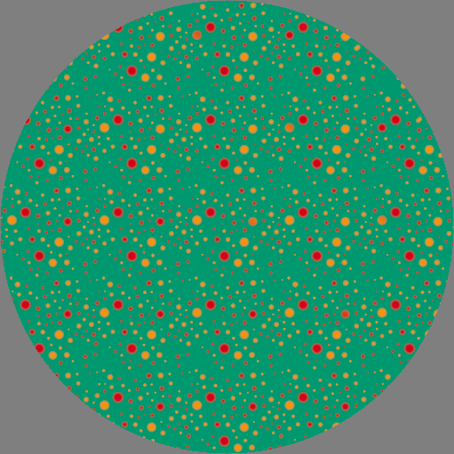
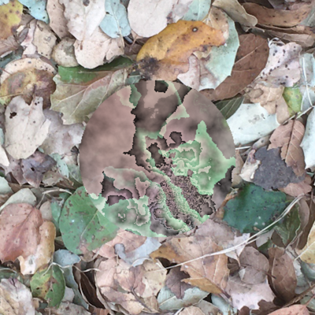
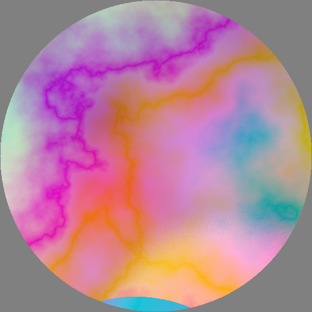
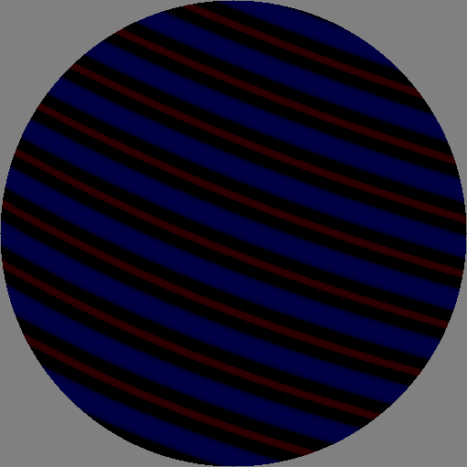

This page
on GitHub
Introduction
TexSyn is an idiosyncratic library for procedural
texture synthesis. It is not primarily intended for use “by human hands.”
For the most part,TexSyn programs will be automatically generated and
optimized using a Genetic Programming system. This is a blog (or a lab
notebook? a design diary?) about making TexSyn. It is not proper
documentation, although it might be some sort of a starting point. Mostly
this describes in “blog order” the steps and design decisions made in its
construction. There is some background and introductory information, at
the bottom of this page, in the entry for December
15, 2019.
(While the library is written in c++, many of the code samples below are
shown in a simplified style: textures are often written as an isolated
expression rather than a complete c++ statement, semicolons are often
omitted, as are auto declarations when defining variables.)
Note: as of May
6, 2020 an incompatible change was made to improve gamma handling.
For entries dated before then, the given TexSyn code, if re-rendered anew,
will produce a texture that looks different from the one shown in the doc.
It will generally be brighter and less saturated.
April 1,
2021
Mirror should not scale, and other stories
Today I found a bug in the Mirror texture operator. (See post
on March 9, 2020, making it a 388 day old bug,
yikes!) I would suggest that by the principle
of least surprise, applying Mirror to a texture should
simply mirror it about the given line. Unfortunately, as originally
written, the given tangent(-to-the-mirror-line) vector was treated as a
basis vector of the new space, so had the unintended effect of scaling
the input texture by 1/length.
This bug was very simple to fix, but shows a problem with doing your
testing with self-designed examples. I am a fan of unit tests (and TDD)
but in the end, they only test for the failures you anticipate. I made
simple test cases, by hand, when working on Mirror, which in
retrospect were too simple. For example: passing in pre-normalized
vectors, probably parallel to the coordinate system axes. Karl
Sims did pioneering work in evolutionary(/co-evolutionary)
morphogenesis and behavior. He noted that evolution was great at coming
up with unanticipated test cases, exposing bugs, which evolution would
then exploit to increase fitness.
How this came up: I was doing a quick check of evo_camo_game
after a code modification, to verify things were behaving correctly.
This camouflaged prey appeared at step 324 of a run on my “clover”
background:

I had been surprised by similar textures before, so decided to dig in.
This texture exhibits an obvious square tiling. TexSyn supports such
textures (see last example on March 12, 2020)
but I've seen too many like this (perpendicular, square, axis-aligned)
to believe that was the source. I suspected it was a scaled down version
of the “large” tiling used for spot patterns. I saved the thumbnail
above, which now also saves the source code:
Mirror(Vec2(3.21816, -3.75822),
Vec2(3.35559, -2.45618),
LotsOfButtons(0.525498,
0.961501,
0.142252,
0.435903,
0.113291,
Vec2(1.57994, 4.01201),
Gradation(Vec2(1.80012, -2.66427),
Gamma(9.51904,
Uniform(0.960211, 0.096008, 0.597687)),
Vec2(1.78565, 2.38711),
Blur(0.409173,
BrightnessWrap(0.271493,
0.0877538,
BrightnessToHue(0.55085,
AdjustSaturation(0.231542,
EdgeDetect(0.598311,
Uniform(0.814141, 0.52608, 0.431994))))))),
0.754812,
Twist(2.92905,
1.55438,
Vec2(-2.18284, 4.04233),
BrightnessWrap(0.887923,
0.72951,
Affine(Vec2(-0.3471, 4.48348),
Vec2(-3.05151, -0.422401),
AdjustBrightness(0.635429,
Subtract(Uniform(0.165418, 0.545178, 0.589462),
BrightnessWrap(0.940368,
0.6996,
Uniform(0.538748, 0.0987566, 0.542896)))))))))
Looking at just the first three lines, indeed there is a LotsOfButtons
operator, wrapped by a Mirror operator. I re-rendered the
texture:

Once I changed Mirror to normalize its line_tangent parameter, I got:

And indeed, when I rendered just the third parameter to Mirror, the LotsOfButtons
operator itself, I get the same thing, which is (I think) what
it should be:
But this is a good news / bad news situation, or perhaps a “twofer” of
old bug discovery. I suspect the “spots” (the textured “buttons”) should
all be visually similar, the same gradient between two shades of orange.
Instead, I see some orange and some a more red color. More on that as I
dig further.
March 28,
2021
Gabor noise experiments
And now for the first time since July 31, 2020,
a post in this TexSyn devo blog about texture synthesis! Have you ever
built something incorrectly, then repeatedly tried tweaking it, while
failing to understand the underlying problem? What...no? Hmm, right, me
neither...
On a completely unrelated topic, here is a (now finally working!)
prototype of noise pattern synthesis using sparse Gabor kernels. This is
roughly based on the SIGGRAPH paper Procedural
noise using sparse Gabor convolution (2009, Lagae, et al.).
A preprint of that appeared while I was working on an earlier version of
this library, so I make a quick
prototype. It was too slow to use as-was, so I did not use this
category of noise texture in my earlier work. Much later, I found
another SIGGRAPH paper Procedural
phasor noise (2019, Tricard/Efremov, et al.) which
improved on this approach to noise synthesis. That technique is next on
my agenda.
I wanted to start with the 2009 version. This GaborNoisePrototype
texture operator combines two given textures based on a scalar texture
composed of many randomized Gabor kernels. The parameters are: the
number of kernels (over a 10x10 region,
whereas the renderings below have a diameter of 2), min and max
bounds for random kernel radius, min and max bounds for random kernel
wavelength, min and max bounds for random kernel rotation, and the two
input textures:
Uniform orange (1.0, 0.5, 0.1)
Uniform cyan_blue(0.1, 0.5, 1.0)
GaborNoisePrototype(1000, 0.3, 0.6, 0.01, 0.03, 0, pi * 0.25, orange, cyan_blue))
GaborNoisePrototype(1000, 0.2, 0.8, 0.01, 0.03, pi * 0.33, pi * 0.66, orange, cyan_blue))

March 26,
2021
Selection weights for initial random GpTrees
Yesterday I added a new feature to LazyPredator: a new optional
parameter to the constructor for GpFunction to adjust the
likelihood a given function is selected during construction of the
initial random population of GpTrees for a run. See
details here.
It seemed to me that the three “lots of spots” texture patterns were
overrepresented. Now this might have been my own fault for favoring
those as better camouflage. Or it could have been that there are three
such operators (LotsOfSpots, ColoredSpots, and LotsOfButtons)
and so, in combination, they were chosen three times more often. So in
TexSyn's GP::fs() I changed these three operators to have
⅓ the chance of being selected. In addition “because I could” I doubled
the likelihood of choosing SoftMatte, my favorite texture
operator.
I did a quick run to “shake down” these code changes, and in the
process added some illustrations to the “doc”
for the alpha version of the evo_camo_game
app. Step ~2000 of a run using a “clover” background is shown below:
March 22,
2021
UV lichen
This camouflage run was based on another unique image from helpful
folks on the Facebook group Lichens,
Mosses, Ferns and Fungi. Stephen
Axford kindly gave me permission to use this
image. He lives in Australia but travels the world to photograph
and study fungi. (See his lovely video autobiography.)
This photo however was taken at his home. It is the lichen-covered trunk
of a “Bangalow
Palm” illuminated by 365nm UV (ultraviolet) light. These lichens
(but apparently not all?) fluoresce in ultraviolet. So the unusual
colors are from the UV and the irregular shape of the colored patches
are due to the growth and competition for space between the various
lichens. For context, here is another
view from further away.
Below are views of two competitive “tournaments” each showing three
circular prey with their evolved camouflage textures. In the first image
(at step 1374, not quite half way through the run) they were trying,
without much success, to find a version of those rainbow noise patterns
that would blend in the with background. The brightness and saturation
were in the correct range, but the distribution of hues are off (there
is no green in the background). Also the spatial frequencies do not
match well.
By the end of the run at step 3000, things had improved, but the
quality of camouflage is “only OK.” The circular features allow coloring
something like the scale of patches in the background. But to my eyes,
their geometric regularity stands out and “breaks” the camouflage:
Here are “thumbnail” images of interesting evolved camouflage textures
during roughly the second half of this run, at steps 1205, 1724, 2033,
2260, 2414, 2551, 2882, 2896, 2979, and 2983:


March 15,
2021 üéÇ
Parking lot trees
The ID for this camouflage run was tree_leaf_blossom_sky_20210313_1907
but I think of them as “parking lot trees” — small trees in concrete
planter areas at the end of each row of parking places. The photos were
taken from below, so the background is deep sky blue. Also visible are
tree branches, leaves of various colors, and small white blossoms.
(Photos taken on December 26, 2017, probably in Foster City,
California.)
Keep in mind: this is a purely 2d model of
camouflage. Since these background images show a strongly 3d scene, this
causes some cognitive dissonance. It would be as if there was a
photographic paper print of the background, lying on a desk. Paper
disks, printed with synthetic texture, are placed on top of the photo,
then the user make a judgement on which is most conspicuous. The fact
that sky blue color could be incorporated into these evolved camouflage
patterns is related to this “purely 2d” abstraction. (Sky blue is rare
(to say the least) in nature but has been used in the past for military
aircraft camouflage.)
This run was composed of 3000 steps. Below are two
“tournament” images showing the whole window and three competing
camouflaged prey textures. These are at steps 2092 and 2596 of the run,
shown at ⅔ of original size. I hand-selected these steps based on all
three prey being well camouflaged. And by that I mean a combination of
good quality camouflage and the luck of being placed on a part of the
background where it is effective.
In the first image the three prey use similar camouflage: a black
background (similar to the shadowed tree limbs) with blue spots (which
mimic the sky showing through bits of the tree) and over that a tracing
of edgy green and white patterns (suggesting leaves and blossoms):

In the second image, the upper right prey uses that same approach,
while the other two are variants of a new line of phenotypes. These have
striped patterns alternating between two complex textures, with
irregular “wiggly” edges between stripes:

Shown below are “thumbnail” images of an individual camouflaged prey,
and a bit of its surrounding background for context. These were hand
selected by similar criteria—good quality camouflage in effective
locations—but in isolation, without regard to the other prey in the
tournament. These are in order of “evolutionary time” at step: 131, 257,
1332, 1593, 1858, 2270, 2571, 2662, 2845, and 2976:


March 7,
2021
Bilateral symmetry
One more “thumbnail” from the run on the fungus_pores_2
background. One of the “edgy” phenotype, not very effective as
camouflage, but interesting because it happens to exhibit bilateral
symmetry. This run was started before I made the thumbnail-saving
utility also save the source code text of an Individual's
GpTree. So I don't know for sure, but it looks like the
root of the tree, the outermost texture operator, was Mirror
(see here) with parameters that caused the line
of symmetry to pass very close to the center of this texture.
I sometimes think of these disks of camouflaged textures as something
like a round beetle (like a “ladybug”)
crawling on a textured surface. But the coloration of beetles, like so
many other species, has bilateral symmetry. This post is primarily to
remind myself that sometime I should try a camouflage run where
bilateral symmetry is imposed on top of the evolved texture pattern.
Beyond visual interest, it would add another “twist” to the search for
effective camouflage, since symmetry is often a clue that helps to break
camouflage. Sometimes a well-camouflaged animal is given away only by
its symmetry. (Such as in this amazing
owl photo, by the excellent nature photographer Art
Wolfe. Buy his fantastic book Vanishing
Act: The Artistry of Animal Camouflage originally published 2005
in hardcover.)
March 5,
2021
Hiding among the fungus pores
First of all, a big thank you to Colin Brown a(n amateur?) mycologist
and photographer. I saw his photography in the Facebook group Lichens,
Mosses, Ferns and Fungi. He posted a close-up of the pores on the
bottom of the mushroom Trametes aesculi, and a couple of weeks
later, Trametes gibbosa, both taken in Rock Creek, West
Virginia, USA. He kindly gave me permission to use his aesculi
image for my experiments and I assumed the same would go for gibbosa.
I don't know a lot about fungus, but most mushrooms have “gills” under
their caps. Whereas these species are polypore mushrooms with small
holes/slots under the cap. In both cases, these are where the fungus
releases its powder-like reproductive spores. (I've since learned there
is an intermediate form called mazegill.)
What jumped out at me is how similar these are to the labyrinth variety
of abstract Turing
textures (Turing instabilities, reaction-diffusion textures). I
wanted to try evolving a camouflage for a critter trying to hide on
these labyrinth patterns.
While useful experiments, I felt the resulting camouflage was not
particularly successful. Both of these backgrounds have contrasty “large
scale” features, relative to the “body size” (diameter) of the
camouflaged “prey” individuals. Neither run managed to convincingly
mimic the background texture. Even if they had, misalignment of
contrasty features serves to visually emphasize the boundary of the
camouflaged “body” so making the camouflage less effective.
This run, using the Trametes gibbosa photo, developed two
phenotypes. One had a very edgy noise pattern that often seemed to almost
align with background features along its boundary, but its interior was
not much like the background. (See first image below, of a tournament
with three individuals of this first phenotype, at ⅔ of original size.)
The other phenotype was a network of wiggly light and dark features that
somewhat mimics the background, but not very well.

Here are “thumbnails” of three individuals of both types:


Below are three cropped tournament groups (⅔ of original screen size)
from an earlier run with the Trametes aesculi photo.
Throughout an extended run of 5000 steps it failed to develop effective
camouflage textures. At various times it would do a good job of matching
the light or dark browns of the background, or the spatial frequencies,
or the wiggly quality of the background. But it never got all those
things right at the same time.


February
22, 2021
One more run on “oak leaf litter”
Not that anyone cares, but this is out of order. I will soon post
images from a run on a different background. Recent code edits include
changes to placement of textures on background for camouflage. (This is
prep for saving “thumbnail” images of textures with clean backgrounds.)
I also turned up the default “evolution power” for camouflage by 20%.
(Previously it used a population of 100 individuals in 5 breeding
subpopulations (demes), now it is 120 individuals in 6 subpopulations.
These parameters can be overridden in the command line version.)
Otherwise the run shown below is like the previous two. I ran it for
almost 2000 steps. It seemed to develop some effective camouflage
patterns. It seemed to have a “healthy” diverse population, which
continued to invent new patterns throughout the run.




February
9, 2021
Another prototype camouflage run
After adding handling of “argc/argv” unix-style command line arguments
to the Camouflage class, I made another run using that
form of specification. (Previously I mostly fiddled with parameters
inside my code via my IDE and recompiling.) The results were pretty
good, entertaining even, as shown below. For the previous week or so I
was looking into ways to distribute binaries of the tool but ran into
some roadblocks. For the time being, the only way to use it is to build
it yourself from sources. In case anyone reading this is interested,
please contact me for details.
I used the same set of background images (“oak leaf litter green
brown”) but chose a different seed for the psuedo-random sequence
generator. I need to add a command line argument for specifying that.
This software is designed to be strongly reproducible (even across
platforms) despite being based on randomized algorithms. The results
will be identical if you make two runs with all the same parameters
(including, in this case of interactive evolution of camouflage, making
the same interactive selections). If you want the runs to be
different, changing the random seed is required.
Near the top of my to-do list is better tools for logging these
camouflage runs, and recording images from the run. Initially I want to
have a way to say “save the whole window showing the current tournament
of three textures” and “save an image of the indicated texture along
with its nearby background.” I may also want to add the ability to save
the program (GpTree) for a texture. So far I have just been
using my laptop's screen capture utility to collect these images. Here
is a cropped image of a tournament at around step 700:

Some examples of cryptic (well camouflaged) “prey”, from later in the
run, with a bit of the background texture on which they were found:


A side note: as you may recall, the user's task in
this “game” is to pick out the texture which is “worst” — the least
well camouflaged. In the beginning of a run this is difficult since
almost all of the textures are bad: they stand out against the
background and are not at all camouflaged. It can be hard to decide
which of the bad textures are the worst. Early in a run there are lots
of textures which are just a single uniform color. While selecting for
non-uniform textures, I seem to have given too much of a boost to a
species of multi-spot patterns. They were fun to look at but not very
well camouflaged:


Here is a point where the “spot” species is doing its best to be
camouflaged, but losing the race to two different noise-pattern-based
species are starting to perform better:
January
29, 2021
Early interactive evolution of camouflage
Since the last entry here, there was some work in LazyPredator on tree
size limits, then for the last two weeks I've been prototyping a user
interface for “interactive evolution of camouflage”, the subject of my 2011 paper. My work on
TexSyn and LazyPredator has been aimed as restarting that line of
research with a more robust software foundation. Rebecca
Allen, my friend-since-grad-school, gave me a nudge to get back to
camouflage already. My first thought was that there was still lots of
infrastructure work to do, but then decided the time was about right.
And indeed, except for a small tweak in LazyPredator, most of the work
has been on the GUI side. Two weeks in, I have an “almost working”
version of the 2010 concept of interactive evolution of camouflage. It
is based on an instance of coevolution in nature. Imagine a type of
predator that uses vision to locate their prey—and prey who use
camouflage to escape detection. Effective camouflage helps prey survive
to reproduce and pass on their genes. Effective “camouflage breaking”
allows predators to eat and so survive to reproduce and pass on their
genes. These adversarial processes coevolve, producing mutual
improvement, leading to predators with excellent visual perception, and
prey with sometimes astoundingly effective camouflage.
In this simple simulation—essentially half of the larger goal—a human
user plays the part of the predator. The evolutionary texture synthesis
software plays the part of the prey whose camouflage is evolving. This
can be thought of as a “game” where the human player competes with the
simulation. Each turn of the game corresponds to one tournament/step in
the steady-state evolutionary computation:
- A random background image is chosen to represent the environment.
- A random choice is made from a set of photographs, then a random
rectangle is selected in that photo.
- In the examples below I am using six photos of oak leaf litter,
shot on the side of a road near my house last August.
- Three unique textures are selected at random from the LazyPredator
population.
- The three textures are placed on the background in random,
non-overlapping positions.
- The software waits for the user/player to indicate (with a mouse
click) which of the three is most conspicuous — least well
camouflaged.
- This texture “loses” the tournament, and is replaced in the
population by a new offspring, a crossover whose parents are the other
two textures in the tournament.
Each time I made a code change, I would play a few rounds of the game
to make sure everything was still working as expected. This time I got
to step 70 and the texture in the upper left caught my eye:

Hmm, that is not bad. The range of colors in that texture were pretty
similar to the background image. The spatial frequencies in that texture
were pretty similar to the background image. In fact one could say that
texture is pretty well camouflaged against these backgrounds.
In the previous steps of the evolutionary selection process, textures
that were “obviously wrong” were being weeded out of the population. For
example, textures with the wrong colors (like the multi-colored middle
texture above) or had spatial frequencies that were too high or too low
(like the flat beige texture with gray spots on the right), were removed
and replaced with new offspring. In one surprising step, GP crossover
created a new texture that had both good distributions
of colors and frequency pattern. Dang!
To be clear, I think this is “pretty good” rather than “excellent”
camouflage. The brightness is a bit too high and/or the contrast range
is not wide enough. The evolved texture lacks details as dark as some of
the shadows in the background photograph. The ability to mechanistically
determine the quality of camouflage is “future work” in this study.
I continued to “evolve” this run for another 200 steps or so. In this
tournament we see a nicely cryptic texture (lower left) and two
under-performers. The middle texture seems to be a uniform color with
“buttons” of a green/beige texture. Something similar seems to be a
component of the camouflage texture in the lower left.
Later in the run, the well camouflaged textures are enjoying
“reproductive success.” Their good genes are spreading through the
population. Below is a turn of the game where all three textures in a
tournament are variations on the same successful cryptic texture. If you
look closely at the upper left texture, you can see an important
property of effective camouflage, some of its boundary/silhouette seems
to “dissolve” away. Instead of a hard-edged circle, parts now look
nibbled away:

Just for a little context, the images above are cropped out of the full
GUI. This shows (at a smaller scale) the whole window, full screen on my
laptop, relative to three textures:

January
10, 2021
LimitHue results from LazyPredator tests
I continue to use the “LimitHue” fitness function for
testing recent changes to LazyPredator (see posts in its blog from December
23 through January
5). A few of them are visually interesting, especially as better
optimization leads to higher fitness. To recap: LimitHue
prefers textures which contain primarily four distinct hues (using a
discrete 12 step hue space), wanting those hues to be “non adjacent”
(meaning hues 1, 2, 3, 4 are not as good as hues 1, 3, 5, 7), and close
to zero hues in the other 8 “buckets.” In addition, there are fitness
penalties for very bright or very dark colors, insufficiently saturated
colors, and textures with too much high frequency (“confetti”) noise.
Here are two results from a test of subpopulations (“demes”) in a LimitHue::comparison()
run called LimitHue_comparison_20210105. On the left, with
a fitness of 0.956924 and on the right with fitness of 0.904232, both
from the condition using four subpopulations (versus the control
condition of a single population):


And these two results from LimitHue_comparison_20210103
run. On the left, with fitness 0.932506 (from the single population
condition). It captures the “mostly flat regions of constant vivid
color” I was picturing when I designed LimitHue. On the
right, with fitness 0.94534 (from the four subpopulation condition)
which seems to be near the lower bound on acceptable saturation level:

December
3, 2020
Recent infrastructure work
During the HueLimit runs described below on November
18, a nagging problem was that the virtual memory partition of
TexSyn grew at a significant rate, indicating a “memory leak.” My laptop
could run for 12-18 hours before exhausting its memory partition at
about 50 GB. I did know that I had prototyped GpTree::eval()
to construct Texture objects on the heap and realized they
were not being freed/deleted when the Individual
containing them was deleted. The Texture objects
themselves are pretty small, but I assumed the OpenCV cv::Mat
(in which Textures store their rendered pixels for display and file
output) were not getting deleted, causing the leak.
Turns out that was not the problem, it was actually a
memory leak in OpenCV itself, for each window it opens on macOS. (See my
OpenCV bug
report.) But I didn't track that down until I put in the
GpTree::deleteCachedValues() to free those Texture
instances created during eval(). But to do that
I had to track down a very confusing bug which happened to be introduced
by a typo in GP.h where the specification for the GpFunction
for CotsMap indicated an extra parameter of type Texture.
This caused the GpTree to have a “phantom limb” which produced symptoms
taking me a long time to understand.
Having diagnosed the memory leak, the fix was simply to avoid opening
so many windows. The many windows came from my goofy-prototype-hack of a
user interface which opened and closed thousands of windows. I needed to
do the obvious and normal thing: to have a single window, and update it
as required. I also wanted to be able to put text labels on that GUI
(graphical user interface) control panel. So I started digging into
OpenCV's support for drawing text on images. That led to finding another
bug, which
led me to reconsider a decision I'd made almost a year ago about storing
Textures in cv::Mats of type CV_32FC3. That
is, my image data represents the color of each pixel as three 32 bit
floating point numbers (representing red, green, and blue) for a total
of 96 bits per pixel. Its is much
more common to use 24 bits per pixel with an 8 bit
byte to represent red, green, and blue (aka CV_8UC3). I
have made the change and can see no difference, since my screen used 24
bits per pixel color space. At the moment I don't know how to verify
there has been no change. I was going to post some images here, but as
far as I can tell, they are identical so there is nothing to see.
November
18, 2020
HueLimit test for “absolute” fitness
Preparing some “work in progress” slides
for a presentation at Dan Shapiro's UCSC class, I made an extended
series of runs of the HueLimit evolution test. I was a bit
disappointed with previous runs using “multi-objective fitness
functions” — related to Pareto
optimality. I had been time-multiplexing the various fitness
components, for example to optimize for both A and B, I would randomly
choose between optimizing either A or B on each evolution step. The
results seemed a little “weak” — the population improved according to
both A and B, but were not exceptionally good at either.
So I backed up to some previous work in this area (Goal
Oriented Texture Synthesis, 2011-2013) and followed the approach
used there. The multiple fitness measures are mapped onto the range [0,
1] and then multiplied together for a final numerical fitness. This is
“absolute fitness” that can be measured for a single individual in
isolation. (As opposed to “relative fitness” measured in competitive
tournaments.) The fitness components can be “weighted” by limiting the
portion of range they occupy. For example a component on the entire [0,
1] range is “strong” while one remapped to [0.9, 1] has only a mild
strength.
The HueLimit fitness function was primarily based on
limiting hue distribution. Each TexSyn texture was randomly sampled, and
each sample was assigned to one of twelve “buckets” in a hue histogram.
A perfect fitness was to have exactly four of the twelve hue buckets
with ¼ of the samples each, with the other eight buckets empty.
Deviation from this pattern reduced the fitness. In addition two other
minor fitness components required the texture have average saturation
values above 0.5, and for the average brightness to be in the middle 80%
of the brightness range (basically, neither black nor white). The
result, then is a “random texture” which meets certain constraints
defined by the fitness function. I made about 50 runs like this, saving
a render of the best individual at the end of each run. Then I hand
selected the textures that seemed most visually interesting to me. Each
HueLimit run has a population of 100 individuals, with max
initial size of 100, and 1000 evolution steps (10 “generation
equivalents”). These each took about 15 minutes to run on my laptop.



November
4, 2020
Hard limit on LotsOfSpotsBase constructor runtime
Back around April 3 when I started working on
the LotsOfSpots family of texture operators (with ColoredSpots
and LotsOfButtons, all now derived from LotsOfSpotsBase)
it was hard to know how they would actually get used in evolutionary
optimization. A texture render time that is “ok” in ones and twos starts
to become uncomfortable in the thousands. On September
27 I used a big hammer to prevent unreasonable runtime while
rendering textures with nested Blur operations. Recently I
have found that the embarrassingly long pauses during evolution test
runs are caused by the constructor for LotsOfSpotsBase
which builds the random pattern of “spots” then runs a relaxation
process to reduce any overlap between these randomly places spots. The
basic problem is an O(n²) algorithm, and a possibility that n
can get fairly large, depending on the interactions of several other
parameters. There were 11,000 “spots” in one case that ran so long I
paused the run to poke around with my debugger. (It is not literally an
O(n²) algorithm, but not worth getting into here.)
I decided that I ought to put a hard ceiling on the number of spots in
these textures. It is in a global variable, so can be changed, or set to
“infinity” if needed, but by default I have decide there will be no more
than 5000 spots. Similarly I put the parameter controlling the max
number of relaxation steps in a global variable. Its value remains 200.
To work on this I defined a test case whose parameters produce a large
number of spots:
spots = LotsOfSpots(0.95, // density
0.02, // min radius
0.05, // max radius
0.01, // soft edge width
0.01, // margin
Uniform(1, 1, 0), // spot color
Uniform(0, 0, 0.8)) // background color
The high density combined with the small radii lead to a texture with
21694 spots, which it tries up to 200 times to “relax” any overlaps. On
my laptop that ran for about 6.7 seconds. For reference here is that spots
texture, and it “zoomed out” with Scale(0.2, spots) to see
the whole of the tiling texture. (Normally the tile is five times larger
than the default render range of [-1, +1], so the second image show the
full tiling range of [-5, +5]:

")
Those were rendered with:
LotsOfSpotsBase::max_spots_allowed = std::numeric_limits<int>::max();
which is the new way of getting the old behavior. The two corresponding
images below are the exact same texture specification, but with the new
default max_spots_allowed of 5000:
")
While the original version with 21694 spots took 6.7 seconds, this
version with 5000 spots took 0.36 seconds. Still kind of slow, but I am
willing to live with it for now. Note that the overlap minimization
process runs multi-threaded, so typically runs up to eight threads on my
laptop.
Unfortunately, in the process of working on this
change, I observed an annoying artifact, which I assume is a bug. The
texture below is like the second one above (in the older no-limit case)
but with a smaller scale: 0.09 versus 0.2. In this case, the boundaries
of the tiling patter become visible. (In this view, one full tile is in
the center with eight partial tiles around it. The artifact forms a
subtle “#” pattern.) The LotsOfSpotsBase class goes to
considerable effort to form a pattern which tiles seamlessly. Given I
have rendered many zoomed-out spots textures before without obvious
artifacts (e.g. on April 19) I suspect this may
have to do either with the relatively small size of these spots, or the
margin (spacing between spots) parameter which was added
late in the development of the “spots family” of operators. I've put
this issue on the bug list.
LotsOfSpotsBase::max_spots_allowed = std::numeric_limits<int>::max()
Scale(0.09, spots)
October
27, 2020
Gamma overflow
While experimenting with evolution and the structure of tournament
selection in LazyPredator, I ran into a TexSyn bug. In one run, after
about 5000 steps I hit an assert failure in Color::convertRGBtoHSV().
The problem was an inf as one of the input RGB components.
This was coming from the output of a Gamma texture operator,
which had raised ~200,000 to the ~8.5 power which is outside the float
range. (I suppose if I had been using 64 bit floats (“double”)
this case would have been ok.) But in general, TexSyn allows RGB color
components to range over the entire float range, so Gamma
would eventually hit a large enough input value and exponent to cause
this kind of range overflow. I fixed the bug by adding a special case in
function Color::gamma() — if the input is finite (std::finite())
but the result of exponentiation is not finite, then
it returns white.
To recap why Colors are allowed to have “infinite” range:
the idea is to allow composition of texture operators without regard to
order. I want it to work, for example, to add two textures in the range
[0, 1] — the “unit positive RGB color cube” — producing a texture whose
colors range on [0, 2], then scale the brightness back
into [0, 1]:
AdjustBrightness(0.5, Add(ColorNoise(...), ColorNoise(...)))
The expression above computes the average of those two noise patterns.
Similarly, the subtraction below produces RGB values ranging on [-1, 1],
adding white offsets it to [0, 2], which is then scaled to [0, 1]:
AdjustBrightness(0.5, Add(white, Subtract(ColorNoise(...), ColorNoise(...))))
If color values were clipped to the unit interval after each operator
it would cause texture synthesis to require certain operator ordering.
(E.G. scaling before adding to keep the result in range.) My goal is to
remove that constraint and so allow evolution to more easily optimize
the textures.
October
5, 2020
Experiment: minimum size for crossover snippet
As mentioned on October 3, treating all nodes
of a GpTree as candidates for crossover implies that
“many” crossover operations serve only to move a leaf node from one tree
to another. (For binary trees, about half the nodes are leaves.) There
is something minimal and elegant to this approach. But I wonder if it is
the best choice, especially for the TexSyn FunctionSet
where those numeric leaf values are just the “knobs” on various texture
operators. In broad terms, about half the crossovers would actually
change the tree of texture operators, while the other half would make
changes to their parameters.
Relevant to this is that next on the “to do” list is jitter/jiggle mutations
of constant leaf values. I intend to jiggle constant values after
crossover, so “wasting” half the crossover operations on merely changing
a single constant in the tree (of size 100-200 nodes) seems a poor
choice.
I wanted to experiment with concentrating crossover operations on
“structure changing” operations rather than “parameter changing”—so that
a typical crossover would actually replace one subtree (of nested
texture operators) with another one. In the current version, each node
(including leaves) have uniform probability of being selected for
participating in crossover. I considered weighting the probability of
choosing a node to be proportional the the size of the tree below it.
But this seems to give far too much weight to the root node and its
immediate subnodes. I also considered just limiting crossover to
subtrees that return a value of type Texture (as opposed
to Vec2 or float). But that seemed too ad
hoc.
The experiments below add a new parameter to crossover, the minimum
size of a subtree (from the “donor” parent) that can be considered (for
insertion into a copy of the “recipient” parent). By default, in the
minimalist neutral strategy, that value is 1, meaning an individual
numeric leaf node can be crossed over. If min_size is 2
(or more) it means that leaf nodes (or other small subtrees) are
excluded as crossover candidates. While as before,
many many of the textures are obviously “variations on a theme” of the
two parent texures, using a larger min_size clearly
produced a wider variety of changes. I am leaning toward making “min
size for crossover” a parameter of FunctionSet, defaulting
to the neutral value of 1, but probably set to 2 for TexSyn. (Note: the
eight examples below were hand-selected from a run of 50 crossovers,
based on the same parents in the October 3
experiments, with a min_size of 5.)


October
3, 2020
Crossover
LazyPredator's FunctionSet::crossover() operator for strongly
typed genetic programming appears to be working. After a few
simple abstract tests, I tried this test with the TexSyn FunctionSet.
I created two random “parent” GpTrees, then made 30
“offspring” GpTrees, which combine elements of both
parents. Here are eight of those variations, each of which is close to
one parent (stripes) or the other (mostly uniform).
The difference tend to be fairly subtle. I assume that “most” of the
nodes in the parent trees of size 100 are numeric values at the leaves.
As a result, many of the offspring differ from their parent by just one
number being replaced by another. I think that is correct but
may experiment with biasing the crossover points to be higher up the
trees.



September
27, 2020
Reconsidering convolution
The most “heavyweight” Texture operators are those based on
convolution: Blur, EdgeDetect, and EdgeEnhance.
(Only Blur actually does a convolution, EdgeDetect
and EdgeEnhance are derived from Blur by “unsharp
masking.”) For all other Texture operators, each output pixel getColor()
requires one, two, or some small number of input getColor()
lookups in textures further down the tree. For each pixel of a Blur,
a large number of lookups are needed to sample the input texture under
the support of the convolution kernel. That value had been set to 11x11
or 121 samples per output pixel getColor() lookup.
In normal image processing, blurring an image can be done quickly,
especially when using a GPU. The whole image can be blurred at once, in
place in a memory array. With a Gaussian kernel, that can be separated
into two sequential one-dimensional passes. None of these speedups apply
to TexSyn where textures have “infinite” extent and are routinely
addressed via non-linear warps. A TexSyn textures has no way to
determine the spacing between adjacent pixel samples—and cannot know a
priori the bounds of its “infinite” extent that will be
sampled—so cannot build memory arrays that cache the pixel colors. (I
write “infinite” in quotes because these textures are actually defined
over the cross product of two c++ floats, which is not
equivalent to ℝ² the cross product of two reals.)
Nonetheless the current design allows warping the result of applying Blur
to a warped texture, at the cost of taking about 100 times longer than
other operators. But until I started generating random TexSyn trees with
Blur, EdgeDetect, and EdgeEnhance, I was
chagrined that I had not considered the cost of composing
multiple convolution operators by nesting. Now we run into some subtrees
— such as Blur(EdgeEnhance(...)) — that are 10,000 slower
than normal operators!
One possibility is deciding we didn't really want blur and edge
operations in TexSyn, and I guess that could still happen. But first I
want to see what I can do to chip away at the cost. One approach is to
disallow the deadly nested convolutions. This could be done as a
constraint on GpTree construction. But that would add a
lot of complexity for this one edge case. Another way is to say that a
nested convolution operator turns into the identity operator. This is
appealing because it only touches the relevant TexSyn operators, and in
fact merely Blur. So I implemented that.
Another approach is to use Blur's stochastic sampling to
trade off image quality for speed. All it takes is reducing the number
of subsamples to run faster, while causing more noise in the blurred
image. That global parameter is called
Blur::sqrt_of_subsample_count and had been set to 11 (121
subsamples). I have now decreased it to 7 (49 subsamples). So it now
runs in about 40% (49/121) of the time it did previously. Below are the
input Grating texture, and a comparison of Blur at
11x11 (as before, on the top half) and 7x7 (as now, on the bottom half):
yellow = Uniform(1, 1, 0)
blue = Uniform(0, 0, 1)
grating = Grating(Vec2(), yellow, Vec2(0.2, 0), blue, 0.01, 0.5)
filter_width = 0.1
blur_7_11_compare = Gradation(Vec2(0, 0.1),
Blur(filter_width, grating),
Vec2(0, -0.1),
Blur(filter_width, grating))

Now here is a similar texture, wrapped into a spiral by the COTS patch
operator. Note how the zone of transition between the two colors grows
with the spiral as do the width of the stripes. (this is the same grating
texture as above, scaled up by 10, with the filter width also scaled by
10 to match) These three textures show the result with Blur::sqrt_of_subsample_count
set to 40, 11, and 7
(corresponding to 1600, 121, and 49
subsamples per output pixel). 40 is ridiculously high and slow-running,
but shows what the Blur looks like with essentially no
sampling noise. The middle value of 11 is what was previously used, and
7 is the new default value. The resulting stipple pattern looks a bit
like colored pencil on textured drawing paper.
CotsMap(Vec2(0.0, 0.0),
Vec2(0.4, 0.0),
Vec2(0.2, 0.2),
Vec2(0.0, 0.4),
Blur(filter_width * 10, Scale(10, grating)))


September
23, 2020
Completed TexSyn's FunctionSet
I completed building a LazyPredator FunctionSet for
TexSyn's API. Or what I have come to regard as the “modern subset” of
TexSyn's API. For example TexSyn still defines Scale, Rotate,
and Translate, but I consider them deprecated, replaced by Affine.
I will post an updated list soon, but of the 52(?) Texture operators in
TexSyn, I defined 43(?) in the GP FunctionSet. This is all
subject to change. I also defined some “helper functions” in the new GP.h
file to reduce the repetition of boiler place, especially in the eval()
lambda specified for each GpFunction.
Shown below are some of the random textures produced with this full FunctionSet,
all made with a max size of 100. As I was testing I would save off
examples that I thought were a bit interesting. Here a six pointed star
motif, with confetti, all in pastel colors.
Ring(6.05007,
Vec2(0.913583, 0.577358),
Vec2(0.563676, 0.0549508),
Max(Mirror(Vec2(-0.8868, 0.936961),
Vec2(-0.438223, -0.375759),
LotsOfButtons(0.863516, 0.690535, 0.715235, 0.137752, 0.989513,
Vec2(0.0813249, 0.105461),
Gamma(1.23506,
Uniform(0.752434, 0.716533, 0.128006)),
0.925224,
LotsOfSpots(0.337259, 0.297271, 0.342979, 0.0796881, 0.829768,
ColorNoise(Vec2(0.64538, 0.832061),
Vec2(-0.825276, -0.968037), 0.730953),
ColorNoise(Vec2(0.355079, -0.307888),
Vec2(-0.931093, -0.272665), 0.60784)))),
CotsMap(Vec2(-0.0810903, -0.351246),
Vec2(-0.227743, 0.102102),
Vec2(0.0972011, 0.137803),
Vec2(0.138099, 0.0864316),
Hyperbolic(Vec2(0.305696, -0.83856),
1.37151, 9.30557, 7.92249,
Uniform(0.748912, 0.938295, 0.342172),
Uniform(0.342688, 0.907577, 0.417378)),
SoftMatte(Uniform(0.210974, 0.980838, 0.843935),
Gamma(2.74955,
Uniform(0.97905, 0.950607, 0.0890492)),
Gamma(8.93982,
Uniform(0.400887, 0.487526, 0.870267))))))
Here an elaborate pattern of cream drops on pea soup:
MobiusTransform(Vec2(-0.0825154, 0.589955),
Vec2(-0.88387, 0.422129),
Vec2(0.372059, 0.443364),
Vec2(-0.51013, 0.358481),
Add(BrightnessWrap(0.776266,
0.221761,
Ring(6.85811,
Vec2(-0.684147, 0.428017),
Vec2(0.0123824, -0.901044),
Gamma(2.203,
Twist(-0.385167,
-0.0458701,
Vec2(0.184168, -0.098526),
Mirror(Vec2(-0.0467548, -0.867534),
Vec2(-0.115532, -0.309734),
BrightnessToHue(0.795387,
AbsDiff(HueOnly(0.554474,
0.842341,
Uniform(0.252994, 0.383974, 0.92492)),
BrightnessToHue(0.694017,
Uniform(0.257844, 0.981215, 0.992339))))))))),
LotsOfButtons(0.77023, 0.335993, 0.489251, 0.530601, 0.0553876,
Vec2(0.317931, 0.973596),
HueOnly(0.42517,
0.872893,
AdjustSaturation(0.647189,
Uniform(0.678778, 0.538012, 0.0466902))),
0.810624,
Gamma(0.90588,
Min(SoftThreshold(0.345021,
0.385886,
Uniform(0.41695, 0.43103, 0.104457)),
Wrap(-0.297351,
Vec2(0.358198, 0.912694),
Vec2(0.400779, 0.701969),
AdjustBrightness(0.0167935,
Uniform(0.644239, 0.161153, 0.287077))))))))

Fried space egg, sunny side up.
AbsDiff(SoftThreshold(0.298399, 0.727319,
Gradation(Vec2(-0.39333, 0.136865),
ColoredSpots(0.28252, 0.863896, 0.742588, 0.784091, 0.452963,
Uniform(0.964614, 0.625866, 0.411626),
Uniform(0.866328, 0.899633, 0.20739)),
Vec2(0.886619, -0.30344),
BrightnessWrap(0.193428, 0.158088,
Mirror(Vec2(0.91596, -0.785272),
Vec2(0.0809205, 0.892906),
StretchSpot(0.985838, 0.88553,
Vec2(0.153175, 0.517769),
AdjustHue(0.449036,
SoftThreshold(0.0201699,
0.983103,
Uniform(0.160094, 0.334016, 0.528756)))))))),
Max(BrightnessToHue(0.333162,
AdjustSaturation(0.0850126,
Max(ColorNoise(Vec2(0.336733, 0.632002),
Vec2(0.371583, 0.644038),
0.275456),
BrightnessToHue(0.528467,
Min(Uniform(0.821086, 0.168073, 0.15639),
Uniform(0.00221804, 0.328301, 0.751129)))))),
LotsOfButtons(0.610481, 0.363803, 0.9173, 0.298918, 0.701165,
Vec2(-0.717095, -0.271969),
Uniform(0.36265, 0.211855, 0.388246),
0.353225,
Add(Uniform(0.0283104, 0.951895, 0.792557),
Uniform(0.0151601, 0.389861, 0.339307)))))

Lots of stretched-out spots:
SoftMatte(StretchSpot(1.65618, 1.70558,
Vec2(0.220822, -0.484598),
AdjustSaturation(0.0869728,
Wrap(0.780284,
Vec2(-0.0948536, -0.586182),
Vec2(0.0117428, 0.372895),
SoftThreshold(0.7921, 0.337999,
BrightnessToHue(0.445559,
Uniform(0.838806, 0.327221, 0.385638)))))),
BrightnessToHue(0.294684,
AdjustHue(0.766938,
AbsDiff(Add(BrightnessWrap(0.379944,
0.0777347,
Uniform(0.398626, 0.405375, 0.0107769)),
BrightnessToHue(0.480222,
AdjustSaturation(0.813353,
Uniform(0.641829, 0.874743, 0.77074)))),
AdjustBrightness(0.959231,
Max(AdjustSaturation(0.42562,
Uniform(0.987204, 0.325772, 0.653587)),
AdjustSaturation(0.762236,
Uniform(0.545807, 0.552129, 0.0672275))))))),
Stretch(Vec2(0.0765375, 0.257372),
Vec2(-0.00445917, 0.112877),
StretchSpot(1.03807, 1.39177,
Vec2(-0.870523, 0.750637),
LotsOfButtons(0.78265, 0.235866, 0.890119, 0.293386, 0.130943,
Vec2(-0.0170715, 0.425005),
Uniform(0.758016, 0.290013, 0.198833),
0.581423,
Max(Uniform(0.294325, 0.677582, 0.432185),
AdjustHue(0.145721,
Uniform(0.77274, 0.34552, 0.668212)))))))
A few others whose source code I forgot to save:


September
22, 2020
WIP: filling out TexSyn's FunctionSet
Adding existing TexSyn texture operators one by one to the LazyPredator
FunctionSet. When it contained only Uniform, Spot,
Gradation, Grating, and SoftMatte, I
generated trees with a max size of 100. Here is a small (size 28) tree
which combines a Grating over a Gradation. Also a
more complex Texture tree (size 96) producing what looks a bit like a
shaded fuzzy green ball over a multicolored background.
Grating(Vec2(0.26869, 0.461954),
Gradation(Vec2(0.167604, 0.86406),
Uniform(0.56669, 0.347976, 0.12547),
Vec2(0.295079, 0.870558),
Uniform(0.550106, 0.721061, 0.691719)),
Vec2(0.0471458, 0.182742),
Uniform(0.169519, 0.670011, 0.662775),
0.67318,
0.592581)
Spot(Vec2(0.0270606, -0.111671),
0.640568,
Gradation(Vec2(0.156171, 0.479821),
Uniform(0.452769, 0.821953, 0.671481),
Vec2(0.567867, -0.488934),
Gradation(Vec2(0.370465, 0.987898),
Uniform(0.143607, 0.216632, 0.422456),
Vec2(-0.164897, 0.402079),
Uniform(0.13807, 0.450368, 0.214707))),
0.837218,
Gradation(Vec2(-0.391453, -0.186617),
Spot(Vec2(0.680379, -0.826925), 1.27738,
Uniform(0.0325629, 0.82633, 0.607977),
1.71849,
Uniform(0.60406, 0.181758, 0.368314)),
Vec2(-0.46888, -0.338268),
SoftMatte(Spot(Vec2(0.454638, 0.315729),
0.633048,
Uniform(0.568433, 0.801311, 0.28252),
1.72779,
Uniform(0.784091, 0.452963, 0.820982)),
Spot(Vec2(-0.176747, -0.982708),
1.73266,
Uniform(0.20739, 0.027998, 0.94331),
0.69656,
Uniform(0.193428, 0.158088, 0.722144)),
Spot(Vec2(-0.785272, 0.54517),
1.08092,
Uniform(0.47373, 0.492919, 0.442765),
1.18617,
Uniform(0.758885, 0.0847335, 0.449036)))))
Layering Spot over Grating over Spot,
size 96:
Spot(Vec2(-0.540721, -0.326729),
0.72255,
Gradation(Vec2(0.350523, 0.213815),
Add(Uniform(0.745849, 0.375344, 0.166896),
Uniform(0.834834, 0.803454, 0.587308)),
Vec2(0.872269, 0.444256),
Uniform(0.479733, 0.906918, 0.109246)),
0.319564,
SoftMatte(Grating(Vec2(0.364624, 0.295435),
Uniform(0.991602, 0.404537, 0.452058),
Vec2(0.5166, 0.767411),
Uniform(0.420852, 0.0787707, 0.225527),
0.230418,
0.368269),
Spot(Vec2(0.920896, -0.192638),
0.577384,
Uniform(0.670203, 0.348083, 0.3225),
0.913576,
Gradation(Vec2(-0.570529, 0.95223),
Uniform(0.0178784, 0.215667, 0.744309),
Vec2(-0.208699, -0.774712),
Uniform(0.674122, 0.761577, 0.649836))),
SoftMatte(Uniform(0.304042, 0.14227, 0.810219),
SoftMatte(Uniform(0.51514, 0.513601, 0.831815),
Uniform(0.993132, 0.452829, 0.808701),
Uniform(0.549863, 0.550531, 0.796817)),
Add(Uniform(0.977974, 0.551423, 0.140097),
Uniform(0.333083, 0.762814, 0.591103)))))
...size=89
Multiply(Wrap(-0.393609,
Vec2(-0.0156267, 0.45183),
Vec2(0.48514, -0.622225),
ColorNoise(Vec2(0.290586, -0.532596),
Vec2(0.435022, -0.625395), 0.924635)),
Min(Add(Grating(Vec2(0.505614, 0.319813),
Uniform(0.227292, 0.0494925, 0.652759),
Vec2(-0.248363, 0.751465),
Uniform(0.221749, 0.452565, 0.0321766),
0.759366,
0.435336),
Spot(Vec2(0.302574, -0.269131),
1.29765,
Uniform(0.600034, 0.192719, 0.256547),
1.82173,
Multiply(Uniform(0.675937, 0.0819467, 0.744247),
BrightnessToHue(0.0572891,
Uniform(0.167216, 0.135414, 0.93294))))),
MultiNoise(Vec2(0.931529, -0.997263),
Vec2(-0.00019452, 0.621546),
Wrap(0.180313,
Vec2(-0.155344, 0.141332),
Vec2(0.600042, -0.499762),
Uniform(0.926494, 0.143688, 0.277342)),
Wrap(-0.631191,
Vec2(-0.292852, 0.484951),
Vec2(0.934354, -0.623622),
Uniform(0.893133, 0.0314834, 0.616199)),
0.0939481)))

September
21, 2020
Runtime connection between LazyPredator and TexSyn
In the August 15 entry I prototyped this
connection using a prototype FunctionSet:makeRandomTree()
to print out the “source code” of generated trees, then hand editing
that into a test jig in TexSyn and rendering the textures. Now it is
actually working, directly evaluating the GpTree and then
passing that result to TexSyn's render utility. See some code details in
the LazyPredator
log. These were made with a FunctionSet for a
portion of TexSyn with GpTypes for Texture
pointers, Vec2 values, and Float_01 values.
It provides two GpFunctions of Texture operators: Uniform
and Spot. Here are a couple of examples. Note that these are
“random” trees(/expressions/programs) with no evolutionary optimization
yet. The next step is to define GpFunctions for all ~50
Texture operators.
Spot(Vec2(0.609615, 0.987836),
0.0602494,
Uniform(0.930115, 0.125967, 0.926106),
0.117543,
Spot(Vec2(0.0590451, 0.83672),
0.402121,
Uniform(0.77876, 0.900702, 0.469339),
0.411421,
Uniform(0.262347, 0.042383, 0.34038)))

Spot(Vec2(0.648294, 0.628089),
0.431737,
Uniform(0.103924, 0.719841, 0.884774),
0.520491,
Spot(Vec2(0.31976, 0.662522),
0.886379,
Spot(Vec2(0.591504, 0.58366),
0.804196,
Uniform(0.897731, 0.170638, 0.0459084),
0.927503,
Uniform(0.935545, 0.882617, 0.0314533)),
0.506059,
Uniform(0.390179, 0.696574, 0.59118)))

August
15, 2020
Random TexSyn programs generated by LazyPredator
As described in LazyPredator's
log, it now has a prototype random program generator. There is
also now a prototype “function set”/“grammar” to describe the TexSyn
API. I used these to generate a bunch of random texture expressions,
rendered some of those, and pick out a few that were a bit interesting.
(Many appeared identical to Uniform or ColorNoise.)
Twist(-1.5007, -3.12824, Vec2(0.389467, 0.832243),
LotsOfButtons(0.862353, 0.326306, 0.00177993, 0.711357, 0.76274,
Vec2(3.0448, 3.68129), Spot(Vec2(1.48987, -4.49347), 1.78005,
ColorNoise(Vec2(-1.32046, 2.42863), Vec2(-1.91713, 0.940589), 0.84564),
0.764313, ColorNoise(Vec2(0.273154, -1.46148), Vec2(-1.18504, -4.00435),
0.724306)), 0.367926, ColorNoise(Vec2(-1.59627, -3.31247), Vec2(2.23131,
-1.37167), 0.698217)))

ColoredSpots(0.0873328, 0.904293, 0.0523186, 0.0906169, 0.854814,
MobiusTransform(Vec2(3.11807, 1.18701), Vec2(-0.589404, 2.75448),
Vec2(-3.33792, 2.08031), Vec2(-2.82157, -3.79023), Uniform(0.409955,
0.158851, 0.22622)), BrightnessWrap(0.0941196, 0.596546,
EdgeDetect(0.985994, Max(MultiNoise(Vec2(-4.08933, -2.55314),
Vec2(-3.52786, 3.43654), Uniform(0.547777, 0.71849, 0.51048),
Uniform(0.0970927, 0.656361, 0.669388), 0.0278431),
ColorNoise(Vec2(-0.665772, -3.61144), Vec2(3.66564, -4.4826),
0.695869)))))

Ring(3.11535, Vec2(3.03757, 0.967017), Vec2(-1.42594, -1.81315),
SliceShear(Vec2(-4.01977, -3.029), Vec2(-3.63676, 2.93948),
Hyperbolic(Vec2(-4.63751, 3.72073), 8.21554, 9.18318, 4.19357,
Uniform(0.642181, 0.261001, 0.428011), ColorNoise(Vec2(-4.05045,
-1.65673), Vec2(-3.66899, 1.61807), 0.792373)), Vec2(-0.478021, 4.5042),
Vec2(4.56995, 0.0112824), ColorNoise(Vec2(3.34685, 3.47989),
Vec2(-0.249423, -0.262976), 0.175241)))

Grating(Vec2(-1.47541, -0.86595), AdjustBrightness(0.0384087,
BrightnessWrap(0.805273, 0.469073, BrightnessWrap(0.401083, 0.670738,
HueOnly(0.281567, 0.0632304, Min(Uniform(0.427763, 0.769109, 0.859361),
ColorNoise(Vec2(2.44752, -4.46087), Vec2(-2.27331, 4.02469),
0.0391472)))))), Vec2(-2.13785, -3.31639), Gamma(1.47854,
SliceToRadial(Vec2(-3.44811, -2.35952), Vec2(-3.74908, 1.89859),
ColorNoise(Vec2(-2.45512, 3.92944), Vec2(1.00124, 3.80463), 0.657286))),
0.965485, 0.55324)

EdgeDetect(0.670139, ColoredSpots(0.7614, 0.427715, 0.698671, 0.885313,
0.0558514, Stretch(Vec2(-4.63756, -4.60256), Vec2(-0.0368361, -2.01205),
AbsDiff(SoftMatte(Uniform(0.817255, 0.00670789, 0.326614),
ColorNoise(Vec2(-1.51223, 2.41655), Vec2(-3.37003, -4.64803), 0.29183),
Uniform(0.990324, 0.0578273, 0.848225)), Uniform(0.030859, 0.428472,
0.973189))), Add(SliceToRadial(Vec2(-0.793439, -2.48329), Vec2(4.03724,
2.45832), Uniform(0.442126, 0.573716, 0.949417)),
LotsOfButtons(0.270409, 0.145435, 0.790308, 0.703025, 0.736794,
Vec2(4.84287, 3.77388), ColorNoise(Vec2(-2.84685, -1.22626),
Vec2(-1.97162, -3.88645), 0.157141), 0.0940529, Uniform(0.0183813,
0.9557, 0.00798232)))))

August 6,
2020
LazyPredator — at long last, a GP sibling
As described long ago (December 19, 2019)
TexSyn exists to be used with a system for Genetic
Programming. Starting yesterday I have been made the first steps
toward that, a library called LazyPedator. Its code
repository is on GitHub
and it has its own development
diary like this one.
July 31,
2020
More boring: Noise and Affine get TwoPointTransform
Refactoring Noise to use the new TwoPointTransform
class, completely analogous to Grating and Gradation
yesterday. Because Noise is the base
class for all other Perlin noise related operators, they all inherit the
same change. As before, showing the visual different between old and
new—average error was 1.606e-07—and the binary version showing were
mismatches occur.
Texture::diff(Noise (p4, p5, black, white),
Noise2(p4, p5, black, white))


Making the fix for Affine had one surprise. I found that it
had not previously handled the case for a degenerate “scale=0”
transform. This occurs when the two point specifying the transform are
identical. In the old version, each color of the texture contained nan
RGB values. Now in that case Affine uses an identity
transform. The average error per pixel in this case was 5.53341e-09.
Texture::diff(Affine (p1, p2, spot),
Affine2(p1, p2, spot))


July 30,
2020
Boring software engineering: use TwoPointTransform
The “two point” specification for a general affine transform was used
in early members of this library, see Gradation and Grating
on January 1. This is the same idea used in
“two finger” pinch-twist-drag gestures in touch screen devices. On May
31 I refactored several noise textures to more uniformly use
two-point transformations, and on July 8, the
generic
Affine operator. As a result the code for “two point”
specification is duplicated around the operators. This really
bothered the software engineer in me. So I wrote a new general purpose TwoPointTransform
utility class to encapsulate this code. Now I have begun changing
texture operators to use it.
Grating was first to be updated. Annoyingly the modified Grating2
is ever-so-slightly different from the original version. I assume that
the order of floating point operations leads to tiny rounding
differences. Here is the old (on left) new (center) and AbsDiff
of the two (on right). The black AbsDiff image indicates they
are visually identical, but about half of the pixels do not have
identical floating point gray values. The average error per pixel is
1.55727e-07. That is, where black is 0 and white is 1, the average error
is 0.00000155727. That bothers my OCD, but I guess it is less annoying
than the original code duplication.
p1 = Vec2(0.1, 0.1)
p2 = Vec2(-0.1, -0.1)
Texture::diff(Grating (p1, black, p2, white, 1.0, 0.8),
Grating2(p1, black, p2, white, 1.0, 0.8))

I added a new fifth optional parameter to Texture::diff(),
a bool called binary which defaults to false.
When true, the third texture in a diff is made with a new
NotEqual texture operator which returns white where the two
textures do not match and black where they do. This allows seeing where
those tiny invisible numerical errors are:

Then I went on to the corresponding change to Gradation.
Again the result is very slightly different—4.16738e-08—less than a
millionth. Most display hardware only portrays 256 gray levels. As
before one diff() showing the visual difference, and one showing white
where the tiny differences occur.
p3 = Vec2 p3(0.6, 0.6)
p4 = Vec2(-0.6, -0.6)
Texture::diff(Gradation (p3, black, p4, white),
Gradation2(p3, black, p4, white))


July 24,
2020
How many texture operators are enough?
How many texture operators are enough? Probably less than are currently
in the library.
On July 13 I mentioned giving a short
presentation on this “work in progress” library to a class at UC Santa
Cruz. Afterward, one of the class full of bright students asked a great
question. I don't remember the exact words, but it had to do with the
large number of texture operators in TexSyn (currently about 52). Why so
many? How many are actually required? Are any missing that could be
considered necessary? If there are more than required, how could we know
that? Aside from agreeing that it was a good question, all I could
answer was that once the Genetic Programming component is in place, I
hope to do experiments on this issue. For example, using some subset of
the operators, are results significantly different from using the entire
set?
Still it is fun to invent new operators, experiment with them, and
consider the visual results they produce. Which is to say, I tried
another prototype. While mildly interesting, it does not seem useful
enough to keep in the library. Said a different way, I think visually
similar results can be obtained from compositions of existing operators.
Below are some results from the failed prototype HsvFrom3
operator. It takes three textures as parameters, the resulting color at
any point is defined in HSV space by taking the hue from its first
texture parameter, the saturation from another texture, and the value
from a third texture. In the first texture example below, the hue of the
result comes from a red and green Grating, the saturation from
a blue and white Wrapulence texture (seen as curved edges of
red/green shading to gray), and its value (luminance) from a black and
white Turbulence (seen as dark “valleys” wandering across the
texture). The idea for HsvFrom3 came up when thinking about
problems with HsvBox. In the end, neither are included in
TexSyn.
HsvFrom3(Grating(p1, red, p1 + o1, green, 1, 0.5),
Wrapulence(p2, p2 + o3, blue, white),
Turbulence(p3, p3 + o3, black, white))

HsvFrom3(ColorNoise(p1, p1 + o2, 0.4),
ColorNoise(p2, p2 + o2, 0.8),
Brownian(p3, p3 + o2, white, black))

HsvFrom3(ColorNoise(p1, p1 + o2, 0.2),
ColorNoise(p2, p2 + o2, 0.4),
Turbulence(p3, p3 + o3, black, white))

July 22,
2020
HsvBox — probably not
HueOnly had been on my to-do list for a while. I wondered if I
wanted to have similar operators for the other two HSV components. I
thought about how nicely RgbBox seemed to work, and wondered
about an HSV version of it. I built a prototype, decided I was not happy
with it. On July 20 I went back to updating HueOnly.
Here are some textures from the failed prototype HsvBox which
I will remove from TexSyn.
First of all HsvBox is not even a good name. RgbBox
referred to an axis-aligned “sub-box” inside the unit positive RGB color
cube. RGB space is Cartesian while HSV space uses cylindrical
coordinates. Hue is an angular parameter. So a range of hues is a
circular (cylindrical, actually) “sector.” Mapping the entire circle
onto this sector implies that resulting hues will have discontinuities.
In the second example below, the hue range from red to green was
selected. But transforming reds adjacent to greens creates an infinitely
sharp transition from green→red. (See this discontinuity in the second
example below.) I worked around that by “folding” the hue range. In the
third example below, the output hue ranges from red→green→red. This
removes the hue discontinuity but causes other artifacts. For example,
because of the hue fold, HsvBox has no parameters that produce
an identity transform. In the end, this just seemed too arbitrary and
capacious.
cn = ColorNoise(Vec2(3, 7), Vec2(3.10, 6.9), 0)
, Vec2(3.10, 6.9), 0)")
Here the full hue range [0, 1] is mapped onto [0, ⅓]. Texture on left
shows hue discontinuity between green and red. Texture on right has no
discontinuity due to hue folding (red→green→red).
HsvBox(0, 0.33, 0, 1, 0, 1, cn)

")
HsvBox(0, 0.33, 0, 0.33, 0, 1, cn)
HsvBox(0, 0.33, 0, 0.33, 0, 0.33, cn)
")
")
July 20,
2020
HueOnly
For each point in the input texture, HueOnly keeps only the
hue information from its input texture. It replaces the other two HSV
components, saturation and value, with constant values given as
parameters to HueOnly. There was an operator called HueOnly
in the previous version of this library (see March
23, 2009). This one provides more parametric control, and avoids
the older one's bug for gray scale input textures. (It considered those
to be red, corresponding to hue value zero, leading to a replacement
operator called HueIfAny (see February
26, 2010).) Below is shown a color noise texture cn
used as an example input, followed by four variations of the saturation
and value parameters.
cn = ColorNoise(Vec2(3, 7), Vec2(3.10, 6.9), 0)
, Vec2(3.10, 6.9), 0)")
HueOnly(1.0, 1.0, cn)
HueOnly(1.0, 0.5, cn)
")
")
HueOnly(0.5, 1.0, cn)
HueOnly(0.5, 0.5, cn)
")
")
July 13,
2020
Slightly less stealthy
This “lab notebook” has always been public, and I've posted a few
images from here on facebook. But today TexSyn went a little more “wide”
when I gave a short presentation (slides here)
about this work-in-progress library to a Game AI class taught by my
friend Dan Shapiro at University of California Santa Cruz. Mostly it was
just images from this doc to provide a quick overview. I did make a few
“worked examples” at the top to demonstrate the correspondence between
code and graphics.
Images like these color mixing diagrams were also included
in the doc about the previous version of the library. They were
originally intended as an experiment to determine if the library needed
explicit support for both additive and subtractive color mixing. Adding
the three spots is straightforward. (This corresponds to, say,
projecting three primary-colored spots onto a white wall in a dark
room.) The subtractive version is made by inverting the luminance of the
three spots—by subtracting them from white—so a red spot on black
becomes a cyan spot on white. Multiplying those together produces this
diagram of subtractive color mixing. (Which corresponds to, say, a color
printer overlaying three spots of secondary-colored tint on white paper.
In practice a black ink is overprinted for strong neutral blacks.)
Add(red_on_black, Add(green_on_black, blue_on_black)))
Multiply(cyan_on_white, Multiply(magenta_on_white, yellow_on_white)))


Uniform white(1);
Uniform black(0);
Uniform red(1, 0, 0);
Uniform green(0, 1, 0);
Uniform blue(0, 0, 1);
Vec2 p1(0.3, 0);
Vec2 p2 = p1.rotate(2 * pi / 3);
Vec2 p3 = p2.rotate(2 * pi / 3);
float ro = 0.6;
float ri = ro - 0.02;
Spot red_on_black(p1, ri, red, ro, black);
Spot green_on_black(p2, ri, green, ro, black);
Spot blue_on_black(p3, ri, blue, ro, black);
Subtract cyan_on_white(white, red_on_black);
Subtract magenta_on_white(white, green_on_black);
Subtract yellow_on_white(white, blue_on_black);
July 11,
2020
Hyperbolic reconsidered
On July 6 I described a prototype Hyperbolic
texture operator which maps (warps) an entire texture plane onto a
finite disk. Hyperbolic was inspired by the Poincaré
disk model of the hyperbolic plane (see also)
but now I think I described too direct a link. The general character of
the remapping is large texture scale in the center, becoming
asymptotically tiny as it approaches the circle's edge. However
Poincaré's disk is a special case of this general idea of
mapping-plane-to-disk with special properties related to hyperbolic
geometry.
After several days of conversations with smarter friends on email and
social media (thanks especially to Saty Raghavachary, Alyn Rockwood,
David Weilmuenster, and Douglas Dunham) I slowly came to understand
these issues. The formula I originally proposed was not identical to
Poincaré's disk, but they both fall into a “family” of transforms with
two real parameters (a and b) which all map a plane
onto a disk. The inverse transform takes a point d on the
destination texture plane to a point s on the source texture plane. If d
is inside the unit disk (‖d‖ < 1) then:

My original transform had a=b=1. As Douglas Dunham
helpfully derived (via the Gans model of hyperbolic geometry) the
Poincaré disk model has a=1/2 and b=2. As I
experimented with various value of a and b I decided
they were all graphically interesting. So I rewrote my TexSyn operator
to accept values for a and b via parameters called scale
and exponent. This follows the TexSyn philosophy of “let
evolution decide” where the evolutionary GP optimization process has the
ability to manipulate all relevant parameters. The revised parameter
list for Hyperbolic is now: center and radius
(to translate and scale the unit disk into texture space), scale
(the magnification at the center, which falls off toward the disk edge)
and exponent (controls the rate of compression approaching
the edge), texture_to_warp (the “source” texture), and background_texture
(to supply pixels outside the disk). The examples below show various
values of scale and exponent.
Hyperbolic(Vec2(), 0.9, 1, 1, los, black)

Hyperbolic(Vec2(), 0.9, 0.5, 2, los, black)
, 0.9, 0.5, 2, los, black)")
Hyperbolic(Vec2(), 0.9, 0.3, 5, los, black)
, 0.9, 0.3, 5, los, black)")
Hyperbolic(Vec2(), 0.9, 1, 5, los, black)
, 0.9, 1, 5, los, black)")
Hyperbolic(Vec2(), 0.9, 3, 5, los, black)
, 0.9, 3, 5, los, black)")
July 8,
2020
Affine geometric transformation
While parameters to control position, rotation, and scale are part of
many of the texture operators, I decided to add one to do only that. I
named it Affine, the formal name for this class of
transformation. Originally I had a to-do note to add “center” arguments
to operators Scale and Rotate (see February
23). Then I decided to combine them, and use the “two point”
specification which has become my standard API for affine
transformations. Included below is a semi-exhaustive test suite for the
operator. Recall the first point gives the new position of the origin
(of the input texture plane) and the second point is the new position of
Vec(1,0), their difference is the x-basis of the
transformed space. This first example shows the identity transform for
(0, 0) and (1, 0):
Vec2 o(0, 0);
Vec2 mh = Vec2(1, 1) * -0.5;
Vec2 x1(1, 0);
Vec2 x2 = x1 * 2;
Vec2 xh = x1 * 0.5;
Vec2 d1 = Vec2(1, 1).normalize();
Vec2 d2 = d1 * 2;
Vec2 dh = d1 * 0.5;
Affine(o, o + x1, test)
")
Like above, but with center of input texture translated to mh
in the lower left:
Affine(mh, mh + x1, test)
")
Like above, but with scale 0.5:
Affine(mh, mh + xh, test)
")
Like above, but with scale 2:
Affine(mh, mh + x2, test)
")
Like the previous three, but with 45° rotation counterclockwise,
because +x basis vectors d1, dh, d2
each point in the (1, 1) direction:
Affine(mh, mh + d1, test)
")
Affine(mh, mh + dh, test)
")
Affine(mh, mh + d2, test)
")
July 6,
2020
Hyperbolic transform to Poincaré disk
Mathematicians will say “Poincaré disk model of the hyperbolic plane”
while normal people might say “oh, yeah, like Escher's Circle Limit
series of woodcuts.” For background, see these images,
this description
of the connection via H. S. M. Coxeter, and the work of Douglas
Dunham.
While I was fixing StretchSpot (July 2)
the “fisheye” transform reminded me of Escher's woodcuts. There is some
similarity in the center of the “bulge” — but StretchSpot is a
local warp that leaves the input texture unchanged outside the given
radius — while Hyperbolic maps the entire
input texture into the given disk. (Informally, that is why the disk is
so “squished” and crowded at the outside: most of the infinite input
plane is mapped very near the edge of the disk.) As a result, the Hyperbolic
operator requires a second texture parameter to supply which that lie
outside the Poincaré disk. Hyperbolic's parameters are the center
of the resulting disk, its radius, the texture_to_warp
into the disk, and a background_texture for outside the
disk.
Note that this Hyperbolic transform is perhaps the “worst
case scenario” for producing aliasing artifacts from point sampling, as
used in TexSyn. These textures are smoothed by additional subsampling,
setting Texture::sqrt_of_aa_subsample_count to 20, so
using 400 (20x20) point samples per pixel. As with other non-linear
warps in TexSyn, my assumption is that evolutionary optimization will
generally select against “confetti” artifacts, so to essentially ignore
the issue..
bw_stripes = Grating(Vec2(-0.05, 0), black, Vec2(0.05, 0), white, 0.1, 0.5)
Hyperbolic(Vec2(0, 0.75), 1.5, bw_stripes, white)

, 1.5, bw_stripes, white)")
(See May 26 for definition of plaid
texture.)
Hyperbolic(Vec2(0, 0), 0.9, plaid, black)

, 0.9, plaid, black)")
dark_blue = Uniform(0, 0, 0.3)
green = Uniform(0, 1, 0)
los = LotsOfSpots(0.85, 0.04, 0.17, 0.01, 0.02, green, dark_blue)
Hyperbolic(Vec2(0, 0), 0.9, los, black)

, 0.9, los, black)")
July 2,
2020
StretchSpot (“This time for sure!” —
Bullwinkle J. Moose)
As mentioned before, TexSyn is the second incarnation of an an earlier
library. Both include a StretchSpot operator which does a
nonlinear radial stretch inside a given circle. The recent one is
described on January 16, 2020, the older one on
March 15,
2009. Both of these were fraught with problems, as hinted at on January 19, 2020, and in the previous library on
December
26, 2008 and the following January
1 and 4.
The previous solutions seemed ad hoc (even for this
library), awkward (that different cases were required for expansion and
contraction), inelegant (an inverse transform was implemented with a
lookup table, based on piecewise linear interpolation), and just plain
buggy (there are visible artifacts in the textures shown on January
16).
Yesterday I decided to start from scratch. I think I now have a simple,
elegant(ish), closed form solution, with only one case parameterized by
scale. The “lines of code” metric is notoriously unreliable, but in this
case, the definition of class StretchSpot has shrunk from 81
to 24 lines of c++ code.
The new texture operator absolutely does not match the old one. The
whole reason for this exercise is that I felt the old one was wrong in
principle, and badly implemented. In the textures pairs below, the old
one (2009 version, as tweaked last January) is on the left and the
newest one is on the right. The scale factors for each pair are 5.0,
2.0, 1.5, 0.67, 0.5, and 0.2. The input texture plaid is
as defined most recently on May 26.
radius = 0.9
StretchSpot(5.00, radius, Vec2(), plaid)
, plaid)")
, plaid)")
StretchSpot(2.00, radius, Vec2(), plaid)
, plaid)")
, plaid)")
StretchSpot(1.50, radius, Vec2(), plaid)
, plaid)")
, plaid)")
StretchSpot(0.67, radius, Vec2(), plaid)
, plaid)")
, plaid)")
StretchSpot(0.50, radius, Vec2(), plaid)
, plaid)")
, plaid)")
StretchSpot(0.20, radius, Vec2(), plaid)
, plaid)")
, plaid)")
[Update July 3] I was a little concerned about the
shape of some of those stripes in the previous version of that last
image (now replaced). I tried it again using ColoredSpots to
overlay finer grain details on plaid. The basic geometry
of the StretchSpot seemed correct, but I was not happy with
the “taper” of the radial scale transition. I felt like there was too
much area at the center at nearly the lowest scale factor (0.2) and and
an abrupt transition outside of that where the spots are stretched into
long spoke-like ellipses. So I rewrote that one-liner in the code, here
is before and after:
StretchSpot(0.20, radius, Vec2(), ColoredSpots(0.8, 0.02, 0.02, 0.01, 0, plaid, Uniform(0)))


The code transforms the general case to a unit radius disk at the
origin. Each point is remapped according to its radius. A non-linearity
is applied to this radius to produce a scale factor, which is clipped to
one. Before there was a sinusoid transition from center_magnification
(the first argument to StretchSpot) to 1. This sinusoid worked
well to blend the exterior scale factor of 1 (at the outside of the
texture in these examples) into the stretched interior, but it was “too
smooth” at the center. The new transition blends that sinusoid with a
linear ramp, using a highly exponentiated mapping (like a gamma), so
that the curve is mostly linear, except just before the “1 end” where it
smooths into the constant 1 value outside: interpolate(pow(r, 5),
r, sinusoid(r)). After this change I re-rendered the right side
images above to use this revised “scale taper.”
As noted on January
4, 2009, the bugs and “near misses” for this operator produce
interesting results. This was an early test:

June 24,
2020
Adjust output range of fractal textures
Yesterday I ran TexSyn's unit tests for the first time in several
months. All but one passed. I disabled the failing test (operators_minimal_test)
but will return to it soon. I suspect it may be a gamma related issue.
One lingering problem with the tests was that one of them (noise_ranges)
was quite slow because it ran a million tests on each of the six noise
generator utilities. Yes, that seems like a lot, and my plan today was
that “now that noise output range is all fixed” (see May
21, 22, and 23)
I could just reduce that to something robust but not ridiculous. When I
did, the unit test started failing.
Because the unit test is randomly sampling a random pattern, the bounds
of the output range tend to grow as more and more samples are collected.
That was how I originally got to such a ridiculous number of samples.
Today I decided I would rather clip off those “one in a million”
(litteraly) extreme values. I found that each of the fractal noise
generators (brownian, turbulence, furbulence, and wrapulence) already
had clipping remappers on their output, so it was just a matter of
tweaking the “trim pots” for the output level. This effectively
“tightened” the bounds of raw noise that get mapped to the nominal
output range [0, 1].
The upshot is that now the unit tests run very fast, and the fractal
noise textures have slightly more contrast. This is the sort of
not-backward-compatibility I have tried to avoid, but I think this is
such a subtle change I am willing to live with it. Here are two textures
from recent posts in this document (see June 20
and June 3) before this change on the left,
after this change on the right:


June 22,
2020
Degenerate “two point” spaces
Several texture operators have two Vec2 point parameters to
define a local 2d coordinate space (scale, rotation, translation).
Originally Gradation and Grating used this approach.
Then (starting May 31) the noise textures were
changed to use this same “two point” approach.
However, if the two points happen to be identical, the space will have
zero scale and an undefined orientation. Generally this would lead to an
arbitrary result, often a blend fraction of zero, so passing through the
first texture parameter and ignoring the other. In the cases of Gradation
and Grating I originally decided to define the result as an
blend of the two inputs (a uniform blend fraction of 0.5). Today I
cleaned up the handling of this in Gradation and Grating,
then changed the base Noise operator to follow the same
convention for all noise textures. In each pair below, the first texture
has a space defined by two identical points (p0), and the
second texture has a space defined by two distinct points (p1
and p2).
p0 = Vec2(0, 0)
p1 = Vec2(0.1, 0.1)
p2 = Vec2(-0.1, -0.1)
black = Uniform(0)
cyan = Uniform(0, 1, 1)
magenta = Uniform(1, 0, 1)
Gradation(p0, cyan, p0, magenta)
Gradation(p1, cyan, p2, magenta)
")
")
Grating(p0, cyan, p0, magenta, 0.5, 0.5)
Grating(p1, cyan, p2, magenta, 0.5, 0.5)
")
")
grate_c = Grating(Vec2(), cyan, Vec2(0.1, 0), black, 0.2, 0.5)
grate_m = Grating(Vec2(), magenta, Vec2(0.1, 0), black, 0.2, 0.5)
Gradation(p0, grate_c, p0, grate_m)
Gradation(p1, grate_c, p2, grate_m)
")
")
Turbulence(p0, p0, grate_c, grate_m)
Turbulence(p1, p2, grate_c, grate_m)
")
")
June 20,
2020
CotsMap operator
After rewriting and testing the underlying code from Jarek Rossignac,
these are example textures made with the new CotsMap operator.
Its parameters are four Vec2s and an input Texture.
The Vec2s are the four control points: positions to where the
corners of the input unit square will be deformed. For example, this
COTS map provides a sharp non-linear contraction in the lower left with
a slight radial curvature:
black = Uniform(0)
yellow = Uniform(1, 1, 0)
by_noise = Wrapulence(Vec2(2, 3), Vec2(2.5, 3.5), black, yellow)
CotsMap(Vec2(-0.4, -0.5), Vec2(-0.5, -0.4), Vec2(+0.2, +0.8), Vec2(+0.8, -0.2), by_noise)
")
Here a gentle curvature in two directions:
gray = Uniform(0.5)
blue = Uniform(0, 0, 1)
green = Uniform(0, 1, 0)
grate0 = Grating(Vec2(), blue, Vec2(0.1, 0), gray, 1, 0.5)
grate1 = Grating(Vec2(), green, Vec2(0, 0.1), gray, 1, 0.5)
bg_grid = Add(grate0, grate1)
CotsMap(Vec2(+0.1, -0.6), Vec2(+0.7, +0.2), Vec2(-0.5, +0.9), Vec2(-0.8, -0.5), bg_grid)

")
Here are several variations on two nested CotsMap operators.
Generally COTS transforms impart log spiral curvature along the two
orthogonal axes of the input texture. Nesting them allows more complex
kinds of curvature.
magenta = Uniform(1, 0, 1)
mg_los = LotsOfSpots(0.8, 0.05, 0.05, 0.01, 0.02, magenta, gray)
CotsMap(Vec2(+0.1, -0.2), Vec2(+0.7, +0.8), Vec2(-0.3, +0.4), Vec2(-0.5, -0.6),
CotsMap(Vec2(-0.4, -0.5), Vec2(-0.5, -0.4), Vec2(+0.2, +0.8), Vec2(+0.8, -0.2),
mg_los))

) 1")
And two more variations on this theme:
CotsMap(Vec2(+0.2, +0.1), Vec2(+0.4, +0.7), Vec2(+0.5, +0.6), Vec2(+0.7, +0.4),
CotsMap(Vec2(-0.7, -0.2), Vec2(-0.5, -0.4), Vec2(-0.6, -0.3), Vec2(-0.1, -0.6),
mg_los))
CotsMap(Vec2(+0.6, +0.0), Vec2(+0.2, +0.8), Vec2(+0.7, +0.4), Vec2(+0.8, +0.6),
CotsMap(Vec2(-0.6, -0.2), Vec2(-0.3, -0.3), Vec2(-0.2, -0.5), Vec2(-0.7, -0.6),
mg_los))
) 2")
) 3")
June 17,
2020
Prototype COTS maps
Shortly after adding MobiusTransform on January
28, I saw a listing of papers in the next issue of ACM
Transactions on Graphics. One paper seemed related to the
Möbius transformation: Corner-operated
Tran-similar (COTS) Maps, Patterns, and Lattices by Jarek
Rossignac. He patiently answered my questions and told me sample
code was forthcoming (now here,
in the form of an interactive demo).
Jarek begins his paper saying “The planar COTS map proposed here takes
the unit square to a region R bounded by four log-spiral edges. It is
Corner-operated (controlled by the four corners of R) and Tran-similar
(it maps translations to similarities)...” But as it turns out, more
generally, these COTS transformations define a mapping from the real
plane ℝ² onto itself. This is exactly the property needed by a TexSyn
“warping” operator. COTS maps are described as 2d “curvilinear
rectangles” bounded by four log-spiral edges which can be specified, and
directly manipulated, using four control points at the “corners.” COTS
maps have several other useful properties, which are described in
Jarek's paper and interactive demo. This is Figure 1 of the paper,
“Examples of the 4DoF distortion-space of the COTS map”:
 Maps, Patterns, and Lattices”")
The demo code was written in the Processing
language. I took a portion of it, converting it to c++, and changing it
to use TexSyn's Vec2 class in place of its own. I defined a
prototype CotsMap texture operator, initially just to test the
geometric code, by showing which points are inside the rectangle. This
shows the first test, an image of the unit square under a COTS transform
defined by the four highlighted corners:

Then I defined the “local space” of the unit square is procedurally
colored using HSV so hue varies across x, saturation varies
along y, and value is 0.5:

This is the same COTS transform, without clipping to the unit square.
Here each (per pixel) sample point is passed through the inverse COTS
map, which defines a pattern everywhere on the texture plane:

Two more versions of the same COTS maps, now operating in the normal
TexSyn fashion, warping a procedurally defined Texture: here a
pair of crossed Gratings and a Furbulence noise
pattern. With this choice of corners (shown as four colored rings) the CotsMap
texture operator is behaving rather like the Wrap operator ( January 15):


June 14,
2020
Refactor interpolate — floating point versus math
“Nothing Is Easy” — Jethro Tull
Following on from June 10, I was going to
finish switching textures from using raw interpolate() to
the new Texture::interpolatePointOnTextures() utility. I
started with SoftMatte, I duplicated it then changed this “SoftMatte2”
to use the new utility, a trivial change. I made a little test case and
rendered it. Everything looked fine. Then “just to be sure” (famous last
words) I compared the new and old version with Texture::diff()
to ensure they produced exactly the same texture. They did not.
I measured super tiny mismatches (e.g., RGB component differences of
5.96046e-08) in about 0.1% of the pixels. Here is the code, and a
version of Texture::diff() modified to show a binary map
of mismatched pixels (since the actual brightness differences were too
small to be seen):
p1 = Vec2(0, 0)
p2 = Vec2(0.1, 0.2)
red = Uniform(1, 0, 0)
blue = Uniform(0, 0, 1)
green = Uniform(0, 1, 0)
white = Uniform(1, 1, 1)
black = Uniform(0, 0, 0)
noise1 = Noise(p1, p2, red, blue)
noise2 = Brownian(p1, p2, blue, green)
grate = Grating(p1, white, p2, black, 0.5, 0.5)
Texture::diff(SoftMatte(grate, noise1, noise2),
SoftMatte2(grate, noise1, noise2)
, SoftMatte2(grate, noise1, noise2)")
While aimlessly searching for the cause of this, I noticed it was the
alpha==1 case where it was happening, so substituted a uniform
white texture for grate. This increased the
frequency of mismatched pixels to about 0.7% (which seemed to roughly
follow the most blue parts of the noise2 texture):
Texture::diff(SoftMatte(white, noise1, noise2),
SoftMatte2(white, noise1, noise2))
, SoftMatte2(white, noise1, noise2))")
On a hunch I Googled “5.96046e-08” and decided this was probably an
issue specifically related to floating point representation. I tried
rewriting (“refactoring” in the original mathematical sense) the body of
the basic generic interpolation utility (a c++ “template”):
return x0 + ((x1 - x0) * alpha);
return (x0 * (1 - alpha)) + (x1 * alpha);
Algebraically these are equivalent, but have “different rounding
properties” when used with floating point arithmetic, as Robert Bridson
explained when I asked about this. With this change, interpolate()
and Texture::interpolatePointOnTextures() now match
exactly, as verified by Texture::diff(). The upshot is, I
think, that the new code was fine. Instead the problem was in the basic
interpolate() which long predates TexSyn's entire codebase,
perhaps by decades. The original motivation for the “one multiply”
version of linear interpolation was to “save time” because “multiplies
are expensive” — which today are long-outdated rules of thumb.
June 10,
2020
Optimization (of questionable value) for inherent matting
In the earlier (2008-2010) version of this library, the SoftMatte
operator performed all interpolation between textures. It had a special
optimization for when the “alpha” interpolation parameter was 0 or 1. In
those cases only one of the two textures is relevant to the result, so
the irrelevant texture can be completely ignored. That is, we can skip
computing the color of the irrelevant texture for a given pixel. This
matters primarily for the slow convolution-based textures: Blur,
EdgeEnhance, and EdgeDetect,
If we assume that alpha ranges uniformly over [0, 1] it would only
rarely take on those exact values. (And in fact, in TexSyn, alpha can be
anywhere on the range of floating point numbers: [-∞, ∞].) However the
pattern generators used by Spot, Gradation, and Grating
(plus, to a lesser extent, the noise textures) will “often” produce
values of 0 or 1. For example Spot is 1 inside its inner
radius and 0 outside its outer radius. Gradation is 0 or 1
everywhere except in the transition band between two half-planes.
In my simple handmade examples in this document, there tend to be lots
of pixels where two textures are being interpolated with an alpha of 0
or 1. I suspect it will be much less so “in production” when genetic
programming is breeding textures to blend in with photographs of the
natural world. However since it is easy to implement, I added this
supposed optimization. Texture::interpolatePointOnTextures()—a
new utility to be called from specific overloads of Texture::getColor()—takes
an alpha, a position, and two texture references. I updated Spot,
Gradation, and Grating to use this utility. I should
later do the same for the noise textures.
I also decided to roll back the “gamma correction and waveform
generators” experiment proposed on May 18 (and
May 10). I don't think it reliably does what I
hoped it would (because it de-gamma-s the waveform, not the full color
result) and it just seem counter to the approach: “work in linear space,
apply output gamma only at very end of process.”
As to the best result that this optimization might lead to, consider
this grid texture, the sum of two gratings:
b1 = Uniform(Color(0, 0, 1.0))
b2 = Uniform(Color(0, 0, 0.2))
g1 = Uniform(Color(0, 0.7, 0))
g2 = Uniform(Color(0, 0.05, 0))
blues = Grating(Vec2(), b1, Vec2(-0.03, 0.09), b2, 0.2, 0.2)
greens = Grating(Vec2(), g1, Vec2(0.03, 0.09), g2, 0.2, 0.2)
grid = Add(blues, greens)

Here is the Blur of grid with a kernel width of
0.1:
blurred = Blur(0.1, grid)

And here is a small Spot with the blurred
texture inside and grid outside. Before today's change,
for each pixel rendered—that is, for each call to that Spot's
getColor()—calls were made to getColor() for
both blurred and grid. For all the pixels
outside the spot, the color returned from blurred is
multiplied by a weight of zero. With today's fix, the expensive Blur
is only called where its weight is non-zero: inside a circle of radius
0.2 around the origin.
The before and after textures are identical, but the new one was about
17 times faster than the old one. As described above,
the key ratio is not that 1:17 but rather how often that speed-up would
actually occur in practice.
Spot(Vec2(), 0.15, blurred, 0.2, grid)

Side note: I had been procrastinating about making
this change for a while, then was reminded of it by a post on LinkedIn
by Frank Nielsen.
It was sort of a retroactive “poster” for his 1998 paper Grouping
and Querying: A Paradigm to Get Output-Sensitive Algorithms.
Seeing that made me realize that the rendering improvement above was a
form of “output-sensitive algorithm” — depending not on the number of
pixels rendered, but on the number of them that would actually appear in
the output.
June 7,
2020
48 textures
During the merging, rearranging, bug fixing, etc., I made a tool to
verify that all expected Texture types were defined and
operating as intended. I had not been keeping track, but it turns out
there are now 48 types of Textures defined. There are
thumbnail images for each, and below that, the actual expressions used
to generate them. The bug was introduced while making the noise textures
use the “two point” characterization. It incorrectly applied the noise
pattern transformation (from two-point) to the input textures instead of
just the noise pattern.

Uniform(0.5)
Spot(p1, 0.1, t1, 0.2, t2)
Gradation(p1, t1, p2, t2)
Grating(p1, t1, p3, t2, 1, 0.5)
SoftMatte(t1, t2, t3)
Add(t1, t2)
Subtract(t1, t2)
Multiply(t1, t2)
Max(t1, t2)
Min(t1, t2)
AbsDiff(t1, t2)
Noise(p1, p2, t1, t2)
Brownian(p1, p2, t1, t2)
Turbulence(p1, p2, t1, t2)
Furbulence(p1, p2, t1, t2)
Wrapulence(p1, p2, t1, t2)
MultiNoise(p1, p2, t1, t2, 0.5)
ColorNoise(p1, p2, 0.5)
BrightnessToHue(0.5, t1)
Wrap(2, p1, p2, t1)
StretchSpot(5, 1, p1, t1)
Stretch(Vec2(2, 3), p2, t1)
SliceGrating(p3, p2, t1)
SliceToRadial(p3, p2, t1)
SliceShear(p3, p2, t1, Vec2(0.4, 0.1), p1, t2)
Colorize(Vec2(1, 0.2), p1, t2, t3)
MobiusTransform(p3, p1, Vec2(0.4, 0.1), p2, t1)
Scale(0.5, t1)
Rotate(0.5, t1)
Translate(p1, t1)
Blur(0.2, t1)
SoftThreshold(0, 1, t1)
EdgeDetect(0.1, t1)
EdgeEnhance(0.1, 1, t1)
AdjustHue(0.25, t1)
AdjustSaturation(0.5, t1)
AdjustBrightness(0.5, t1)
Twist(10, 2, p1, t1)
BrightnessWrap(0.4, 0.6, t3)
Mirror(p3, p2, t1)
Ring(9, p3, p1, t1)
Row(Vec2(0.1, 0.1), p1, t1)
Shader(Vec3(1, 1, 1), 0.2, t1, t3)
LotsOfSpots(0.8, 0.1, 0.4, 0.05, 0.01, t1, t2)
ColoredSpots(0.8, 0.1, 0.4, 0.05, 0.01, t1, t2)
LotsOfButtons(0.8, 0.1, 0.4, 0.05, 0.01, p1, t1, 1, t2)
Gamma(0.5, t3)
RgbBox(0.2, 1, 0, 0.2, 0.2, 1, t1)
p1 = Vec2(-0.1, 0)
p2 = Vec2(0.1, 0)
p3 = Vec2(0.4, 0.6)
black = Uniform(Color(0, 0, 0))
white = Uniform(Color(1, 1, 1))
red = Uniform(Color(1, 0, 0))
cyan = Uniform(Color(0, 1, 1))
t1 = Grating(Vec2(0, 0.2), white, Vec2(0, 0), cyan, 0.1, 0.5)
t2 = Grating(Vec2(0.1, 0), black, Vec2(0, 0), red, 0.1, 0.5)
t3 = ColorNoise(p1, p3, 0.2)
June 5,
2020
Not-so-grand unification of Generator and Operator
As mentioned on December 19, what I later
called “inherent matting” (May 14) means that
almost all Texture classes now have at least one Texture
among their input parameters. (Previously, a Generator, like Spot,
had parameters of type float, position, and color—but not texture. Now
instead of an inside and outside Color, its parameters now
include an inside and and outside Texture.) In fact the only
Texture classes that now do not take a Texture parameter are Uniform
and ColorNoise.
As a result, I don't think it makes sense to retain the source file Generator.h
nor its category-defining base class Generator. (Which class
was never used for anything.) So today I merged the content of Generator.h
into Operator.h, plus some related cleanup. One downside
is that Operator.h, which was already inconveniently long,
is now even longer.
June 3,
2020
Experimental RgbBox color remapping
I had considered exposing the Color::clipToUnitRGB() as a
texture operator. It is normally used at the end of the texture
synthesis pipeline, just before output gamma correction. In TexSyn, RGB
color components are allowed to take on any floating point value, Color::clipToUnitRGB()
clips them to be non-negative, and clips positive RGB triplets, as if
they were a 3d ray, against the three “bright” faces of the unit color
cube. I speculated this sort of clipping might provide some additional
utility in defining textures.
I decided to try a more generalized version of this as RgbBox.
It maps the unit RGB cube to a axis-aligned “box” within the unit cube.
Its parameters are the min and max bounds of the box for each of red,
green, and blue — plus an input texture. It first does the clipToUnitRGB()
then linearly “remaps” the range of each component from the interval [0,
1] to [min, max]. These examples each use this cn texture,
similar to the final example yesterday.
p1 = Vec2 p1(2, 3)
p2 = p1 + Vec2(-1, 3).normalize() * 0.3
cn = ColorNoise(p1, p2, 0.6)
RgbBox(0.0, 0.3, 0.3, 0.6, 0.6, 0.9, cn)
")
RgbBox(0.5, 1.0, 0.2, 0.6, 0.0, 1.0, cn)
")
RgbBox(0.5, 1.0, 0.7, 1.0, 0.0, 0.2, cn)
")
RgbBox(0.2, 1.0, 0.0, 0.2, 0.0, 0.2, cn)
")
June 2,
2020
New “two point” specification for other noise-based textures
Following on from May 31, I refactored the new
“two point” version of Noise to make it easy to customize
which scalar noise pattern to use. Then I derived the other noise
patterns from that, leading to less code duplication overall. First,
here are the other four noise patterns—Brownian, Turbulence,
Furbulence, and Wrapulence—each shown for two pairs
of points.
p1 = Vec2(10, 3)
p2 = p1 + Vec2(-1, 3).normalize() * 0.4
p3 = Vec2(-1, 4)
p4 = p3 + Vec2(4, 1).normalize() * 0.2
red = Uniform(1, 0, 0)
dark_blue = Uniform (0, 0, 0.1)
Brownian(p1, p2, red, dark_blue)
Brownian(p3, p4, red, dark_blue)
")
")
Turbulence(p1, p2, red, dark_blue)
Turbulence(p3, p4, red, dark_blue)
")
")
Furbulence(p1, p2, red, dark_blue)
Furbulence(p3, p4, red, dark_blue)
")
")
Wrapulence2(p1, p2, red, dark_blue)
Wrapulence2(p3, p4, red, dark_blue)
")
")
In addition MultiNoise was updated to “two points”, which
look identical to the textures above.
Finally two ColorNoise with a third parameter of 0.6 which
selects a “disaligned” Furbulence for each primary.
ColorNoise(p1, p2, 0.6)
ColorNoise(p3, p4, 0.6)
")
")
May 31,
2020
New “two point” specification for Noise
When the Noise texture was first described on January
3, it included this design note: I don't
like that the noise pattern is always “axis aligned” in this
formulation. I could add a rotation angle. But I am leaning toward
changing to a specification with two points (Vec2s)—like used
in Gradation—or a point and a basis vector to specify a
whole transform: translation, rotation, and scale.
That change has now been made. I was worried back then about making a
non-backward-compatible change. But over the last month I have developed
a workable scheme for backward compatibility. (So the old specification
still works after the new one was added.) In the new style, the
parameters to Noise are: two points and two textures. The two
points define a full transformation of the texture plane including
translation, rotation, and scale. It operates like “two finger” gestures
on a touch screen (drag, pinch, twist). Below are two identical
textures, one defined by the old specification (with center point and
scale) and one by the new specification with two points. In the latter,
the origin point is indicated with a red spot, the other point is green.
(Note the magenta “bulb” near the red point and the green point nearby.
The noise is transformed to keep the two points aligned with the
corresponding parts of the texture, as in the other examples below.)
s = 0.4
Noise(s, Vec2(0, 0), gray, magenta)
Noise(Vec2(0, 0), Vec2(s, 0), gray, magenta)
, gray, magenta)")
, Vec2(s, 0), gray, magenta)")
The Noise pattern's transform is based on the line segment
between the two points. It can be thought of as corresponding to the
unit basis vector of the texture's x axis. The texture
center moves to the first point. The texture rotates to align with the
tangent vector of the line segment. The texture scales with the length
of the segment. In these examples, both points are within the unit
radius rendered extent of the texture. They are in fact allowed to be
anywhere on the texture plane. In the textures below, the two points are
symmetric about the origin. In the second one they have each moved to
1/4 of the previous distance. This changes the scale while position and
orientation stay fixed.
Noise(Vec2(0.38, 0.13), Vec2(-0.38, -0.13), gray, magenta)
Noise(Vec2(0.09, 0.03), Vec2(-0.09, -0.03), gray, magenta)
, Vec2(-0.38, -0.13), gray, magenta)")
, Vec2(-0.09, -0.03), gray, magenta)")
Two more examples:
Noise(Vec2(-0.3, -0.8), Vec2(0.2, 0.8), gray, magenta)
Noise(Vec2(-0.3, 0.7), Vec2(-0.25, 0.68), gray, magenta)
, Vec2(0.2, 0.8), gray, magenta)")
, Vec2(-0.25, 0.68), gray, magenta)")
...
Spot(p1, spot_ir, red, spot_or,
Spot(p2, spot_ir, green, spot_or,
SoftMatte(SoftThreshold(0.50,
0.53,
Noise(p1, p2, black, white)),
gray,
magenta)))
May 26,
2020
Prototype anti-aliasing
Describing MobiusTransform on January 28,
I point out the aliasing (“under-sampling confetti”) in areas where the
transform strongly compresses its input texture. In a transformation
like this, spatial frequencies in the input can be shifted up
arbitrarily high by geometric compression. The point sampling used by
TexSyn's rendering will inevitably fail in this case. Since then, Blur
was implemented with a stochastic sampling approach using a jittered
grid of subsamples. I realized the same approach, even the same code,
could be re-purposed to approximate area sampling with a jittered grid
of point samples within each pixel. Shown below is the fourth example
from January 28 (updated for changes in Grating
and gamma correction) then renderings of the same texture at 5x5, 7x7,
and 10x10 subsampling per pixel.
While this additional sampling helps significantly, the test case below
is pretty hard to get correct, and indeed, there is still some low
amplitude confetti noise in the region of high contraction. Also note
that this is a global setting, so cannot be used “only where needed.”
Absolutely no adaptive detection of aliasing artifacts is supported.
float f = 1.0
float d = 0.1
full_green = Uniform(Color(f, 0, 0))
dark_green = Uniform(Color(d, 0, 0))
full_red = Uniform(Color(0, f, 0))
dark_red =Uniform(Color(0, d, 0))
red_stripes = Grating(Vec2(0, 0), full_red, Vec2(0.1, 0.1), dark_red, 0.3, 0.5)
green_stripes = Grating(Vec2(0, 0), full_green, Vec2(-0.1, 0.1), dark_green, 0.3, 0.5)
plaid = Add(red_stripes, green_stripes);
MobiusTransform(Vec2( 0.246782, -0.338772),
Vec2(-1.73553, -0.969689),
Vec2( 0.535863, -1.75309),
Vec2(-0.201844, -0.394775),
plaid)

5x5 jittered grid, 25 subsamples per pixel.
")
7x7 jittered grid, 49 subsamples per pixel.
")
10x10 jittered grid, 100 subsamples per pixel.
")
Update the next morning: I was curious about that
remaining “confetti noise” in the previous image. Will that persist
regardless of how many point samples are averaged together? I decided to
crank it up to see if I could get the noise to fade away. (I have plenty
of time: I'm retired, and we're in the middle of a pandemic. But I'm
being melodramatic, the render below took about 5 minutes.) The formerly
“confetti” area to the right of center is now an apparently flat field
of yellow. There are eight little “moiré rosettes” arranged in a circle
around the flat color area. I am not certain if I am looking at actual
features of this plaid pattern as seen through this MobiusTransform,
or if they are just a deeper level of aliasing artifacts.
150x150 jittered grid, 22500 subsamples per pixel.
")
May 25,
2020
D'oh! Switch back to row-by-row parallelism
On March 30 I mentioned discovering that my
multi-threaded texture rendering code essentially duplicated a feature
already provided in OpenCV: cv::Mat::forEach().
It is kind of embarrassing to code from scratch something you could have
just called from a library. My dignity was partially preserved because
my version was about 11% faster than the similar code from OpenCV. I
suspect the difference may be that my code created a thread for each row
of the image, while cv::Mat::forEach() makes a thread for
each pixel. It may turn out that the overhead for
running a new thread, and/or waiting for mutex locks, is in the same
ballpark as rendering one pixel of a TexSyn texture. If so, a thread per
pixel may be “excessive parallelism.”
In any case, I write today because I noticed that the #ifdef
I used to compare those two implementations, was still there, and still
set to use the slightly slower OpenCV version. I fixed that and tried
some tests. Recall that Blur uses a stochastic sparse
convolution. The good news is that textures 2-4 all take the same amount
of time, unrelated to kernel size. The bad news is that results become
noisier as kernel size increases. This can be adjusted by increasing Blur::sqrt_of_subsample_count
from its default value of 11, but that is a global setting, and so not a
convenient solution. (I increased it today to 30 to slow down rendering
to better measure performance numbers.)
grating = Grating grating(Vec2(), yellow, Vec2(0.2, 0), blue, 0.01, 0.5)
Blur(0.1, grating)

")
Blur(0.2, grating)
Blur(0.4, grating)
")
")
May 24,
2020
Inherent matting for other noise textures
Following on from May 20, after some
intervening improvements on the noise utilities, I upgraded Brownian,
Turbulence, Furbulence, Wrapulence, and MultiNoise
to use input parameters that are textures rather than colors. Here are
examples of Noise, Brownian, Turbulence, Furbulence,
and Wrapulence. I tested MultiNoise but its output
is identical to the others for appropriate parameters — its final
parameter selects between the noise types below.
Noise(0.3, Vec2(), black_red, white_cyan)
Noise(0.3, Vec2(), yellow, red)


Brownian(0.3, Vec2(), black_red, white_cyan)
Brownian(0.3, Vec2(), yellow, red)
, black_red, white_cyan)")
, yellow, red)")
Turbulence(0.3, Vec2(), black_red, white_cyan)
Turbulence(0.3, Vec2(), yellow, red)
, black_red, white_cyan)")
, yellow, red)")
Furbulence(0.3, Vec2(), black_red, white_cyan)
Furbulence(0.3, Vec2(), yellow, red)
, black_red, white_cyan)")
, yellow, red)")
Wrapulence(0.3, Vec2(), black_red, white_cyan)
Wrapulence(0.3, Vec2(), yellow, red)
, black_red, white_cyan)")
, yellow, red)")
One more slightly less trivial example: a four color pattern. A simple
Perlin Noise texture modulates two higher frequency textures:
a yellow and red Furbulence, and a blue and cyan Brownian.
Noise(0.2, Vec2(1, 2),
Furbulence(0.1, Vec2(3, -2), yellow, red),
Brownian(0.1, Vec2(-1, 5), blue, cyan))

May 23,
2020
Fixing noise range, again
Well that did not last long. I moved on to making the other
noise textures conform to the new “inherent matting” approach. Then I
recalled that all of the multi-octave fractal noise generators actually
call PerlinNoise::noise2d() instead of PerlinNoise::unitNoise2d()
which is where I made yesterday's change. The
problem was deeper, in the “raw” Perlin noise generator, whose output
range was hand-waving-ly described as being on [-1, 1] but measured
(over 10 million random Vec2s) to be closer to [-0.7,
0.7]. It now maps its internal result on [-0.7, 0.7] to the nominal
output range [-1, 1], as shown in the histogram below. Now unitNoise2d()
just remaps [-1, 1] values onto [0, 1].

May 22,
2020
Belatedly adjusting the range of Noise
I decided the issues I was wrestling with (Noise, inherent
matting, gamma) were exacerbated by my poorly calibrated Perlin noise
generator. Specifically, the utility function named PerlinNoise::unitNoise2d()
promises that its output ranges over [0, 1]. But (as the first histogram
from yesterday showed) its actual range looked
more like [0.1, 0.85]. These “dead zones” at the top and bottom
prevented good “inherent matting” — and in combination with gamma
correction the bottom (dark) dead zone covered nearly half of the
dynamic range. (I think I had originally assumed (in a linear color
space) that GP evolution would easily adjust for these range artifacts.
But now, with gamma correction, it seems more problematic.)
So today I readjusted the output range of PerlinNoise::unitNoise2d().
Fortunately it already called the (strict) linear range-adjusting
utility remapIntervalClip(), in an earlier attempt to
re-range the raw PerlinNoise::noise2d() into [0, 1]. So
all I had to do was pick better bounds than the previous [-1, 1]. These
new values: [-0.75, 0.80], are completely ad hoc, based only
on measuring what happens to come out of the current implementation my
noise generator. I adjusted the bounds so that in the 100 bucket
histograms, the top and bottom values were not zero and were not much
bigger than the adjacent bucket. (That is: bucket 0 has a value near
that of bucket 1, similarly 98 and 99.) Here are the new histograms,
after adjusting the output range of PerlinNoise::noise2d()
for both (the old, obsolete) linear gamma, and for the current gamma of
2.2. Compare these to the first two histograms from May
21.
setDefaultGamma(1)
Noise(0.1, Vec2(), black, white)
setDefaultGamma(2.2)
Noise(0.1, Vec2(), black, white)


Here is that grayscale Noise texture at linear gamma (just
for comparison) and at now default 2.2 gamma.


And here are the latter (gamma = 2.2) with the input textures as the
two striped “inherent matting” test patterns (from May
14) and two Uniform textures in yellow and red:
Noise(0.1, Vec2(), black_red, white_cyan)
Noise(0.1, Vec2(), yellow, red)


May 21,
2020
Noise and gamma
As mentioned yesterday, I needed to measure
the luminance distribution of my Perlin noise generators. I did a lot of
measurement back in January but now realize I
made the mistake of characterizing the luminance distribution only in
terms of max and min. I was probably thrown off by a few outliers, a
rare very bright or very dark point in the noise. This exaggerated the
typical range of the noise generator. Today I made a histogram with 100
integer “buckets” . During rendering I convert pixel luminance to a
index on [0, 99] and increment the corresponding bucket.
Here is how it looked, before May 6, with
linear gamma. The distribution (see histogram below) is centered, but
misses at least 10% at both dark and light ends of the (sRGB) color
space. For “inherent matting” we want to see one input texture in the
bright areas of noise, and the other input texture in
dark areas of noise. If it never gets below 10% or above 90% we will
always see a mixture of the input textures.
Noise(0.1, Vec2(), white, black)
Noise(0.1, Vec2(), white_cyan, black_red)


Below is how it has been since May 6 , with
gamma of 2.2 applied at the end. I interpret the histogram shifting to
the right (bright) side as the intended effect of gamma correction,
pushing up the mid-range values. The result of this for “inherent
matting” is that one input texture is visible in most places, with
occasional place were we can see a bit of the other input texture.


Below is with gamma of 2.2 and a “de-gamma” applied to the scalar noise
amplitude. This is like the previous one, but worse.


May 20,
2020
Noise, inherent matting, and disappointment...
I began to convert the various generators based on Perlin noise to
support recent design changes: to accept general Texture
references instead of Colors, and to “de-gamma” their
waveform, which is to say, their basic scalar noise amplitude. The first
results, here with Noise, were disappointing. Here are two
versions of Noise, first changed to take textures as input
(“inherent matting” using the same two textures introduced on May
14), and then the same with “de-gamma” of noise amplitude:
Noise(0.2, Vec2(), white_cyan, black_red)


I find these disappointing because they are so mushy and indistinct.
Almost the entire texture is a mixture of the two input textures. I am
trying to decide is this is a real problem, or just bad expectations. I
think in my mind I was picturing something a bit more like this:
SoftMatte(SoftThreshold(0.2, 0.6, Noise(0.2, Vec2(-5, 3), white, black)),
white_cyan,
black_red)

I need to look at the distribution of values coming out of the basic
noise utilities and see if they are what I expect. Yes, I know, I should
have done this back on January 3.
May 18,
2020
Gamma correction and waveform generators
On May 10 I discuss gamma adjusting the Gradient
waveform. The goal there was to make sure the “top/bright/1” part of the
periodic waveform appear as wide as the “bottom/dark/0” part of the
waveform. I felt unsettled about the design issue since there are other
places in TexSyn that similarly define a scalar/monochrome “matte”
texture, then use that to SoftMatte between two other
textures. These experiments use Spot and Gradation.
The noise textures are in this same category.
The images below are from Texture::diff() showing two
given textures and their AbsDiff. The first image is the old
version, second has de-gamma applied to the Spot or Gradation
waveform before the interpolation happens.
For the case of Spot, the difference is obvious: in the second image
the bright central area extends further out along the radius. It is less
clear which is “better.” Unsurprisingly the third “diff image” shows
that the two images differ very little in the bright center or in the
dark outer ring. Almost all of the affect of gamma correction is in the
mid-tones, leading to the “doughnut shaped” difference image.
black = Uniform(Color(0, 0, 0))
white = Uniform(Color(1, 1, 1))
Texture::diff(Spot (Vec2(), 0.1, white, 1.0, black),
Spot2(Vec2(), 0.1, white, 1.0, black))
")
For the Gradation comparison below, I think the new version
(second image) is better. The mid-point of the gray scale transition
seems to fall closer to the geometric center.
Texture::diff(Gradation (Vec2(0.6, 0.6), black, Vec2(-0.6, -0.6), white),
Gradation2(Vec2(0.6, 0.6), black, Vec2(-0.6, -0.6), white))
")
So: Grating and Gradation seem
better with “de-gamma-ed” waveform. I will keep this new version. I will
plan to make the same change to the various Perlin noise based
operators, as I convert them to “inherent matting.” To keep things more
consistent, I will re-render yesterday's textures to use this new gamma
approach.
May 17,
2020
Inherent matting for Spot, Gradient, and Grating
Continuing with the “inherent matting” theme from May
14: three basic Generators are changed to take two Texture
references where they used to allow only Color values. For
example, Spot previously took an inside_color and an outside_color,
now it takes an inside_texture and an outside_texture:
Spot(Vec2(0, 0), 0.2, white_cyan, 0.9, black_red)

Gradation(Vec2(0.7, -0.7), white_cyan, Vec2(-0.7, 0.7), black_red)

Grating(Vec2(0.1, -0.2), white_cyan, Vec2(-0.1, 0.2), black_red, 0.2, 0.3)

Grating(Vec2(0.1, 0), white_cyan, Vec2(-0.1, 0), black_red, 0.2, 0.5)

black = Uniform(Color(0, 0, 0))
white = Uniform(Color(1, 1, 1))
red = Uniform(Color(1, 0, 0))
cyan = Uniform(Color(0, 1, 1))
white_cyan = Grating(Vec2(0, 0.2), white, Vec2(0, 0), cyan, 0.1, 0.5)
black_red = Grating(Vec2(0.1, 0), black, Vec2(0, 0), red, 0.1, 0.5)
May 15,
2020
Backward compatibility: our little secret
Several recent changes involved retrofitting new features (margins
between spots, inherent matting, duty cycle) into existing texture
classes. These required adding or changing parameters to texture
constructors. My goal has been to, where possible, provide backward
compatibility for the old version, so that old examples (below, in this
file) will continue to work. This was done using the C++ feature
allowing one class constructor to invoke another. So for example,
consider Margins between spots, which added a
new margin parameter in the middle of the old parameter
list. I added a new “rewriting constructor” with the old parameters that
merely forwards to the new constructor, inserting the 0 default for margin
in its new place.
But it was slightly more complicated for Inherent
matting where Color parameters were replaced with Texture
references. The solution—to be used solely for this backward
compatibility constructors—is a new function Texture::disposableUniform(color).
This returns a const reference to a new instance of the tiny Uniform
color texture. These need to persist as long as the main texture,
There are various ways to do this, I chose to use the “leak” form of
memory management. (A handful of these tiny objects might get allocated
during testing, they are not freed until the end of the run.) All code
related to this idea is marked with a comment containing the string BACKWARD_COMPATIBILITY.
These objects should only be created in the context of building and
testing TexSyn.
(Design note: The disposableUniform()
function also prints a warning when it is called. Perhaps that can be
made a fatal error in “production mode” if such a thing were to exist in
the future.)
May 14,
2020
Inherent matting
Since December 19, 2019 this note has been on
my TexSyn to-do list:
While writing Designing
for genetic programming, I wondered: instead of giving Generators
two Colors, what if we gave them two Textures? This
effectively turns each Generator into a SoftMatte.
This might be more “GP friendly” overall. This would mean all current Generators
(except for Uniform?) would become Operators.
I am not quite ready to make that change, but I am creeping up on it,
in the context of LotsOfSpots and friends. To unpack that
note: Texture is TexSyn's base class for representing its
model of textures. On top of Texture are two “category
classes” Generator and Operator. These (as in the
2010-ish version of this library) serve no purpose other than to be the
base class for two disjoint sets of concrete texture types. So for
example, Spot's base class is Generator, as are the
other Texture types whose parameters do not
include Textures. Conversely, Operator is the base
class for (e.g.) SoftMatte or Add, those that have
one or more Textures among their parameters.
In the old library, Generators like Spot produced a
monochrome signal to be manipulated by other operators. It would be as
if LotsOfSpots always used white and black as its color parameters:
los = LotsOfSpots(0.9, 0.1, 0.4, 0.08, 0.03, Color(1, 1, 1), Color(0, 0, 0))
")
You (or GP evolution) could take that result then tint it, and add it
to some other texture, etc. Or you could use SoftMatte to get
the effect of current LotsOfSpots, where the basic texture is
used to modulate between two colors, here represented as Uniform
textures:
SoftMatte(los, Uniform(Color(0.1, 0.1, 0.1)), Uniform(Color(0.1, 0.6, 0.1)))
")
Of course, this more general case allows using the los
pattern to combine arbitrary textures, not just Uniforms:
black_red = Grating(Vec2(0.1, 0), Color(0, 0, 0), Vec2(0, 0), Color(1, 0, 0), 0.1, 0.5)
white_cyan = Grating(Vec2(0, 0.2), Color(1, 1, 1), Vec2(0, 0), Color(0, 1, 1), 0.1, 0.5)
SoftMatte(los, black_red, white_cyan)

The textures above are simple to create with the current version of LotsOfSpots.
It is easy because it is a pure Generator with no Texture
parameters. The same is not true of its sibling classes ColoredSpots
and LotsOfButtons. All three have a background_color
parameter, with no convenient way to insert a background texture
“behind” the spots. Say we wanted to define a texture somewhere between
the texture below and the LotsOfButtons examples on April
6. This texture would have cyan and white stripes in the
background, with a red spiral “button” on each spot. This is not
impossible but a bit awkward. You would need a los matte
as in the first texture above, then you would need a LotsOfButtons
element (“lob”) as on April 6, but carefully constructed to
exactly match the matte, then you could SoftMatte lob over
the cyan-white grating, using los as the matte.
I have convinced myself this requires too much troubling code nesting
“context” (in the sense described on December 19,
2019 and in my to-do note quoted at the top of this post). So I
decided to change LotsOfSpots, ColoredSpots, and LotsOfButtons.
to take a background_texture parameter
instead of a background_color parameter.
For the same reason, I think LotsOfSpots's spot_color
parameter should become spot_texture.
This implements inherent matting for the three “spots”
operators. I strongly suspect I will go on to make a corresponding
change to the other Generators, but that wait for later.
So after this change: here is LotsOfSpots
with the same “spot geometry” parameters, but its last two parameters
are now textures rather than colors. Instead of making a monochrome
matte and using it with SoftMatte, we can now directly combine
the two input textures (in this case two Gratings) according
to the collection of spots. I reversed the roles of the two gratings
just so this image is not identical to the previous one. Before this
change, the last two parameters of LotsOfSpots were spot_color
and background_color, now they are spot_texture
and background_texture.
LotsOfSpots(0.9, 0.1, 0.4, 0.08, 0.03, white_cyan, black_red)

Similarly, after this change, the last parameter to LotsOfButtons
is a background texture instead of a background color. Here is the twist
texture (as described on April 6) used as the
button_texture and white_cyan used as the background_texture.
Note that the spots containing black and red spirals are in the same
distribution as the ones containing black and red stripes above:
LotsOfButtons(0.9, 0.1, 0.4, 0.08, 0.03, Vec2(), twist, 1, white_cyan)

Finally the new ColoredSpots with its new background_texture
parameter. The spot colors come from a yellow-green Noise
texture. They are “inherently matted” over a blue-gray Noise
background texture:
ColoredSpots(0.6, 0.05, 0.1, 0.03, 0.01,
Noise(0.30, Vec2(-3,2), Color(1, 1, 0), Color(0, 1, 0)),
Noise(0.05, Vec2(3, 7), Color(0, 0, 1), Color(0.4, 0.4, 0.7)))

May 13,
2020
Margins between spots
While prototyping LotsOfSpots (and its base-class-sharing
friends ColoredSpots and LotsOfButtons) I originally
intended to add a parameter for how much empty “margin” to leave between
spots. At the time, I forgot to provide a parameter for this. So now
when I finally get back to adding that functionality, I have a “legacy
API” issue. Again, not a huge problem for software that currently has a
user community of exactly one. But I have tried to provide backward
compatibility, and generally want the older examples (below, in this
document) to produce the same result. So in addition to adding the margin
parameter and functionality, I also provided stubs for the old versions
without margin, so those should continue to work.
The “margin” is used to establish an invisible boundary around each
spot. Its “radius for placement” is its “radius for display” plus margin.
The three texture operators (LotsOfSpots, ColoredSpots,
and LotsOfButtons) had four parameters in common used by the
shared base class. Now there are five. The new margin parameter is now
the fifth parameter to each.
Five sample textures are shown below. The first three being identical
calls to LotsOfSpots except for the new margin
parameter which has values of: 0, 0.02,
and 0.04. The last two textures are calls to ColoredSpots
and LotsOfButtons with the same first five basic spot
parameters as the third LotsOfSpots texture. As a result, the
last three textures have identical arrangements of spots, with different
renderings.
yellow = Color c1(0.7, 0.7, 0)
red = Color(0.9, 0, 0)
LotsOfSpots(0.8, 0.1, 0.3, 0.01, 0, yellow, red)
")
LotsOfSpots(0.8, 0.1, 0.3, 0.01, 0.02, yellow, red)
")
LotsOfSpots(0.8, 0.1, 0.3, 0.01, 0.04, yellow, red)
")
noise = Noise(0.03, Vec2(), yellow, red)
ColoredSpots(0.8, 0.1, 0.3, 0.01, 0.04, noise, red)
")
LotsOfButtons(0.8, 0.1, 0.3, 0.01, 0.04, Vec2(), noise, 1, red)
, noise, 1, red)")
May 10,
2020
Gradient with “duty cycle” — asymmetrical stripes
This adds a parameter to Grating to control the relative
width of the two “sub-stripes” of a Grating's waveform. In
signal analysis this is sometimes called duty
cycle. (This term is borrowed from hardware design, where it means
the difference between say a motor meant to run continuously versus one
that runs for short periods of time.) Below are three pairs, for three
values of duty_cycle: 0.2, 0.5, and 0.8. A duty_cycle
of 0.5 is the symmetrical version—as Grating was previously
defined—the sub-stripes (here green and black) are approximately the
same width.
duty_cycle is 0.2 — softness of 1.0 and 0.2:


duty_cycle is 0.5 — softness of 1.0 and 0.2:


duty_cycle is 0.8 — softness of 1.0 and 0.2:


I implemented this by “remapping” the cross-stripe parameter before it
goes into the waveform generator (Grating::softSquareWave(Grating::dutyCycle(f))).
My first attempt was based on a piecewise linear remapping composed of
two ramps. That was OK but I worried about Mach
bands where the ramps joined. So I looked into continuous versions
of the remapping. These all “looked wrong.” Perhaps the issue was that
they were not symmetrical across each sub-stripe and indeed the
transitions were wider on one side of a sub-stripe than the other. I
decided to live with any supposed Mach band artifacts and get on with my
life. The textures above use the piecewise linear remapping.
grating = Grating(Vec2(), Color(1, 1, 1), Vec2(0.04, 0.04), Color(0, 0, 1), 0.4, 0.8);
noise = Noise n(0.3, Vec2(2, 7), Color(), Color(1, 1, 1));
Colorize(Vec2(1, 0), Vec2(), grating, noise))
")

May 7,
2020
Moving forward with new gamma
I made another commit today which cleaned out all the gamma related
experiments from the last week or so. There were several temporary mode
switches which conditionally used one approach to gamma handling or
another. Now there is just one path left with no conditionalization:
internally TexSyn assumes linear RGB space as before. Gamma correction
is done exactly once (with γ=1/2.2, for sRGB) “on the way out”
as image data is passed to OpenCV. Just as a reality check, without any
special modes set, no tricks up my sleeves, this is a default render of
two_spots, the test case inspired by Novak's
article, now free of “dark rings”:
SoftMatte(Translate(Vec2(0.5, 0), spot),
SoftMatte(Translate(Vec2(-0.5, 0), spot), green, red),
magenta)

As noted yesterday, due to the change in gamma handling, running
unmodified code from earlier examples (below, before yesterday) will now
produce different results. However TexSyn will be used with a genetic
programming optimizer, which can easily adapt to nonlinearities such as
gamma correction. This comes down to changing a few of the numeric
constant in a TexSyn expression. Here is one case in point. This
rendered image is from April 7 (let's call this
version 1):
")
Running that same code today produces this result,
brighter and less saturated (let's call this version 2):

On the other hand, with just a change of numeric constants in the
original TexSyn expression (see code details below) it is possible today
to closely reproduce the look of the earlier example (let's call this
version 3):

For details on the original texture, see April 7.
Here is basically the same code, with some RGB values that had been
written as inline constants, pulled out as float variables
m, n, and o:
m = 0.1
n = 0.3
o = 0.3
m = 0.005
n = 0.25
o = 0.07
p1 = Vec2(-0.01, 0);
p2 = Vec2(+0.01, 0);
a3 = 2 * pi / 3
sixths = Translate(Vec2(0.5, 0.5),
Add(Gradation(p1.rotate(a3 * 2), Color(m, m, n),
p2.rotate(a3 * 2), Color(n, n, n)),
Add(Gradation(p1.rotate(a3), Color(m, n, m),
p2.rotate(a3), Color(n, n, n)),
Gradation(p1, Color(n, m, m),
p2, Color(n, n, n)))))
LotsOfButtons(0.8, 0.04, 0.4, 0.02, Vec2(0.5, 0.5), sixths, 1, Color(o, o, o))
May 6,
2020
Gamma correction changed
incompatibly!
“The deed is done!” The incompatible change discussed on May
4 and May 5 has now been made in this git
commit. TexSyn operates internally as it did before May
2. It assumes all color values are in linear RGB
space, as opposed to nonlinear (γ=2.2) sRGB
space. So it does not “de-gamma” then “re-gamma” color
values around operations like interpolation and low pass filtering, as
described on May 2. It does,
however, now apply a gamma correction (of γ=1/2.2, aka
“re-gamma”) at the very end of the texture synthesis pipeline.
Henceforth, Texsyn does its synthesis computation in linear RGB space,
then at the end applies an sRGB display gamma before passing pixel color
data on to OpenCV for output to display or file.
This means at all texture samples below from before this change, if
re-rendered, will now appear different. They will generally be brighter
and less saturated. On the plus side, certain color rendering “bugs”
will be fixed, and TexSyn will be on a more sound basis in colorimetry.
As a software guy, it pains me to make a change that is not
backward-compatible, even if this library has exactly one user. I will
make notes about this in the Introduction at the top
of this document and in the entry for December 15,
2019 at the bottom.
May 5,
2020
Live in linear RGB space, gamma correct at end
Say I did re-re-refactor to follow the strategy I discussed yesterday:
assume TexSyn normally operates in a linear (γ=1) RGB color
space, then do a single gamma correction (γ=1/2.2 for sRGB) at
the end of the texture synthesis pipeline. Today's topic is: what does
that look like? These are pairs of textures, as they would have looked
before May 2, and how they would look under
this new design. Let's start with a simple sinusoidal Grating,
colored in red and green. First the “before May 2”
version, then the proposed new “after” version:
red = Color(1, 0, 0)
green = Color(0, 1, 0)
Grating(Vec2(-0.2, 0), red, Vec2(0.2, 0), green, 1)
, red, Vec2(0.2, 0), green, 1) before")
, red, Vec2(0.2, 0), green, 1) after")
Two things jump out: the are undesirable “dark transitions” in the before
version. But in the after version, the green stripes seem much
wider. Why is that? Recall that the only difference between them is
gamma correction at the end. OK, let's try reversing the role of red and
green:
Grating(Vec2(-0.2, 0), green, Vec2(0.2, 0), red, 1)
, green, Vec2(0.2, 0), red, 1) before")
, green, Vec2(0.2, 0), red, 1) after")
So the green stripes still appear wider in the after version,
regardless of whether they are assigned to the white or black part of
the Grating. This suggests to me that it it unrelated to the
way Grating works, or the affects of gamma. Perhaps is due to
the fact that green is the “brightest” of the three primaries (red is in
the middle and blue is the least bright). Perhaps the colors
intermediate between red and green, which in the before texture
appear too dark, are dominated by the brighter green color in the gamma
corrected after texture.
To test this hypothesis, I picked two different saturated colors that
are very close in brightness. As measured by Color::luminance(),
cyan is 0.7874 and orange is 0.7848:
cyan = Color(0, 1, 1)
orange = Color(1, 0.8, 0)
Grating(Vec2(0, -0.2), cyan, Vec2(0, 0.2), orange, 1)
, cyan, Vec2(0, 0.2), orange, 1) before")
, cyan, Vec2(0, 0.2), orange, 1) after")
In this case, the width of the stripes in the after texture seem
approximately the same. (Note in the before texture, the
intermediate colors between stripes appear a bit green.) Here is a
sample of Brownian noise colored with red and green:
Brownian(0.2, Vec2(), red, green)


The two Brownian textures get to the gist of the subjective
“which is more correct” question. In the absolute, I would be hard
pressed to say one or the other of these is more correct. The before
version seems to have more contrast or “definition” but that is probably
due to the dark transitions between red and green.The after
version feels more “flat” probably due to the absence of those dark
transitions. It seems to be dominated by green over red, analogous to
the Gratings above. But I cannot convince myself that there is
anything “wrong” with the after texture. The next example is a
simple ColorNoise using a basic Perlin 2d noise for each
primary color:
ColorNoise(0.15, Vec2(3, -5), 0)
, 0) before")
, 0) after")
As in the previous case of Brownian noise, is there any basis
to argue either of these is more correct? The before version is
darker and more saturated. The after version is brighter and
less saturated. Over the last few months I have come to expect the before
version. But the very first time I saw it, I am sure my reaction was
“yeah, I guess that is what it should look like” and would probably have
had the same reaction to either of these textures. That is all to say, I
do not object to the after texture.
Finally, here is a SoftMatte of the vertical red-green Grating
and the horizontal cyan-orange Grating seen above. The matte
texture (first parameter) is a soft edged Spot, white on
black, centered at the origin:
white = Color(1, 1, 1)
black = Color(0, 0, 0)
SoftMatte(Spot(Vec2(), 0.2, white, 1, black),
Grating(Vec2(-0.2, 0), red, Vec2(0.2, 0), green, 1),
Grating(Vec2(0, -0.2), cyan, Vec2(0, 0.2), orange, 1))


In this case, I am quite confident that the before texture is
significantly “worse” than the after texture. In the before
texture, incorrect darkening in areas of transition serve to strongly
break up what ought to be smooth stripes — the red stripes fade in and
out confusingly where they cross the cyan stripes — the green stripes
seem to occlude the orange stripes where they should be blending. In
contrast the after texture looks “smooth”, “natural”, and
“sensible” to me.
May 4,
2020
Gamma angst: shouldn’t TexSyn use linear RGB?

As mentioned on May 2, the texture above
(based on Novak's
post) sent me down a rabbit hole of gamma-related issues. The dark
rings around the Spots are a symptom of incorrect gamma
handling. And in fact, the recent Gamma texture operator could
be used to prototype a fix using TexSyn. The texture Gamma(1/2.2,
two_spots) does not have the dark rings, and the transitions
from Spot color to green background look smooth and natural.
My first thought was to just go with that. Assume everything in TexSyn
operates on colors in linear RGB space. Then add just
a tiny bit of code to apply a gamma correction for display—using γ=1/2.2
which approximates sRGB—at the very end of the rendering pipeline as
8-bit RGB data is passed to OpenCV. That seemed ideal, one small change
then everything is gamma correct. However, as shown in the top texture
on April 26, this makes a significant change to
the appearance of a texture. It generally becomes brighter and less
saturated (more pastel) as the midrange values of RGB components are
pushed up. This would make all previous images in this document become
obsolete. I was reluctant to do that. It would require either
rerendering all existing images (about 180 today), or having having
code-image incompatibly before or after a certain date.
So I decided make several local “fixes” — especially to the overload of
interpolation() for Color and the low pass
filter in Blur. This was more code, but less disruption to
TexSyn backward compatibility. Most textures would look nearly the same
after this change. The effect to assume that TexSyn operates in RGB
space with a gamma of 2.2 (or 1/2.2, hard to know which is which).
But now I am having “designer's remorse.” It sure makes a lot
more sense for TexSyn to operate in linear space. It is not just SoftMatte
and Blur that ought to have special casing in the current
situation. Any texture operation that modifies or combines color
values—as opposed to just moving them geometrically—naturally assume it
works in a linear color space. Examples include: Add, Subtract,
Multiply, AdjustBrightness... Similarly texture
generators implicitly assume they create signals in a linear space. For
example Gradient generates a cosine wave. If we assume this is
at gamma 2.2, then when we gamma correct into linear space, the former
cosine wave now has asymmetrical peaks and valleys (source):

Some of the traditional reasons to work with images in nonlinear “gamma
space” it that images from real cameras in the real world came that way.
But in TexSyn, all images are synthetic and non-photographic. There is
usually also concern about memory for storing images, issues like
avoiding floating point representation, and packing the most information
into small fixed point (often 8 bit) values. But in TexSyn, color is
always represented in floating point, and images are generated
procedurally, not stored. Or at least not stored until the end of the
synthesis process when they are written into a frame buffer (graphics
card) or stored in an external image file.
Finally, I have tried to support the idea that TexSyn colors have
unrestricted float RGB values. So for example, large
negative component values were allowed. Colors are not clipped until the
end of the pipeline, when exporting to OpenCV for display or file
output. So I would prefer to avoid gamma correcting (exponentiating)
intermediate results—say in interpolate()—which
effectively clips to positive values. Better to do that at the end of
the pipeline also, like the existing clip to positive unit RGB color
cube.
May 2,
2020
Interpolate and blur colors in RGB space with linear gamma.
Or: “I finally understand that bug from 1982.”
While working on the Gamma texture operator (April
26) I was reading background material on the topic of gamma
correction. It comes up a lot in computer graphics and digital image
processing. In the back of my mind I knew gamma was important for
correct and efficient image representation, and as a tool for adjusting
the tone/contrast of an image. But it is also key to getting image
blending and anti-aliasing to work correctly. I was looking at John
Novak's 2016 What
Every Coder Should Know About Gamma and was struck by the section
on color blending, particularly Figure 8:


I recreated a bit of it in the first texture below. There are red and
magenta spots composited with SoftMatte onto a green
background. The two spots have an obviously incorrect dark ring
around them. I had been seeing—and willfully ignoring—this artifact in
TexSyn. But seeing this test, my mind went back to my early days at SGD,
the graphics “division” of Symbolics Inc. Around 1982 my first big
project was an interactive “paint” system for graphics and illustration.
I noticed these annoying dark boundaries when certain color pairs were
blended together. I had several theories for what caused the problem but
none of them was gamma. Novak's Figure 8 grabbed my
attention because it clearly showed the problem, and showed how it
should look when the problem is solved.
The Spot texture generator uses a sinusoidal transition from
the outside color (at 0) to the inside color (at 1). That blend factor
“alpha” is then used for a simple linear interpolation between the
colors. But “linear interpolation” assumes a linear space. Color values
as displayed on the screen assume a gamma of about 2.2. (Of course it is
more complicated, the color space definition is: sRGB.)
In order to perform linear interpolation of color values requires the
RGB components be “de-gamma-ed” into linear space before interpolation,
and “re-gamma-ed” afterward. TexSyn's interpolate()
function had been a simple C++ template compatible with all types. Now
there is a special case for interpolation of Color values.
Here is the original failing case and the improved version which
performs color interpolation in linear (gamma=1) space.

red = Uniform(Color(1, 0, 0))
green = Uniform(Color(0, 1, 0))
magenta = Uniform(Color(1, 0, 1))
spot = Spot(Vec2(), 0.1, Color(1, 1, 1), 0.5, Color(0, 0, 0));
two_spots = SoftMatte(Translate(Vec2(0.5, 0), spot),
SoftMatte(Translate(Vec2(-0.5, 0), spot), green, red),
magenta)
This is the second texture above with inner and outer radii for the two
Spots drawn in to help visualize where the color gradients
fall:

The SoftMatte operator defines a texture that (for any given
location) uses the luminance of it first texture parameter (called
“matte”, here one of the two Spots) to control the blend of
the other two input textures. It now performs a “de-gamma” on the
“matte” texture so that all three values involved in the interpolation
are in linear gamma RGB space.
Taken together, these changes (to interpolate() for Color
and the SoftMatte texture operator) handle most of the
blending gamma errors in the current library. Most operators rely on the
same interpolate() function. For example, here is a LotsOfSpots
before and after this change, for the problematic red and green color
combination:
LotsOfSpots(0.9, 0.02, 0.5, 0.1, Color(1, 0, 0), Color(0, 1, 0))


Another place where color computations require correct handling of
gamma is in the Blur low pass filter. (The EdgeDetect
and EdgeEnhance operators (see March 1)
are based on Blur and so inherit its functionality.) Shown
below is a test pattern grating, and two applications of Blur,
before and after this gamma change. As in the case of SoftMatte
and interpolate(), the change is basically to “de-gamma”
the color values before the convolution calculation, then to “re-gamma”
the resulting filtered value. (The Novak page cited above also links to
this page, by the late Elle Stone, which has good example images of
blending and blurring: Linear
Gamma vs Higher Gamma RGB Color Spaces: Gaussian Blur and Normal Blend
Mode.)
grating = Grating(Vec2(), Color(1, 1, 0), Vec2(0.2, 0), Color(0, 0, 1), 0.01);
Blur(0.1, grating)


In the examples above, grating has 10 pairs of
yellow-blue stripes, so 20 individual stripes across its rendered
diameter of 2 units. Each (say) yellow stripe has a width of 0.1. We
then apply Blur to it with a kernel width of 0.1. So the
circular “support” of the filter kernel of a pixel centered on a yellow
stripe will all be yellow. It follows that a pixel centered on a (say)
yellow stripe should have a color identical to the corresponding place
on the original grating texture. (Conversely a pixel on
the boundary between yellow and blue will result in a blend of half
yellow and half blue.) This comparison can be seen in the image below. A
horizontal slice through the three textures above are juxtaposed so they
can be more carefully compared. Following the center line of a yellow
stripe, it appears to be the same color in all three, as intended.
Similarly for blue. What differs is the luminance of the blurred
transition between yellow and blue. With the old code (stripe 2 of 3
below) the transitions are too dark. (This recalls the dark rings around
the red and magenta spots in the first example above.) With the new code
(stripe 3 of 3 below) the transitions are brighter and seem to better
represent a transition from yellow to blue. Note that interpolating
between complementary color pairs (like yellow↔︎blue, magenta↔︎green, or
cyan↔︎red) requires traversing a main diagonal of the RGB color cube
between opposite corners. This causes the center of the interpolation
path to pass through the monochrome axis, the fourth main cube diagonal
between black and white. We see these grayish midrange colors here
between yellow and blue stripes, and in the first example above, between
a magenta spot and the green background.

April 26,
2020
Gamma
Gamma provides the standard
operation used in digital image processing: exponentiating the RGB
components by a given parameter gamma (γ). Values other than 1
cause a nonlinear contrast mapping. When gamma is less than 1, mid-range
colors will be brighter. When gamma is greater than 1, mid-range colors
will be darker. Values near white (luma ~1) and near black (luma ~0)
stay about the same.
Note that Gamma and AdjustBrightness (see March
4) are similar. Both have one float parameter and change a
texture's contrast. AdjustBrightness performs a linear scale
of a texture's brightness, so changes its contrast. Gamma makes a
nonlinear contrast change. Normally gamma correction is used on color
values within the positive unit RGB cube. In TexSyn colors are three
arbitrary floats.
Shown below are five applications of Gamma to the same ColorNoise
texture cn. The parameters are 0.5, 0.66,
1, 1.5, 2. I tested
that as intended, Gamma(1, cn) is identical to cn.
cn = ColorNoise(0.3, Vec2(5, 3), 0.6)
Gamma(0.5, cn)
")
Gamma(0.66, cn)
")
Gamma(1, cn)
")
Gamma(1.5, cn)
")
Gamma(2, cn)
")
April 21,
2020
Even speedier LotsOfSpots
In the previous post, I clocked recent acceleration due to algorithmic
and parallelism as producing a speed-up of 17x. I tried one more time
today and got it to 22 times faster than the April 7
version, as measured on the same test suite of six textures shown in the
previous post.
Part of this was due to what I think of as Amdahl's
law, or at least the underlying principle. On an ideally parallel
workload, execution time is inversely proportional to the number of
parallel processors applied to the task. But normally there is some
overhead that cannot be made parallel. That places a ceiling on the
speed-up. (E.G. if 5% of the task cannot be made parallel, it will never
run more that 20 times faster regardless of the number of processors
applied to the task.) In concrete terms, the function LotsOfSpotsBase::adjustOverlappingSpots()
was originally an O(n²) algorithm. Then using the DiskOccupancyGrid
spatial data structure reduced that to O(n). Then I
parallelized the part for deciding if each disk overlapped another, and
if so, computing the required move. Finally today I parallelized the
other part: erasing each disk from the grid, moving it, and reinserting
it into the grid. This required making DiskOccupancyGrid
thread-safe.
I also looked at the number of threads used. In rendering I use a
thread per scanline (row of pixels), so the renderings on this page use
about 500 threads. In my prototype “disk de-overlapping” code I had
arbitrarily selected 40 threads. I tested other values. It kept getting
faster as I reduced the number of threads, until it hit a minimum at 8
threads, then got slower as I used fewer threads. Coincidentally, there
are 8 hardware “hyperthreads” on the 4 cores of my laptop's CPU. I don't
know if if this is purely coincidental, but in case not, my thread count
is now set to the value returned by std::thread::hardware_concurrency().
April 19,
2020
Speed ups for LotsOfSpots and friends
As mentioned on April 6 the compute speed for
the base class for LotsOfSpots, etc. was much too slow. The
algorithm to ensure the “spots” did not overlap was O(n²) with
typical n being in the thousands (4264 spots in the first two
example below). I made two main changes. First to use a spatial data
structure to allow quickly finding “spots” near a given point in texture
space (for rendering) and near another spot to determine if they
overlap. The second change was to use multi-thread parallelism during
the overlap removal. Averaged over multiple runs, using the test suite
below (6 textures), the code now runs about 17 times faster.
The images below show a sample LotsOfSpots, and then the same
texture “zoomed out” (scaled down by 0.13) to show the entire tiling
pattern.
To help compare these pair of images: the tiles are 10x10 texture space
units, meaning they are 5 times wider than the circular renderings whose
diameters are 2 units. The “close up” image corresponds to the very
center region of the zoomed out image next to it. You can see the scale
of the tiling pattern if you look closely at the zoomed out image. For
example, look at the second image: on the right hand side just below
center there is a “bare patch” with more magenta background and less
cyan spots. If you look to the left, about two third of the way across,
you can see the same bare patch repeated (see second image on April
3 which highlights the central tile).
LotsOfSpots(0.7, 0.02, 0.2, 0.01, c, m)
Scale(0.13, LotsOfSpots(0.7, 0.02, 0.2, 0.01, c, m))
")
)")
LotsOfSpots(0.8, 0.02, 0.4, 0.02, c, m)
Scale(0.13, LotsOfSpots(0.8, 0.02, 0.4, 0.02, c, m))
")
)")
LotsOfSpots(0.8, 0.2, 0.2, 0.02, c, m)
Scale(0.13, LotsOfSpots(0.8, 0.2, 0.2, 0.02, c, m))
")
)")
April 7,
2020
Even more LotsOfButtons
I had not tested LotsOfButtons with a non-zero button_center
parameter. Sure enough, it did not work correctly. I made a new test
case to use while fixing it. Here is contrived button_texture
called “sixths” whose edges cross at Vec2(0.5, 0.5):

Here is a LotsOfButtons using that sixths as
its button_texture, and a button_center of Vec2(0.5,
0.5). Now, after the bug fix, the six-fold input pattern is
correctly positioned inside each spot:
LotsOfButtons(0.8, 0.04, 0.4, 0.02, Vec2(0.5, 0.5), sixths, 0, Color(0.3, 0.3, 0.3))

The spiral pattern in yesterday's tests largely masked the issue of
orientation. This highly directional texture makes it much more obvious
that all the “buttons” are in the same orientation. I'm sure there are
occasions when that could be helpful. Yet it feels oddly regular and
mechanical next to the randomized positions and sizes of the spots. So I
added code to randomly rotate each “button” as shown below. I added (yet
another!) parameter to select between random-rotate or not. Like the which
parameter to MultiNoise (see January 12)
it is given as a floating point value—which is interpreted as a Boolean
value via thresholding: (button_random_rotate > 0.5)—allowing
it to be changed by mutation in the course of a Genetic Programming run.
The operational principle being: “let evolution decide”!
LotsOfButtons(0.8, 0.04, 0.4, 0.02, Vec2(0.5, 0.5), sixths, 1, Color(0.3, 0.3, 0.3))
p1 = Vec2(-0.01, 0);
p2 = Vec2(+0.01, 0);
a3 = 2 * pi / 3;
sixths = Translate(Vec2(0.5, 0.5),
Add(Gradation(p1.rotate(a3 * 2), Color(0.1, 0.1, 0.3),
p2.rotate(a3 * 2), Color(0.3, 0.3, 0.3)),
Add(Gradation(p1.rotate(a3), Color(0.1, 0.3, 0.1),
p2.rotate(a3), Color(0.3, 0.3, 0.3)),
Gradation(p1, Color(0.3, 0.1, 0.1),
p2, Color(0.3, 0.3, 0.3)))))
April
6, 2020
LotsOfButtons
LotsOfButtons is another variation on LotsOfSpots
where the spots are filled with a circular portion of another texture.
(I am still considering the use of “button” to mean a little portion of
one texture inserted into another. Possible alternatives: thumbnail,
icon, crop, stamp (as in rubber-stamp, pretty archaic), cameo,
cookie...)
Shown below are two examples of parameters to LotsOfButtons,
and the texture used to fill the individual spots. The parameters to LotsOfButtons
is similar to ColoredSpots with the addition of a Vec2
position indicating the center of the input texture used for filling the
individual spots. I am undecided on whether it makes more sense for the
input button_texture should be scaled according to the
radius of a spot.
The fourth parameter to the LotsOf... operators—the soft_edge_width—had
been handled incorrectly and is now fixed. I was constraining it to be
half the min_radius. First of all that should not have
been half (radius-diameter confusion) and secondly the constraint should
have been on a per-spot basis. That is: a large soft_edge_width
(indicating very fuzzy-edged spots) should be used as given for large
spots, and constrained only for individual spots whose radius was less
than soft_edge_width.
LotsOfButtons(0.79, 0.1, 0.6, 0.05, Vec2(), twist, gray2)

LotsOfButtons(0.6, 0.05, 0.25, 0.025, Vec2(), twist, gray2)

red = Color(1, 0, 0);
gray2 = Color(0.2, 0.2, 0.2);
gray3 = Color(0.3, 0.3, 0.3);
twist = Twist(7, 9, Vec2(),
SliceToRadial(Vec2(0, 0.318), Vec2(),
Grating(Vec2(0, -0.1), red,
Vec2(0, +0.1), gray3, 0.3)))

April
6, 2020
ColoredSpots
ColoredSpots is based on an experiment from February
9, 2010. It uses the same geometric model as LotsOfSpots,
then each spot's color is taken from a given color_texture.
Shown below is a ColoredSpots texture and the ColorNoise
from which its spot colors are taken.
To do this I refactored LotsOfSpots into a base class LotsOfSpotsBase,
then moved the two color version into a derived class (now called LotsOfSpots)
which inherits from the base class. Then I added a second derived class
ColoredSpots also inheriting from LotsOfSpotsBase.
cn = AdjustSaturation(1.2, ColorNoise(2.5, Vec2(3, 4), 0.2))
Scale(0.2, ColoredSpots(0.5, 0.2, 0.3, 0.05, cn, gray50))


April 6,
2020
Preliminary post-prototype LotsOfSpots
So far the LotsOfSpots prototype had been black and white for
simplicity. I finally got around to adding color parameters for spots
and background. I'm planning some other varients on the basic concepts.
I also noticed that—without the Scale(0.2, ...) I'd been
wrapping them in—spot parameters that seem “reasonable” lead to
excessive initialization and rendering times. Worse than Blur
before I sped it up. So I will need to improve the algorithmic
performance of LotsOfSpots. For comparison, this texture,
without the scale, has 4264 spots per 10x10 tile, which is a big n
for O(n²) algorithms.
c = Color(0.0, 0.8, 1.0)
m = Color(0.8, 0.0, 0.8)
LotsOfSpots(0.7, 0.02, 0.2, 0.01, c, m)
")
April 5,
2020
Choosing spots for LotsOfSpots
I drilled down a bit into the generation of the “random” spots in the
prototype LotsOfSpots constructor. Below are three samples of
various settings of the parameters that control the placement of spots.
Those parameters are: spot_density, min_radius,
max_radius, and soft_edge_width. Some
constraints are enforced for practicality: density is
clipped to 1, soft_edge_width is clipped to half of min_radius.
The random radii fall between the min and max parameters, the the
selection is biased toward the smaller values. Each of these texture
samples are shown scaled down by a factor of 0.2, which means the whole
10x10 central tile is the bounding box of the circular texture.
In this first sample, the density is 0.5 so the total area of white
spots is about the same as the black background. The spot radii are in a
narrow range [0.10, 0.15]. Each tile of the texture contains 1270 spots.
Scale(0.2, LotsOfSpots(0.5, 0.1, 0.15, 0.1))
)")
Below, the density is 70%, spot radii range from 0.1 to 1.0, producing
a total of 170 spots.
Scale(0.2, LotsOfSpots(0.7, 0.1, 1.0, 0.1))
)")
Below, the density is 90% and the spot radii range from 0.1 to 1.0,
producing a total of 245 spots. First the code randomly distributes
enough spots to meet the given density level. Then it tries to adjust
the spot positions to avoid overlap. After 200 failed adjustment
attempts, it stops and gives up. That happened here, the spots were too
crowded for it to find a non-intersecting arrangement in 200 tries.
(They are “pretty well” distributed but some still overlap.) Letting it
run for 1000 tries only slightly improved the layout, so I decided the
time taken was not justified.
Scale(0.2, LotsOfSpots(0.9, 0.1, 1.0, 0.1))
)")
April 3,
2020
Experimental LotsOfSpots
This is a new, updated version of LotsOfSpots, loosely based
on the version from February 8, 2010. As the original version aspired to
be, this one is defined everywhere on the texture plane. It achieves
this by the boring method of tiling a pattern of spots. The square
tiling has a period of 10x10 and is centered at the origin. Since the
typical TexSyn “rendering interval” is [-1, +1] in
both X and Y, normally the cyclic nature of the spot pattern would
normally be hidden “off screen” unless the texture was scaled down
significantly or subjected to a nonlinear warp.
The first texture sample shows a typical portion of LotsOfSpots.
(This prototype is returning a grayscale image.) In this case the density
of spots is ~70%, the radii are distributed between 0.1 and 0.9 (with
smaller values preferred) and a soft transition zone width of 0.1. The
second texture sample shows the result of zooming out—scaling by 0.13—to
reveal the tile size. The non-center tiles are tinted blue.
LotsOfSpots(0.7, 0.1, 0.9, 0.1)

Scale(0.13, LotsOfSpots(0.7, 0.1, 0.9, 0.1))

One more random example, showing why it is important for textures to be
defined across the entire texture plane. Here is the previous texture
(including its blue tint outside the central tile) as seen through a MobiusTransform
operator. This happens to be the same Möbius transformation that was the
“third example” on the January 28 example
below. Because a texture operator can arbitrarily scale, stretch, or
warp its input texture, it is impossible to anticipate what part of a
texture will be sampled.
MobiusTransform(Vec2(-0.958788, 1.64993),
Vec2(-1.54534, -0.593485),
Vec2(1.29155, -0.931471),
Vec2(0.768266, 0.24665),
Translate(Vec2(-0.75, -0.75),
Scale(0.13,
LotsOfSpots(0.7, 0.1, 0.9, 0.1)))

April 1,
2020
Incremental Halton sequence
As mentioned before, there was an earlier version of the TexSyn
library, begun in 2008. It included some experimental operators (LotsOfSpots
replaced by SpotsInCircle) for generating patterns of many
spots, see February 8, 2010 and February 9, 2010. It is easy to curate a finite
collection of spots, hence the easier-to-implement SpotsInCircle
operator. It would be much more convenient to have a distribution
defined throughout the texture plane. This is the beauty of Perlin noise
which is defined at every point in the space.
I had a vague memory of a talk at SIGGRAPH by someone who worked on the
remarkable game Spore,
describing the technique they used to distribute game objects, say trees
in a forest. A search led me to the website of Andrew
Willmott and the materials
from the SIGGRAPH 2007 session including “Fast Object
Distribution” about his incremental Halton sequence. The materials
include sample code called IncrementalHalton.cpp. This is
the first 300 points generated by the sequence. Ignoring the Z
coordinate, I drew a circle centered on the Halton point. The first 100
are large orange, then medium green, then small purple.
I'm still learning about this. Generally the points seem “well
distributed” over the unit square. Also informally, new points “tend to
fall between” older points. As I understand it, the points are often
“spaced out” but there is no lower bound on the space between any two
points. So if you consider the points to be disks, there will
occasionally be collisions (overlaps). For more background information,
see this excellent “explorable explanation” by Jacob
Rus about the Halton
Sequence.
The incremental Halton sequence was developed to allow its use in an
interactive game and its interactive editors for game worlds. While
performance matters in TexSyn, that is not its main
focus. I want to look at some other methods for constructing spot
patterns, including those that might do some pre-calculation (Such as,
for example, to adjust spacing between disks).

March 30,
2020
RTFM and phew!
A Texture instance now has an initially empty cv::Mat
to serve as a rasterization cache. Both Texture::displayInWindow()
and Texture::writeToFile() are refactored to first call Texture::rasterizeToImageCache()
to ensure a cached rendering is available before displaying it in a
window or writing it to a file. The cache means that (for a given size,
etc.) each Texture will be rendered at most one time.
After doing that, I happened to be browsing through the OpenCV
doc—as one does—and noticed cv::Mat::forEach()
which applies a given function to all image pixels using all available
parallelism. That is nearly identical to what I did yesterday in
lovingly hand crafted code. So: (a) remember to always RTFM, and (b) how
does the speed of using this forEach() tool compare with
the hand written code?
It turns out that my code is slightly faster (about 11%) but it would
have been significantly faster and easier to write the code using the forEach()
tool provided by OpenCV. I am curious about why my
code was faster, or said another way, if the OpenCV
code could be made faster.
March 29,
2020
Multi-threading for faster Blur
Texture::displayInWindow() does pixel-by-pixel rendering
of textures for display. I refactored it to loop for each “row” from top
to bottom, kicking off a new std::thread to calculate the
pixels across the row. So for the images shown here, 511 threads get
created, then the operating system schedules them in parallel onto the
hardware CPU cores available. On my laptop (MacBook Pro (Mid 2014))
there are 8 cores. (Or I guess four hardware cores—each of which
supports two “hyperthreads”—so if feels like eight cores.) In any case,
my Instruments app shows utilization at nearly 8 cores: around 785.4%
CPU usage. To see those numbers, I had to really crank up the rendering
load. Shown below is a very smooth (almost no sampling noise) of the
standard Blur benchmark. As described on March
17, I set Blur::sqrt_of_subsample_count to 60,
meaning each Blur::getColor() sample performed 3600
(60x60) subsamples.
Overall, the multi-threading version of Blur is about five
times faster than the previous version, which itself was
about twice as fast as the one before that.

We also do square textures! üò≤ I expect to normally use
disk-shaped renderings. There was half-hearted support in the code for
rectangular images. In the ongoing refactoring of the rasterization
code, I made it a little more official. Here is the same texture shown
above, with 60x60 subsampling, and the new disk parameter
set to false to change the rasterization mode.

March 26,
2020
Experiments with Shade
Here are some more examples of the experimental Shade
operator. Three examples below show different bump maps combined with
this ColorNoise:
color_noise = ColorNoise(0.6, Vec2(), 0.2)

Here the bump map is Brownian noise. The result looks a bit like shaded
mountainous terrain.
brownian = Brownian(0.3, Vec2(9, -5), black, white)

Shader(Vec3(1, 3, 6), 0.3, color_noise, brownian)
, 0.3, color_noise, brownian)")
Here the bump map is basic Perlin noise. The result looks a bit like
sand dunes in late afternoon.
noise = Noise(0.1, Vec2(9, -5), black, white)

Shader(Vec3(1, 3, 6), 0.3, color_noise, noise)
, 0.3, color_noise, noise)")
Here the bump map is a soft-edged Spot with a flat spot in the center
and around the outside. The result looks a bit like wide-brimmed hat,
seen from above, in oblique light.
spot = Spot(Vec2(), 0.3, white, 0.95, black)

Shader(Vec3(1, 3, 6), 0.3, color_noise, spot)
, 0.3, color_noise, spot)")
I am a bit surprised at how “shiny” these renders appear. This is a
purely diffuse reflection model with no specular highlights. Shade
applied to Brownian produces a very bumpy surface, but it
looks a bit like wrinkled aluminum. (I thought perhaps it was related to
RGB clipping when shading adds to ambient illumination. But I see it
even when ambient is zero.) Here is Shade applied to Brownian
(again) alongside a version smoothed with Blur:
Shader(Vec3(1, 3, 6), 0.3, color_noise, brownian)
Shader(Vec3(1, 3, 6), 0.3, color_noise, Blur(0.1, brownian))
, 0.3, color_noise, brownian)")
March 25,
2020
That’s no moon...
This Shader texture operator is just an experiment. I am not
sure if it belongs in the TexSyn library. It is
essentially a computer graphic “shader” that scales the brightness of a
color texture according to another interpreted as a bump
texture: a height field based on luminance. It scales the input
color by Lambertian reflectance, based on a given light direction and
the height field's surface normal. This is a test pattern whose height
field is a hemisphere, shaded with a to_light vector of Vec3(-2,
2, 4):

green_stripes = Grating(Vec2(), Color(0, 1, 0), Vec2(0, 0.1), Color(1,1,1), 0.2)
hemisphere = ShadedSphereTest(Vec3(0, 0, 1))
Shader(Vec3(-2, 2, 4), 0, green_stripes, hemisphere)


, 0, green_stripes, hemisphere)")
I am not sure if it makes sense to put 3d shading in a 2d texture
synthesis library. I will give it more thought and try other
experiments.
March 23,
2020
Add “strength” parameter to EdgeEnhance
In the original March 1 description of EdgeDetect
and EdgeEnhance, they were both shown as (like Blur)
having two parameters: a float width (the diameter of the
convolution kernel) and an input texture. In the previous
version of this library, EdgeEnhance had another
parameter, a float strength that controlled how how
much edge enhancement there was. At first I thought that parameter
might be unneeded, and now changed my mind. That is, EdgeEnhance
is now defined as:
Add(input_texture, AdjustBrightness(strength, Subtract(input_texture, Blur(width, input_texture))))
Shown below are six combinations of filter width (big=0.2
or small=0.1) and enhancement strength (low=0.66,
normal=1.0, high=1.33). Filter width controls how far
across the texture the edge enhancement extends, while strength
is its amplitude. At the end is the input texture colors
and the code that defines it. Note how “flat” the input texture looks
compared to the edge enhanced versions, how much more “pop” they have at
the edges.
EdgeEnhance(0.2, 0.66, colors)
")
EdgeEnhance(0.2, 1.00, colors)
")
EdgeEnhance(0.2, 1.33, colors)
")
EdgeEnhance(0.1, 0.66, colors)

EdgeEnhance(0.1, 1.00, colors)
")
EdgeEnhance(0.1, 1.33, colors)
")
b = Color(0, 0, 0)
w = Color(1, 1, 1)
colors = SoftMatte(SoftThreshold(0.60, 0.64,
Rotate(5, Noise(0.2, Vec2(-1, -4), b, w))),
SoftMatte(SoftThreshold(0.60, 0.64,
Rotate(3, Noise(0.2, Vec2(+1, +3), b, w))),
SoftMatte(SoftThreshold(0.60, 0.64,
Rotate(1, Noise(0.2, Vec2(-2, +1), b, w))),
Uniform(0.5),
Uniform(Color(0.8, 0.8, 0))),
Uniform(Color(0.8, 0, 0.8))),
Uniform(Color(0, 0.8, 0.8)))

[Update on March 24] One more example of the strength parameter: I
wanted to look at high values of strength. Here is a some
Wrapulance ColorNoise that has been reduced in saturation and
brightness, then operated on by EdgeEnhance with a strength of
5.
grayish_color_noise = AdjustBrightness(0.7, AdjustSaturation(0.3, ColorNoise(0.5, Vec2(5,7), 0.8)))

EdgeEnhance(0.1, 5, grayish_color_noise)
")
March 21,
2020
SliceShear
I wrote the first version of SliceShear on January 25 but the
two tangents were interacting when they were supposed to be independent.
After several debugging failures I set it aside. Today I tried again and
found the right solution. This is yet another operator based on the idea
of a “slice” through texture space, a one dimensional texture. Here it
is used to laterally shift or shear another texture. (The scalar
luminance of the 1D texture is used as a relative translation.) The
parameters to SliceShear are: a tangent, center, and texture
to describe the “slice”, and a tangent, center to describe how the input
texture is sheared. Three examples which will hopefully make that more
clear are below. First, the for_slice texture from which
the shear-controlling slice will be taken and the to_shear
test pattern to which the SliceShear operator will be applied.
white = Color(1, 1, 1)
black = Color(0, 0, 0)
gray = Color::gray(0.3)
for_slice = Add(SliceGrating(Vec2(1, 0), Vec2(), Brownian(0.1, Vec2(), black, gray)),
Grating(Vec2(), black, Vec2(0, 0.1), gray, 0.2))

This to_shear is the input texture that will be shifted
by SliceShear according to a slice of for_slice.
to_shear = Grating(Vec2(), Color(1, 0.5, 0), Vec2(0, 0.25), Color(0, 0.5, 1), 0.4)

Here a horizontal slice (Vec2(1, 0)) through the
center of for_slice produces noise that controls vertical
shear (Vec2(0, 1)) of to_shear.
SliceShear(Vec2(1, 0), Vec2(), for_slice, Vec2(0, 1), Vec2(), to_shear)

Here a vertical slice (Vec2(0, 1)) through the
center of for_slice produces square waves that
controls vertical shear (Vec2(0, 1)) of to_shear.
SliceShear(Vec2(0, 1), Vec2(), for_slice, Vec2(0, 1), Vec2(), to_shear)

Here a horizontal slice (Vec2(1, 0)) through the
center of for_slice produces noise that controls diagonal
shear (Vec2(1, 1)) of to_shear.
SliceShear(Vec2(1, 0), Vec2(), for_slice, Vec2(1, 1), Vec2(), to_shear)

March 19,
2020
Repeatable randomness
Describing the first version of Blur on February
25 I said: “...this prototype stochastic filter is not
repeatable/deterministic. The noise pattern could be different on a
subsequent run...” Now that is fixed. I used the Texture::diff()
utility to compare two “identical” textures made with Blur:
Texture::diff(Blur(0.2, Grating(Vec2(), yellow, Vec2(0.2, 0.2), blue, 0.01)),
Blur(0.2, Grating(Vec2(), yellow, Vec2(0.2, 0.2), blue, 0.01)))
This Texture::diff comparison is from before today's
change. The magnitude of the errors resulting from non-repeatable random
number was actually very small. Here I have scaled up by a factor of 10
the brightness of of the third image, which is the AbsDiff
(absolute value of the difference) of the two input textures:

This Texture::diff comparison is after today's change.
The third texture is exactly zero/black according to Texture::diff's
logging:

When looking up a color at a position in texture space Blur::getColor()
now hashes the Vec2 position to generate a “seed”, which
is used to initialize a local RandomSequence object, which
is used to jiggle the subsamples. So any two calls to Blur::getColor()
with an identical position (exact Vec2 equality) will use
an identical set of subsamples. Hashing utilities for float
and Vec2 were added yesterday. RandomSequence
was added today. Still working on integrating it with existing utilities
like Vec2::randomUnitVector().
March 17,
2020
Blurry McBlurface
After yesterday's entry, I reconsidered my life choices. The newer
hash-table-based-subsample-reusing version of Blur was about
twice as fast but had much more unappealing noise. Which is to say:
uglier and only twice as fast. That got me wondering. What if,
in the previous version of Blur, I just reduced the number of
subsamples per getColor()sample so it was twice as fast?
How would that compare, in terms of image quality, with the new version?
The previous version used a jiggled grid of 15x15 or 225 subsamples per
sample. (The current code assumes the grid is square.) Near one half of
that is an 11x11 grid with 121 subsamples, or a 10x10 grid with 100
subsamples. The first two textures below are (1) previous version of Blur
but with 11x11 or 121 subsamples, and (2) the new version of Blur
which randomly selects 1/4 of the subsamples of a 30x30 grid or 225
samples. The first one looks significantly better to me (smoother, less
noisy). These are both approximately twice as fast as the previous
version of Blur at 15x15 or 225 subsamples. All of the
textures below are made with Blur(0.2, sample).
 subsamples")
 subsamples")
For comparison, here is (1) the previous version of Blur with
15x15 or 225 subsamples, and (2) the previous version of Blur
with 10x10 or 100 subsamples. The latter begins to look too noisy to me,
so I lean toward 11x11 as the default setting.
 subsamples")
 subsamples")
As much as I like to use hash tables, I will move that new Blur
version to the code graveyard. The previous version will remain. I added
Blur::sqrt_of_subsample_count to allow setting the n
of the n² subsample grid. This global parameter allows
adjusting the speed/quality trade-off for a given application.
In any case, the Blur operator and the ones based on it (EdgeDetect
and EdgeEnhance) are by far the slowest ones in TexSyn.
Despite the “monkey wrenches” of doing convolution on procedurally
defined textures—there are bound to be ways to accelerate that
computation on a GPU. (Perhaps using OpenCV as the
implementation layer, as currently done for image display and image file
I/O.) Next time the slow performance of Blur causes trouble, it might be
time to bite that bullet.
March 16,
2020
Back to Blur
Over the last four days I have been evaluating different ways to
implement the Blur texture operator (see February
26). This is very well-trod ground in signal/image processing and
computer graphics. Blurring (low pass filtering) is accomplished by convolving
a “bell shaped” kernel with the input image data. Analytically
the kernel is usually a rotationally symmetric Gaussian
distribution (the bell curve). Among other benefits, this makes
the 2d convolution separable, allowing it to be computed as
the product of two 1d convolutions (so O(n) rather than O(n²)).
Modern graphics hardware (GPUs) allow lightning fast implementation of
convolution-based low pass filtering. It is so fast and easy that my
macOS display system uses blurring as a design element, giving some
parts of the GUI a real time “frosted glass” look.
The structure of TexSyn throws some monkey wrenches
into this approach. It is fine to apply convolution to an image, even a
large image, which is bounded, rectangular, and uniformly sampled.
But TexSyn textures have infinite (well, floating
point) range, so it is daunting to collect the infinite input image, let
alone to produce the infinite output. Also, most “interesting” blur
kernels span a narrow range (too small and the output looks
unchanged—too large and the result looks like a uniform color). But in
principle there is no natural bound on the size of a kernel. An infinite
texture convolved with an unbounded kernel is—well, a lot of
computation.
Of course we never need an infinite texture. We sample some portion of
it at some sampling frequency, then display it on the screen or write it
to an image file. But the Blur operator never knows what part
of the texture will be sampled, nor at what frequency, nor whether that
sampling is at a unifrom frequency across the image. (Consider a MobiusTransform
(January 28) or Wrap (January
15) operator applied to the result of a Blur operator.
The Blur will receive some number of getColor()
sampling requests, but cannot know anything about their bounds,
distribution, or spacing.)
The approach taken previously (February 26) was
to implement each getColor() call with a point convolution
based on distributed sampling of the input under the kernel. An earlier
version used sample points uniformly distributed across the nonzero part
of the kernel. Then to reduce noise, it was changed to use a grid of
“cells” each of which was sampled by a point uniformly distributed
across the cell. At the time, I selected a 15x15 sampling grid spanning
the kernel. Note that this implies the cost per getColor()
call is constant (O(1)). It will always use 225 subsamples.
This means large kernels are the same speed as small ones, but the big
ones have more noise.
But the time to compute Blur seemed too long. I looked for
ways to accelerate it. For two getcolor() calls at nearby
locations—say within the diameter of the kernel, like “adjacent
pixels”—many of the subsample cells will overlap. I tried caching these,
and reusing them from one getColor() call to the next. But
then all the samples in the vicinity of a cell go the identical “random”
sample, which caused obvious artifacts on the scale of the cells. (I
tried both O(log n) std::map (red-black trees)
and O(1) std::unordered_map (hash tables). The
hash tables were noticeably faster.)
The last tweak was to cache just the one “random” sample per cell, but
to make the grid finer (twice as many subsamples in each direction, so 4
times more cells) then for each getColor() to select a
different random 1/4 set of cells. This is done by skipping whole
randomly-chosen rows and columns of grid.
The old version is clearly smoother and less noisy. It looks much
better. The new version is much noisier but runs more than twice as
fast. (New execution time is about 45% of old, for rendering a 511x511
texture.) At the moment I cannot choose one over the other. I guess I
will leave both versions in for now and make a global switch to choose
between them.
This sample is the input for the rest of the texture
samples:
sample = Grating(Vec2(), yellow, Vec2(0.2, 0.2), blue, 0.01)

Blur(0.2, sample) // Previous version of Blur.
")
Blur(0.2, sample) // New faster, noisier version of Blur.
Blur(0.5, sample) // Previous version of Blur.
")
Blur(0.5, sample) // New faster, noisier version of Blur.
")
EdgeDetect(0.2, sample) // Previous version of Blur.
")
EdgeDetect(0.2, sample) // New faster, noisier version of Blur.
")
March 12,
2020
Row
The Row operator tiles the texture plane by copying and
translating a portion (a fixed width “stripe”) of an input texture. Its
parameters are two Vec2 values: basis and center.
The basis vector spans from one boundary of a “stripe” to
the other (the length of basis is the width of the stripe,
and its orientation is normal to the stripe's “axis”). The center
position adjust the “phase” of stripes, effectively sliding the input
texture relative to the stripe. The stripe that is centered on center
is a “fixed point” of the Row transform, it remains identical
to the input texture. All these examples use the same spots_and_bg
textures used in yesterday's post about Ring.
In each case, the center is at the origin, at the middle
of these texture samples, and between the two spots.
Row(Vec2(0.4, 0), Vec2(), spots_and_bg)
, Vec2(), spots_and_bg)")
Row(Vec2(0.35, 0.35), Vec2(), spots_and_bg)
, Vec2(), spots_and_bg)")
Row(Vec2(0, 0.6), Vec2(), spots_and_bg)
, Vec2(), spots_and_bg)")
An array can be formed with two nested Row operations.
But note this only works “correctly” when the two basis
vectors are perpendicular. Admittedly, my definition of “correct” is at
best idiosyncratic: that all cells of the array be identical (and
correspond to the neighborhood of center on the input
texture). In the previous version of this library I provided an Array
operator which worked “correctly” for oblique arrays with non-orthogonal
bases (see here).
With the benefit of hindsight, I think TexSyn does not
need an Array operator.
Row(Vec2(0.17, 0.52), Vec2(), Row(Vec2(-0.52, 0.17), Vec2(), spots_and_bg))
, Vec2(), Row(Vec2(-0.52, 0.17), Vec2(), spots_and_bg))")
March 11,
2020
Ring
The Ring operator takes a pie-slice-shaped sector from an
input texture, copying and rotating around a center to create the whole
“pie.” The parameters to Ring are: float copies—how
many “pie pieces” there are, Vec2 basis—the direction of
the bisector of the sector to be copied, Vec2 center—around
which the sectors are rotated, and the input texture. The ray from center,
along the direction of basis, is a “fixed point” of the Ring
operator: texture within the fixed sector is identical to the input
texture. The three textures shown below are:
- the input texture (called
spots_and_bg below)
- the result of applying Ring with 10
copies,
vertical basis, and center near the bottom
- the result of applying Ring with 5
copies,
the basis along the diagonal up and to the right, and
the center in the lower left.
Note that the “shadow” in the input texture is directly below the
bright spot. In the second example, where the center of rotation is
below the spots, the “shadows” in each sector point toward the center.
In the third example, the shadows point in a “clockwise” orientation.
The copies parameter is given as a floating point value,
but is interpreted as a positive integer greater than zero (via round,
abs, and max).

Ring(10.1, Vec2(0, 1), Vec2(0, -0.9), spots_and_bg)
, Vec2(0, -0.9), spots_and_bg)")
Ring(-4.8, Vec2(1, 1), Vec2(1, 1) * -0.35, spots_and_bg)
, Vec2(1, 1) * -0.35, spots_and_bg)")
Definition for spots_and_bg used above:
bg = AdjustBrightness(0.7,
AdjustSaturation(0.1,
ColorNoise(0.5, Vec2(-1, -3), 0.6)))
spots_and_bg = SoftMatte(Translate(Vec2(0, 0.1), spot),
SoftMatte(spot, bg, AdjustBrightness(0.8, bg)),
Uniform(Color::gray(0.8)))
March 10,
2020
Lambda combinations — wait, what?!
Oh, sorry, it looks like another digression into arcane c++, but this
time from the perspective of Lisp and the lambda calculus. (As described
in the 1941 book The
Calculi of Lambda-Conversion by Alonzo Church, a contemporary and
collaborator of Alan Turing.) I first programmed in Lisp around 1972
when I was an undergraduate. I loved it and it has stuck with me for the
rest of my life. The “lambda functions” introduced into c++ in 2011
appear to be based on the same concept in the Lisp programing language
(since 1959) which is in turn based on the same concept in the lambda
calculus (since 1941). You can see they are very similar:
(lambda (x y) (cons x y))
((lambda (x y) (cons x y)) 1 2)
[](int x, int y){return std::make_pair(x, y);}
[](int x, int y){return std::make_pair(x, y);}(1, 2);
The key thing here is that during the execution of the lambda function,
the parameters values (1 and 2) are bound
to the parameter names (x and y). On March
5 I talked about how the “lifetime” of temporary c++ objects was
inconveniently short. Defining a nested procedural texture caused the
not-top-level operators to be automatically deleted at the end of the
assignment statement. (Worth noting in this context that the lifetime of
Lisp objects is “as long as you need them.” It uses garbage collection
to know when you are really done with them.) I implemented a solution,
using copying, but it felt too clumsy. In the end I wrote a utility to
take the nested texture tree as a parameter, then perform the needed
tasks, before returning and allowing the temporary object to be deleted.
What I realized today is that “lambda binding” can be used to fix this
issue in c++ the same way lambdas and macros are used in Lisp to form
new language extensions (e.g. let used to bind local
variables). See below a “lambda combination” in c++. It corresponds to
the code used to create the three sample textures for the March
9 entry about Mirror. Within the curly brackets {}
are three calls to a display utility. (The three were described
yesterday as “...the original input, the result of mirroring it about
the Y axis, and the result of mirroring about the Y axis then the X
axis...”) Above that is the function's parameter name list: a Texture
reference named test. After the the curly brackets is the
parameter value list that the function is applied to: a nested Texture
tree of seven operators, generators, and some primitives like numbers, Vec2s,
and Colors. While this is definitely a “weird” c++ style, it
is limited to the places where it is used (sample code to support this
document) rather than being inside the definition of all operators.
.
[&]
(const Texture& test)
{
Texture::displayAndFile(test);
Texture::displayAndFile(Mirror(Vec2(0, 1), Vec2(), test));
Texture::displayAndFile(Mirror(Vec2(1, 0),
Vec2(),
Mirror(Vec2(0, 1), Vec2(), test)));
}
(Subtract(Uniform(Color(1, 1, 1)),
Multiply(ColorNoise(0.5, Vec2(-1, -3), 0.6),
Colorize(Vec2(1, 0),
Vec2(),
Multiply(grating, grating),
Brownian(0.3, Vec2(-1, -3),
Color(1, 1, 1),
Color(0, 0, 0))))));
March 9,
2020
Mirror
Mirror across an arbitrary line in texture space. The line is
defined by a tangent and center point. Shown below three textures: the
original input, the result of mirroring it about the Y axis, and the
result of mirroring about the Y axis then the X axis.

Mirror(Vec2(0, 1), Vec2(), test)

Mirror(Vec2(1, 0), Vec2(), Mirror(Vec2(0, 1), Vec2(), test))

Just a side note about the test pattern above. I was
wrapping presents and one of the gift wrapping papers had a pattern with
curvy lines. I was thinking about how to do that in TexSyn.
Here is an experiment in that direction, a squiggles
texure:
// Vertical black and white sine wave grating.
grating = Grating(Vec2(0.1, 0), Color(1, 1, 1), Vec2(0.3, 0), Color(0, 0, 0), 1)
// Sharpen brightness peaks by squaring.
grating_squared = Multiply(grating, grating)
// Brownian noise also in shades of gray.
noise = Brownian(0.3, Vec2(-1, -3), Color(1, 1, 1), Color(0, 0, 0))
// Colorize the noise with sharpened sine wave to get the squiggles texture below.
squiggles = Colorize(Vec2(1, 0), Vec2(), grating_squared, noise)
// The test pattern above was: squiggles times color-noise subtracted from white:
test = Subtract(Uniform(Color(1, 1, 1)),
Multiply(ColorNoise(0.5, Vec2(-1, -3), 0.6),
squiggles))

March 8,
2020
BrightnessWrap
BrightnessWrap, analogous to SoftThreshold, takes
two brightness thresholds and an input texture. The brightness of the
input texture is “wrapped around” in the sense of modulus (fmod) the
brightness interval between the two thresholds. Then that brightness
interval is adjusted to cover the interval between black and white. (The
adjustment to full range had not been done in the previous version of
this library. I now think it makes more sense. But I need to think about
it some more.) These operations on brightness happen in
hue-saturation-value color space, so only brightness (value) is changed.
The hue and saturation remain unchanged.
gray_noise = Brownian(0.3, Vec2(-1, -3), white, black)
BrightnessWrap(0.4, 0.6, gray_noise)

")
color_noise = ColorNoise(0.5, Vec2(-1, -3), 0.6)
BrightnessWrap(0.4, 0.6, color_noise)

")
March 6,
2020
Twist
Twist an input texture around a given center.
The twist has infinite extent but falls off as 1/r. This creates a
spiral tightly curved near center and asymptotically
approaching zero curvature for increasing radius. The Twist is
parameterized by an angle_scale (bigger values mean more
twisting) and a radius_scale which adjusts the rate of
falloff (bigger values pull the twisting closer to center).
For a given radius from center, the twist angle is: angle =
angle_scale / ((radius * radius_scale) + 1)
// radial pattern:
center = Vec2(0.9, 0);
radial = SliceToRadial(Vec2(0, 0.318),
center,
Grating(Vec2(0, -0.1), Color(0.3, 0.15, 0),
Vec2(0, +0.1), Color(0.9, 0.9, 0),
0.3));

Twist(1, 1, center, radial)
")
With a larger radius_scale the twisting is pushed toward
the center. So further out, the radial features are nearly straight.
Twist(1, 9, center, radial)
")
Stronger radius_scale causes more twisting.
Twist(7, 1, center, radial)
")
Stronger radius_scale and more concentration near center.
Twist(7, 9, center, radial)
")
An interesting mistake. Here the Twist is applied to the same
point near the right side, but the radial pattern was located at the
center.

March 5,
2020
Infrastructure / c++ temporaries
No new texture synthesis results today. Just boring code stuff. If you
do not care about arcane c++ this is not worth reading.
I went on a bit of a wild goose chase. While testing TexSyn,
and creating the sample textures for this document, I'd been bothered by
an issue related to the “lifetime” of temporary values in c++
expressions. This led me deep into the c++ rabbit hole, stackoverflow,
and the “curiously
recurring template pattern” (which reminds me of what we called
“mixins” in the Flavors OOPS in Lisp (specifically: Lisp Machine Lisp)
back in the 1980s). I managed to “fix” the issue I was digging into,
then decided the solution seemed too intrusive/heavyweight, and not
worth keeping. I will describe it here, save the code in the graveyard,
and move on. This was the example I was testing with—furry blue and
green stripes—which I think of as being written like this, three nested
constructors of TexSyn classes:
Multiply(Grating(Vec2(-0.1, -0.1), greenish, Vec2(0.1, 0.1), bluish, 0.5),
Furbulence(0.2, Vec2(3, 4), gray10, white))

This is defined as the product of two generators: Multiply
applied to a Grating and a Furbulence:


The problem I kept running into is that I want to create these
procedural textures by writing a nested expressions (as in the code
block above), bind them to a variable in my program, then invoke “member
functions” of the Texture class on them to: display on the
screen, write to an image file, and occasionally other things.
Specifically, if I write:
Multiply test(Grating(Vec2(-0.1, -0.1), greenish, Vec2(0.1, 0.1), bluish, 0.5),
Furbulence(0.2, Vec2(3, 4), gray10, white);
It creates a Multiply instance named test which
contains references to two other Texture instances. (Generally
these procedural textures are “trees” with operations as branching nodes
and generators as leaves.) However, written like this, c++ considers
those calls to the constructors of Grating and Furbulence
to be “temporaries.” By the time the execution reaches the
semicolon at end of that expression, it assumes we are done with
them—that their “lifetime” has expired—so it deletes them (freeing their
resources, including the memory they occupy). When we get around to
using the composed Texture tree, only the named, root node
remains. And it now has dangling references to nonexistent objects.
Trying to then render the texture to the screen results in a visit to
the debugger. I had been working around this by making each operator a
named top level object, avoiding any use of nested (unnamed, temporary)
subobjects:
Grating grating(Vec2(-0.1, -0.1), greenish, Vec2(0.1, 0.1), bluish, 0.5);
Furbulence furbulence(0.2, Vec2(3, 4), gray10, white);
Multiply multiply(grating, furbulence);
This does not capture the composition of nested objects used in TexSyn.
It seemed I wanted to extend the lifetime of nested Texture
objects. I found various approaches to this but none seemed right. I
decided that perhaps the most straightforward approach would be to copy
the Texture parameters passed into my operators, so preserving
their lifetime as long as I needed them. Copying them did not seem
burdensome since these procedural textures are very small, typically
less than 100 bytes, just to store the parameters. But copying was
complicated by the fact that all these operators and generators are
subclasses of Texture and are passed as “polymorphic”
references (essentially pointers) of type Texture&. So
for example, it was trivial to copy the Grating object passed
into Multiply, but all Multiply knew was that it had
been given a generic Texture, not that it was a Grating.
Naturally, I am not the first programmer who found a need to copy class
instances given only a pointer to the base class. This stackoverflow
post—How
to copy/create derived class instance from a pointer to a polymorphic
base class?—was right on point, and had a good
answer by “ltjax” It was based on that “curiously recurring
template pattern” mentioned above. I followed the recipe in that answer
(modifying Texture, Multiply, Grating, and
Furbulence) and presto, it worked! Yay! But
it would mean rewriting the inheritance spec and the constructor of
every TexSyn operator. And the benefit was probably
limited to “hand written” texture code. To be sure everything I have
done over the last couple of months has been in that category. But the
intended eventual use of this library for GP-based texture optimization
would probably not benefit.
In the end, I backed up, thought about the specific problem I had and
found a lightweight solution with a small code footprint. Rather than
try to extend the “lifetime” of temporaries outside a given c++
statement I just moved everything I needed to do inside that statement.
I refactored some utility functions of Texture. Now I can pass
in an arbitrarily nested expression of TexSyn element
constructors. Then, during its lifetime, the texture is rendered to the
screen, and optionally encoded into a image file. That is much less
trouble, though perhaps not quite as elegant, as where I was at midday
when I was at “peak geek.” Sometime you just need to step back from the
precipice.
(The API change was to add Texture::displayAndFile() and
Texture::waitKey(). They were built from refactored bits of
Texture::displayInWindow() and Texture::writeToFile().)
March 4,
2020
AdjustBrightness
The AdjustBrightness operator multiplies all colors of a
texture by a given scale factor. Here we see a ColorNoise
texture (as on March 3) in the center and the
result of adjusting it by factors of 0.5 and 2.
The scaling happens in RGB space. Note that for screen display, and for
writing to image files, colors are clipped to the faces of the unit RGB
color cube. So some of the colors will have been scaled up outside the
unit cube and then been clipped back in, leading to brightness
artifacts. See also Multiply which forms the product of two
textures. In the previous version of this library there was a Tint
operator which multiplied a Texture by a Color.
cn = ColorNoise(1, Vec2(2, 3), 0.8)
AdjustBrightness(0.5, cn)
AdjustBrightness(2.0, cn)
")

")
March 3,
2020
AdjustSaturation
Operating in HSV (hue, saturation, value) color space, the AdjustSaturation
operator applies a scale factor to saturation, then clips it back into
the range [0, 1]. The textures below show a sample of Wrapulance
ColorNoise (second texture) and the result of applying AdjustSaturation
with a factor of 0.3 and 3.0:
cn = ColorNoise(1, Vec2(2, 3), 0.8)
AdjustSaturation(0.3, cn)
AdjustSaturation(3.0, cn)
")
")
March 2,
2020
AdjustHue
Operating in HSV (hue, saturation, value) color space, the AdjustHue
operator rotates hue by a given offset. In TexSyn,
hue is defined on the interval [0, 1]. So hue and offset
are added and the fractional part of the sum (“f-modulo”) becomes the
new hue. In this example, BrightnessToHue assigns a “rainbow”
pattern to a warped gray gradient. Then AdjustHue rotates the
pattern halfway around (180° of phase).
grad = Gradation(Vec2(0, -1), Color(1, 1, 1), Vec2(0, 1), Color())
warp = MobiusTransform(Vec2(0.24665, 1.44486),
Vec2(-0.184825, 1.64791),
Vec2(0.391668, -1.24418),
Vec2(1.04597, -0.412046),
grad)
color1 = BrightnessToHue(0.7, warp)
color2 = AdjustHue(0.5, color1)


March 1,
2020
EdgeDetect and EdgeEnhance
Blur is a low pass filter that removes high frequencies.
Conversely, EdgeDetect is a high pass filter that removes low
frequencies. EdgeDetect is built on top of Blur
using the concept of unsharp
masking — a texture is blurred then, subtracting the blurred
version from the original leaves the high frequency edge texture. Adding
the edges back to the original gives EdgeEnhance which
emphasizes the edges of the original texture. Here is “grays”,
a thresholded noise pattern of dark and light grays, the result of
applying EdgeDetect and the result of applying EdgeEnhance:
EdgeDetect(0.2, grays)
EdgeEnhance(0.2, grays)


Similarly, here is a thresholded noise pattern of three colors, the
result of applying EdgeDetect and the result of applying EdgeEnhance:
EdgeDetect(0.2, colors)
EdgeEnhance(0.2, colors)


February
28, 2020
SoftThreshold
The SoftThreshold operator remaps an interval of brightness
to “full range.” The operator's parameters are two intensity level
(generally between 0 and 1) and an input texture. As in the 2009
version, for a gray scale texture, this means that any part of the input
darker than the lower brightness bound is mapped to black, and any part
brighter than the upper brightness bound is mapped to white. Parts of
the input that fall between the two bounds are remapped to range between
black and white. In this example, parts of the gray Noise
texture below brightness 0.2 become black, above 0.7 become white. “Mach
bands” can be seen around the bright parts of the image that have been
clipped to white (and less obviously in the blacks):
grays = Noise(0.4, Vec2(), Color(0, 0, 0), Color(1, 1, 1));
threshold_grays = SoftThreshold(0.2, 0.7, grays);


In addition, this version of SoftThreshold handles colored
input textures in an analogous fashion. (The earlier version always
returned a gray scale result.) The input texture is converted to
hue-saturation-value color space, the value(/brightness/intensity) is
remapped and clipped (as described above) while the hue and saturation
components remain unchanged. Here a ColorNoise is thresholded
by its intensity. For example, note that near the center of the
thresholded texture, there is a clipped patch of yellow and pink. These
colors are as bright as they can be (in unit RGB space) while their hue
and saturation vary as before.
colors = ColorNoise(0.6, Vec2(), 0)
threshold_colors = SoftThreshold(0.4, 0.75, colors)


This was the original motivation for SoftThreshold, dividing
a noise texture into black and white regions, like the pattern printed
on the cover of “old school” composition
books.
SoftThreshold(0.5, 0.55, Brownian(0.08, Vec2(), Color(0, 0, 0), Color(1, 1, 1)))

Something analogous from a color noise.
SoftThreshold(0.55, 0.6, ColorNoise cbc(0.15, Vec2(), 0))

February
27, 2020
Colorize
Colorize is another “slice” based operator. A bit like
BrightnessToHue (see January 13, 2020)
it assigns colors to an input texture based on
brightness/intensity/luminance. But the sequence of colors comes from a
“slice” of another input texture. The parameters to Colorize
are: a Vec2 slice_tangent and center
which define a “ray” in texture space, then a texture_for_slice
from which the colors are read, and a texture_to_color
whose luminance is mapped to colors along the ray on texture_for_slice.
(In fact, the “ray” is actually a line, since in TexSyn
color RGBs are bounded only by floating point range.) Here is a typical
call to Colorize and the resulting texture:
Colorize(Vec2(0, 1), Vec2(), texture_for_slice, texture_to_color)

Here are the two input textures, texture_for_slice is a ColorNoise
which supplies the sequence of colors (from the origin, up along the
vertical axis):
texture_for_slice = ColorNoise(0.1, Vec2(2, 2), 0.6)

The texture_to_color parameter is a black and white
Brownian texture supplying the luminance which is mapped to the
ray of colors. The texture_to_color texture need not be
monochrome, but only its luminance matters to Colorize.
texture_to_color = Brownian(0.4, Vec2(), Color(0, 0, 0), Color(1, 1, 1))

February
26, 2020
Blur with a “jiggled grid” of subsamples
To reduce the noise from stochastic sampling in Blur, I tried
to reduce the variance between adjacent output samples. One way to do
this is to regularize the “random” subsamples. One common approach is to
construct a grid over the kernel, and take one subsample randomized
inside each square grid cell. This keeps the sampling density more
uniform (for example you don't just happen to get all samples be on the
left side of the kernel) while retaining the sampling's stochastic
nature.
That part seems to work. It looks like the noise now has less
magnitude. Unfortunately it is hard to tell for sure because something
else is definitely different between before and after.The new grid-based
version seems to have lower contrast than yesterday's
random-position-on-kernel version. Worse I don't immediately see what
causes this difference. Given that the kernel size is the width of a
black and a white stripe, the lower contrast seems more plausible. Here
is the improved(?) version with a 15x15 grid of subsamples:

While here is yesterday's version with 225 subsamples randomly
distributed on the non-zero “support” of the circular kernel, which has
more contrast (brighter “whites” and darker “blacks” than today's
version):

The new version is about 20% faster since some of the gridded
subsamples fall outside the kernel and so are just skipped.
February 27, 2020 — An addendum: I'm
still puzzled by the difference in contrast of the two texture samples
above. I repeated the first sample (“jiggled grid” of subsamples) using
a kernel width of 0.1 instead of 0.2. Recall that each black or white
stripe has a width of 0.1. So I expect blurring with a 0.1 kernel to
produce full white along the center-line of (e.g.) the white strips
(since the entire kernel is then within the white stripe) and a soft
black↔︎white transition between the center-lines. That is indeed what I
see here, which makes me somewhat more confident that the new
jiggled-grid code is doing the right thing:

February
25, 2020
Experiments with Blur
I would like to include a Blur operator in the TexSyn
library to provide low pass filtering. (This would also provide a path
to high pass filtering—for edge detection and edge enhancement—via unsharp
masking.) But there are some problems to solve. One is that these
are fundamentally kernel-based convolution operators, and so require
significantly more computation than other point-based operators. This
gets worse as the size of the convolution kernel increases. (Under
evolutionary selection, how should we limit that size in a principled
way? If evolution determines that a bigger and bigger kernel improves
fitness, who are we to argue?) Beyond that, while modern computers have
GPUs which can significantly accelerate traditional image processing
operations, these do not directly apply to the procedural textures used
in TexSyn. Textures here are resolution-agnostic, and
are not stored as 2d arrays of color values.
One possible approach to this stochastic sampling. An early example of
this in graphics was the “distributed sampling” of rays in RenderMan.
So rather than trying to define a rectangular array of “pixels” to feed
to a traditional image processing discrete convolution operation, we can
randomly sample points inside the kernel, look those up in an input
texture, and compute a weighted sum according to the convolution kernel.
This trades off computation for noise. Here is a pair of sharp gratings
composited with SoftMatte:
spot = Spot(Vec2(), 0.6, white, 0.7, black)
grating1 = Grating(Vec2(), white, Vec2(0.2, 0), black, 0.01)
grating2 = Grating(Vec2(), white, Vec2(0, 0.2), black, 0.01)
no_blur = SoftMatte(spot, grating1, grating2)

Now the experimental stochastic Blur is applied to the inner
horizontal grating. Here the width of the LPF kernel is 0.2 (note: each
pair of black and white stripes has a width of 0.2) and 50 subsamples of
the input texture are used for each output sample, producing this very
noisy blurred texture:
vs_blur = SoftMatte(spot, grating1, Blur(0.2, grating2))

Here 1000 subsamples are used per output sample. Even at this high
sampling rate, the blurred image has noticeable noise:

Note that in addition to the other issues discussed above, this
prototype stochastic filter is not repeatable/deterministic. The noise
pattern could be different on a subsequent run. In the future, if this
stochastic approach is used, the pseudo-random generator should be
“re-seeded” for each output sample, perhaps by hashing the Vec2
texture coordinates of the sample. Also the number of subsamples used
should probably depend on the area of the circular kernel.
February
23, 2020
Rigid geometric transforms: Scale, Rotate, and Translate
Generally TexSyn includes rigid transformations in
the specification of its generators and operators to help automatic
program generation by GP (see December 19, 2019).
Primarily for hand-written code I wanted to include operators for simple
rigid transformation. Each takes an input texture and either a scale
factor, rotation angle or translation Vec2. See some examples,
including simple order-dependent composition below. If these were to be
made available to GP, Scale and Rotate probably
should include center parameters.
two_spots = Add(Spot(Vec2(+0.2, 0), 0.38, Color(0.7, 0, 0), 0.4, Color()),
Spot(Vec2(-0.2, 0), 0.38, Color(0, 0, 0.7), 0.4, Color()))

scaled_spots = Scale(1.5, two_spots)

scale_then_rotate = Rotate(pi / 4, scaled_spots)

scale_rotate_translate = Translate(Vec2(0, 0.3), scale_then_rotate)

January
28, 2020
MobiusTransform
I was recently reminded of this very nice “explorable explanation” of
the Möbius
transformation of the complex number plane, by Tim Hutton in 2016.
Substituting the texture plane for the complex plane, and with some
math-hand-holding by Robert Bridson to invert the transformation
(thanks!), I prototyped this MobiusTransform texture operator.
Its parameters are four points on the plane and an input texture. In
these examples the input is the plaid texture as defined
in the entry for January 15, 2020. Using
Hutton's interactive tool I defined the four points for the first
example, which is just “off” an identity transform. That is, the
perpendicular diagonal stripes of plaid have been rotated
and slightly curved by the Möbius transformation. The next two (whose
“control points” were randomly generated Vec2 values within 4
units of the origin) show increasing amounts of warp. The fourth example
(also randomly generated) shows an area of significant contraction of
the input texture. The current texture operators use point sampling so
areas of strong contraction inevitably produce aliasing “confetti” due
to undersampling (violating Nyquist's
criteria). Eventually TexSyn may be extended to
detect these contractions and supersample them. Or perhaps it will just
depend upon genetic programming to “vote down” textures with these
artifacts.
// first example:
MobiusTransform(Vec2(1,2), Vec2(0,.1), Vec2(.1,0), Vec2(1,-2), plaid)
// third example:
MobiusTransform(Vec2(-0.958788, 1.64993), Vec2(-1.54534, -0.593485), Vec2(1.29155, -0.931471), Vec2(0.768266, 0.24665), plaid)


January
24, 2020
SliceToRadial
SliceToRadial maps a “slice” of its input texture—specified by
a tangent vector and center point—to rays
emanating from the center point. The three examples below
use the same color noise texture defined in the January
23 entry. This operator introduces a discontinuity along the -tangent
direction. In the first two examples that can be seen diagonally from
the center to the lower left, and in the third example from the center
to the left.
SliceToRadial(Vec2(1, 1), Vec2(0, 0), cn);
SliceToRadial(Vec2(1, 1), Vec2(0.5, 0.5), cn);
SliceToRadial(Vec2(1, 0), Vec2(0.5, 0.5), cn);


January
23, 2020
Texture “slices” and SliceGrating
As in an earlier version of this library, the term “slice” of a texture
refers to the pattern of colors along a line in texture space. This
could also be called a “1d texture” or a “transit.” Several operators in
this library take a texture as an input, then ignore all but one slice
of it. The slice is normally specified by a tangent vector and a point.
The magnitude of the tangent serves as a parameter of the operator.
So for example, SliceGrating takes a slice and “sweeps” it
perpendicular to the tangent. The slice is specified by two Vec2
parameters: slice_tangent and center. The
length of slice_tangent becomes a scale factor along the
slice, relative to the center. Here we see the input
texture, then three SliceGratings made from it, each with a
different scale. In all three examples, the center of the
transform is in the upper right at (0.5, 0.5).
cn = ColorNoise(0.6, Vec2(5, -2), 0.6);
SliceGrating(Vec2(1, 2) * 2.0, Vec2(0.5, 0.5), cn);
SliceGrating(Vec2(1, 2) * 1.0, Vec2(0.5, 0.5), cn);
SliceGrating(Vec2(1, 2) * 0.5, Vec2(0.5, 0.5), cn);


January
21, 2020
Stretch
This Stretch operator scales its input texture along a given
direction by a given factor (“anisotropic scaling”). Two
before-and-after examples are shown below.
First, a texture called color_noise, and the result of
stretching it by a factor of 0.2 at a 45° angle, with the transformation
centered at the origin. If you trace along the diameter from lower left
to upper right you might be able to see the same color pattern.
Stretch(Vec2(0.2, 0).rotate(pi / 4), Vec2(0, 0), color_noise)


Second, a texture called three_spots, and the result of
stretching it by a factor of 2, with the transformation centered at the
cyan spot's center (called p2) along the direction from
there to the origin. As a result, the original cyan spot and the
stretched cyan ellipse share the same center. The center of the yellow
and magenta spots have been displaced by the stretch.
Stretch((-p2).normalize() * 2, p2, three_spots)


January
20, 2020
ColorNoise
Like MultiNoise, the ColorNoise generator takes
parameters float scale, Vec2 center, and a
float “which” to select among the types of noise
generators. It creates three “analogous” but uncorrelated noise textures
which are used as the red, green, and blue color components. The three ColorNoise
examples below are a low frequency basic Perlin Noise, a Wrapulence
at twice that frequency, and a higher frequency (12.5⨉) Furbulence.
ColorNoise(1, Vec2(-7, 4), 0);
ColorNoise(0.5, Vec2(-18, -20), 0.8);
ColorNoise(0.08, Vec2(15, -12), 0.6);


January
19, 2020
Texture diff tool
I made a debugging tool—Texture::diff()—that does a “diff”
of two textures, prints some numerical metrics, then displays the two
inputs and diff textures for visual comparison. The tool uses a new
texture operator called AbsDiff that simply takes the absolute
value (norm) of the difference between corresponding points on the two
input textures. This “abs of diff” is applied to the three RGB
components independently. This is a test of the diff utility on two
completely different textures:
n = Noise(0.2, Vec2(), Color(1, 0, 0), Color(1, 1, 0));
g = Grating(Vec2(), Color(0, 1, 1), Vec2(0.1, 0.1), Color(0, 0, 1), 0.5);
Texture::diff(n, g);
")
I used this diff tool to test a change to Texture::rasterizeDisk()
and while trying to come up with a closed form inverse mapping for
contraction in StretchSpot. A black third panel would indicate
the new code was equivalent to the old code. These colored fringes
indicate a mismatch:
")
January
16, 2020
StretchSpot
StretchSpot makes a “fish eye” bulge of enlargement within a
given circular area of an input texture. Or, if the scale factor is less
than 1, makes a zone of contraction within the circular area. The code
below corresponds to the first image. The second is the same except for
the signs on the dist values specifying the centers of
stretch. Each is a series of four applications of StretchSpot
applied sequentially, two enlarging and two contracting. The input
texture is the same plaid example used below in the January
15 entry.
radius = 0.8
dist = 0.65
StretchSpot(4.0,
radius,
Vec2(+dist, -dist),
StretchSpot(0.2,
radius,
Vec2(-dist, -dist),
StretchSpot(0.2,
radius,
Vec2(-dist, +dist),
StretchSpot(4.0,
radius,
Vec2(+dist, +dist),
plaid))))


January
15, 2020
Wrap
Texture operator Wrap takes a half-plane of its input texture
and wraps it radially around a given point. The wrapping is defined by
three parameters: a float width that determines how much
of the half plane is used in the wrap, the Vec2d center
point of the wrap, and a Vec2d fixed_ray from
the center that will remain unchanged by the wrap. A “strip” of the half
plane (width/2 on both sides of fixed_ray) is
transformed radially around center. (That is, a series of
rays parallel to fixed_ray, and displaced perpendicular to
it, become radial rays emanating from the center point.
This is related to a rectangular-(Cartesian)-to-polar transform.) Wrap
leads to a discontinuity in the direction of -fixed_ray
where the two edges of the “strip” become adjacent in the resulting
wrapped texture.
In the example below we see a test pattern called “plaid” and its image
under two applications of the Wrap operator. In wrap1,
the center is at the origin and fixed_ray points straight
up. In wrap2, the center is at (0.2, 0.2) and fixed_ray
points along the main diagonal (1, 1). There is a discontinuity in wrap2
along (-1, -1) while wrap1 just happens to match up and
appear continuous. In both cases aliasing from point sampling is
apparent near the center of wrap.
plaid = Add(Grating(Vec2(0, 0), Color(1, 0, 0),
Vec2(0.1, 0.1), Color(0.3, 0, 0), 0.3),
Grating(Vec2(0, 0), Color(0, 1, 0),
Vec2(-0.1, 0.1), Color(0, 0.3, 0), 0.3))
wrap1 = Wrap(5, Vec2(0, 0), Vec2(0, 1), plaid)
wrap2 = Wrap(5, Vec2(0.2, 0.2), Vec2(1, 1), plaid)


January
13, 2020
BrightnessToHue
The BrightnessToHue operator takes a texture and a hue_phase.
It maps luminance values on [0, 1] to hue. Luminance values 0 and 1 both
map to hue_phase and pass through all other hues in between. Here we
define a gray scale pattern called “gray_gratings” and colorize it with
BrightnessToHue. We see two version, with hue_phase of 0.0 and
0.5, which are 180° out of phase. So for example, those 8 spots
horizontally across the middle are red in one and cyan (“anti-red”) in
the other.
gray_gratings = Add(Grating(Vec2(), black, Vec2(0, 2), gray50, 1),
Add(Grating(-basis1, black, basis1, gray25, 1),
Grating(-basis2, black, basis2, gray25, 1)))
BrightnessToHue(0.0, gray_gratings)
BrightnessToHue(0.5, gray_gratings)


January
12, 2020
GP considerations and MultiNoise
Thinking ahead to use with genetic programming, I added an alternate
version of the noise textures. MultiNoise has the same
parameters as the other noise texture generators, plus one additional
number between 0 and 1 which selects between the five noise generators.
This serves two purposes. (I think, although it remains to be seen.)
First, this selection parameter is subject to “jiggle” mutation,
allowing the type of noise (e.g. Turbulence versus Furbulence)
to vary under the control of evolutionary selection pressure. In
addition, I was concerned about letting noise textures “dominate” the
function set by having two many variations. This effects the choices
made during GP's initial construction of random programs, which in turn
influences the rest of the run. On the other hand, it may make more
sense to explicitly control this by giving each GP function a
“likelihood of being chosen for random program construction” parameter.
If so, that value could be set lower for the five varieties of noise
generators. The program for this demo texture is perhaps a little too
fiddly, but roughly:
noise = MultiNoise(scale, center, black, magenta, 0.0);
brownian = MultiNoise(scale, center, black, red, 0.2);
turbulence = MultiNoise(scale, center, black, yellow, 0.4);
furbulence = MultiNoise(scale, center, black, green, 0.6);
wrapulence = MultiNoise(scale, center, black, cyan, 0.8);
auto spot = [&](float r){return Spot(center, r, black, r+0.05, white);};
SoftMatte(spot(0.2),
wrapulence,
SoftMatte(spot(0.4),
furbulence,
SoftMatte(spot(0.6),
turbulence,
SoftMatte(spot(0.8),
brownian,
noise))))

January
11, 2020
“Wrapulence”
Wrapulence is my name for yet another variation on Turbulence.
Here, each octave of the basic noise signal is scaled up in brightness
then “wrapped” down into the range [0, 1] using something like an floor()
or fmod(). The result is that the sharp stepwise changes
in intensity, wrapping from bright to dark, happen “at all scales.” (Or
at least at several scales. Recall that these multi-octave, 1/f fractal
noise generators use 10 levels of recursion.)
Wrapulence(0.9, Vec2(-2, -9), Color(0, 0, 0), Color(1, 0.6, 0))

January
10, 2020
“Furbulence”
Furbulence is my name for a variation on Turbulence.
Like Brownian, each are 1/f fractal noise. Perlin's Turbulence
introduces sharp features at the bottom (dark) end of the noise signal,
using an absolute value to fold the negative parts of the signal up into
the positive range. Similarly, Furbulence uses two
absolute values, one to fold the dark end up, and one to fold the bright
end down (with the scaling and shifting needed to make that work). The
result is that there are sharp discontinuities at the dark and
bright ends of the Furbulence signal. In this example there
are sharp hair-like features in the bright and dark regions of the
texture, here colored reddish blue and bluish red.
Furbulence(0.25, Vec2(-1, 2), Color(1, .1, .3), Color(.3, .1, 1))

Just a comparison of Furbulence and Turbulence. The
inner Furbulence can be seen to have sharp features in both
white and yellow. The outer Turbulence has soft cloud-like
patches of blue broken by sharp black cracks.
SoftMatte(Spot(Vec2(0, 0),
0.1, Color(0, 0, 0),
0.9, Color(1, 1, 1)),
Furbulence(0.1, Vec2(1, 2),
Color(1, 1, 1), Color(.7, .7, 0)),
Turbulence(0.2, Vec2(-5, 7),
Color(0, 0, 0), Color(.3, .3, 1)))

January
6, 2020
Turbulence
Turbulence is a variation on noise presented in Ken Perlin's
groundbreaking original SIGGRAPH 1985 paper: An
Image Synthesizer. Like Brownian noise, Turbulence
is composed of multiple octaves. At each level, the negative-going part
of the basic noise signal is “folded up” with an absolute value
operator. This produces soft/rounded features in the bright part of the
texture and sharp/discontinuous features in the dark parts of the
texture. In the example below, the sharp “valleys” are colored in dark
magenta, while the soft cloud-like highlights are colored orange.
Turbulence(0.3, Vec2(2, -5), Color(0.3, 0, 0.3), Color(1, 0.6, 0))

January 4,
2020
Brownian — fractal 1/f Perlin noise
This is 10 layers (octaves) of Perlin noise. The base layer is as shown
on January 3. Each subsequent octave is scaled
down by half in amplitude and size (doubling its frequency). Subsequent
octaves are also rotated by 2.0 radians to dis-align it with the other
layers.
Brownian(0.20, Vec2(3, 5), Color(0, 1, 0), Color(0.3, 0.3, 0.3))
")
January 3,
2020
Perlin Noise
This is a TexSyn generator wrapped around the basic
Perlin noise() function as described in his SIGGRAPH
2002 paper Improving Noise. The parameters are a scale
factor, a center/translation, and two colors.
Update: this “two point” approach was implemented on May 31: (Design note: I
don't like that the noise pattern is always “axis aligned” in this
formulation. I could add a rotation angle. But I am leaning toward
changing to a specification with two points (Vec2s)—like used
in Gradation—or a point and a basis vector to specify a
whole transform: translation, rotation, and scale.)
Noise(0.1, Vec2(3, 5), Color(0, 0, 1), Color(1, 1, 0))
")
January
1, 2020
Catching up: Max and Min
The Max and Min operators compose two textures
together. Each point's color comes from whichever input texture has the
Max (or Min) luminance/brightness at the
corresponding point. These examples show the result with the same two Gratings
used in the SoftMatte example. In the first image, the white
parts of the vertical Grating push to the front and the black parts push
to the back. They are covered by the horizontal Grating. Note that
magenta is in front of blue. The second image is the same code with Min
instead.
Max(Grating(Vec2(-0.2, 0), Color(0, 0, 0),
Vec2( 0.2, 0), Color(1, 1, 1), 1),
Grating(Vec2(0, -0.1), Color(1, 0, 1),
Vec2(0, 0.1), Color(0, 0, 1), 0.2))


January
1, 2020
Catching up: SoftMatte
The SoftMatte Operator take three Textures as parameters. The
first is interpreted as the “matte.” When it's luminance value is zero,
the result is taken from the second Texture. When the matte's luminance
value is one, the result is taken from the third Texture. Matte values
in between result in a linear interpolation between the other Textures.
In this example the matte Texture is a Spot. The outer dark
part of the Spot takes the second texture, a sinusoid Gradient
of vertical black and white bands. The inner bright part of the spot
takes the third texture, a “slightly soft square wave” Gradient
of horizontal magenta and blue stripes.
SoftMatte(Spot(Vec2(0, 0),
0.2, Color(1, 1, 1),
0.8, Color(0, 0, 0)),
Grating(Vec2(-0.2, 0), Color(0, 0, 0),
Vec2( 0.2, 0), Color(1, 1, 1), 1),
Grating(Vec2(0, -0.1), Color(1, 0, 1),
Vec2(0, 0.1), Color(0, 0, 1), 0.2))

January
1, 2020
Catching up: Grating
The Grating generator creates a swept stripe pattern whose
cross-sectional “slice” is a periodic waveform. The parameters to Grating
include:
- two Vec2 positions, the endpoints of a line segment, which
define the orientation and spacing (wavelength) of the stripe pattern
- two Colors for the striped pattern
- a “softness” parameter were 0 means square wave and 1 means sine
wave (so in this example, 30% of the way from square to sinusoid).
Grating(Vec2(0.1, 0.1), Color(0, 0.8, 0),
Vec2(0.5, 0.3), Color(0.85, 0.85, 0),
0.3)
")
January
1, 2020
Catching up: Gradation
Having installed a modern version of OpenCV and
integrated it into TexSyn, I can now see the textures
that before I could only verify with unit tests.
The Gradation generator defines two colored “half planes”
with a smooth (sinusoidal) transition between them. The parameters to Gradation
are two “colored positions.” The line segment between the two points
defines the orientation and width of the transition region. Outside the
transition region the texture is uniformly the nearest of the two
colors.
Gradation(Vec2(0.4, -0.2), Color(0.9, 0.0, 0.0),
Vec2(-0.4, 0.2), Color(0.9, 0.9, 0.9));
")
December
30, 2019
“First light” and the Spot operator
These are the first textures displayed by TexSyn
captured as screen shots. They show the result of the Spot
texture generator. The first one was tiny and was missing its center
constant-color region. The OpenCV utility cv::imshow()
is used to rasterize and display the procedural texture. The first image
used a 24 bit (three 8 bit unsigned integers) RGB representation, called
CV_8UC3 in OpenCV. A bug caused “full
brightness” colors to wrap around to zero, causing the black center. I
fixed the bug and switched to an image format with three 32 bit floating
point number per stored pixel (CV_32FC3). Later I may
switch to four channel images to accommodate alpha matting.
TexSyn's Texture class supports
arbitrary resolution—so there is no static storage of pixels—all color
values are computed procedurally “on the fly” represented as three
32-bit floating point values. The OpenCV images (cv::mat
class) are used only at the output end, before displaying a texture on
the screen, or writing it to an image file.
This Spot Texture has been specified to be centered at the
origin, with an inner radius of 0.2 and an inner color of white. Its
outer radius is 0.6 and outer color is black. Between 0.2 and 0.6 there
is a soft sinusoidal transition between the inner and outer colors:
Spot(Vec2(0, 0),
0.2, Color(1, 1, 1),
0.6, Color(0, 0, 0));


December
29, 2019
Infrastructure
From December 15 through December 28 the basic infrastructure was
constructed. This included:
- Basic
c++ classes for Texsyn:
Texture (base class for all types of textures)
Generator (creates a texture from primitive values)Operator (combines one or more input textures (and
primitive values) to produce a new texture)
- Primitive values to parameter textures:
Vec2 (a position on the infinite 2D texture plane)Color (very generalized representation of a point
in color space, defined as RGB values over the entire floating
point range. During texture composition, these values range over
[-∞, +∞] but are clipped to [0, 1] for display. Includes
conversion to hue/saturation/value color space and luminance.)
- A Utilities package to support interpolation,
clipping, remapping, randomization, and noise.
- A suite of unit tests to verify the correct
operation of primitives, texture generators, and operators.
- An interface to the OpenCV library to provide:
- Basic utilities such as displaying rasterized textures in windows
on the screen, and writing them to standard image file formats.
- Eventually help with implementing some operators, and particularly
to provide access to acceleration on GPU or other hardware.
For more details, see the code
and the git
commit history.
December
19, 2019
Designing for genetic programming
Most software libraries are, of course, intended for use by human
programmers.There is a design aesthetic (“design pattern”?) that leans
toward minimal functionality (where a function should “do just one
thing”) and conversely duplication should be avoided. More complicated
functionality arise from composing the minimal units of a library.
In contrast, TexSyn is intended primarily for use by
a genetic programming system. GP is a type of automatic programming
technique, driven by evolutionary optimization. My experience has been
that this suggests different “best practices” for library design. This
will be revisited in future posts, but here is an example to give a
sense of this issue.
Imagine a texture generator called Spot, a disk of one color
on a field of another color. A minimalist design might define a spot
with a default diameter (say 1) at a default location (say the origin),
and default colors (a white spot on a black background). As such, this
minimalist Spot could have zero parameters. That was the
initial approach taken in 2008 for the previous version of this library.
Using standard techniques of composition of software operators, a
programmer might use a Scale operator to adjust the spot's
diameter, a Translation operator to change its position, and
perhaps a SoftMatte operation to use the basic
black-and-white pattern to modulate other colors or textures.
This suggests a requirement for context in the composition of functions
when writing programs with this library. If we are going to call Spot,
we will, in general, need to surround it with calls to Scale,
Translate, etc. A human programmer would understand how to
handle this. An automated programming system would not, or at least
would need to be augmented to supply the required context. In random
programs constructed by GP, without that context, we would expect to see
a bias toward Spot often exhibiting its default radius and
position, because it did not happen to be modified by Scale, Translate,
etc. An alternative to declaring and maintaining this context, is to
make these transformations part of the basic Spot definition.
So for example Spot could have several parameters, such as a
center position, a radius, and the two colors to use.
TexSyn will use this this approach, often giving
texture generators and operators additional parameters to establish
context. This makes it explicit to the genetic programming system that,
for example, a Spot always needs a position to be specified
because it is a required parameter to Spot. This removes the
need to add extra complexity related to required context.
December
15, 2019
A new library
Today I created Texsyn,
a new repository on GitHub, part of a project about
adversarial evolutionary texture synthesis.
TexSyn is a library for procedural texture synthesis.
It is intended for use by a genetic programming (“GP”) system,
a type of genetic algorithm. The GP system performs simulated
evolution on a population of individual programs,
according to a fitness function (also known as a fitness
metric, utility function, or a loss function
in machine learning.) In this application to texture synthesis, the
programs are compositions of functions from the TexSyn
library. When executed they describe a color texture, an image.
This is a re-implementation and update to the TextureSynthesisTest
library as described in Texture
Synthesis Diary and used as the basis of the 2011 paper Interactive
Evolution of Camouflage.
(Note: as of May
6, 2020 an incompatible change was made to improve gamma handling.
For entries dated before then, the given TexSyn code, if re-rendered
anew, will produce a texture that looks different from the one shown in
the doc. It will generally be brighter and less saturated.)
This page, and the software it describes, by Craig
Reynolds


{kind=link}
{kind=link}
{kind=link}